| [Top][Contents][Index] |
LilyPond — Manual de aprendizaje
|
Este archivo ofrece una introducción al programa LilyPond versión 2.26.0. |
| 1 Installing | Installing LilyPond | |
| 2 Tutorial | Fundamentos de la tipografía musical con LilyPond. | |
| 3 Notación corriente | Escribir notación muy común. | |
| 4 Conceptos fundamentales | Conceptos básicos necesarios para leer el resto de los manuales. | |
| 5 Trucar la salida | Introducción a la modificación de la salida. | |
Apéndices | ||
|---|---|---|
| Appendix A Plantillas | Plantillas listas para usar. | |
| Appendix B GNU Free Documentation License | Licencia de este documento. | |
| Appendix C Índice | ||
|
Para mayor información sobre la forma en que este manual se relaciona con el resto de la documentación, o para leer este manual en otros formatos, consulte Manuales. Si le falta algún manual, encontrará toda la documentación en https://lilypond.org/. |
| [ << Top ] | [Top][Contents][Index] | [ Tutorial >> ] |
| [ < Top ] | [ Up: Top ] | [ Graphical setup > ] |
1 Installing
This gentle, step-by-step installation tutorial guides you through installing LilyPond and creating a first music score.
LilyPond input files are simple text files. You can use any editor for plain text to edit a LilyPond file (do not use editors for rich text such as Microsoft Word), but there are several editors tailored specifically for LilyPond, making the editing process very comfortable. Because a choice has to be made, this tutorial uses Frescobaldi, which is the most popular among such editors right now. However, there are several other options available. For more information, see Easier editing.
Please choose the tutorial according to your needs. (If you don’t know what the “command line” is, you want the graphical setup!)
| 1.1 Graphical setup | ||
| 1.2 Command line setup |
| [ << Installing ] | [Top][Contents][Index] | [ Tutorial >> ] |
| [ < Installing ] | [ Up: Installing ] | [ Command line setup > ] |
1.1 Graphical setup
The examples in this section are taken from a GNU/Linux install. Because Frescobaldi is written using cross-platform tools, it will look very much the same, whether on GNU/Linux, Windows, or macOS. The steps required to install a working LilyPond system are also very similar across systems.
First, download the latest release of Frescobaldi from the project’s download page. If you download from another source, please be sure that you are getting at least version 4.0.0, which introduced automatic LilyPond installation.
Choose the bundle appropriate to your operating system: Windows users should simply download and double-click the .msi asset. Users on macOS would do the same with the proper .dmg file. GNU/Linux users may have the latest version in their distribution’s software repository or the Flatpak hub. You will find more information for all platforms on the Frescobaldi install page.

Install Frescobaldi from the bundle you downloaded. It is safe to accept all defaults in the installation process.
Open Frescobaldi. It starts on a new file with some pre-filled text that will be explained later.

Now, verify that Frescobaldi has installed a version of LilyPond, and make note of the version number. Navigate to Frescobaldi preferences, and select “LilyPond Preferences” on the left.

There will be at least one version of LilyPond already installed and ready for use. Make note of the version number for the next step. As new versions of LilyPond are released, simply return to this area, click on “Add”, then select the new version from the dropdown which appears. Fresobaldi then downloads and installs it for you.
To verify the installation, enter the following two lines in the left window, exactly as in this example. Be sure to use your version number.
\version "2.26.0"
{ c' }

Now click on the LilyPond icon or use the Control-M keyboard shortcut. On the right, a simple score appears.

Congratulations, you have just created your first music sheet with LilyPond! If you’re satisfied now, you can skip the rest of this section.
Now turn to Tutorial to learn more about LilyPond’s syntax.
| [ << Installing ] | [Top][Contents][Index] | [ Tutorial >> ] |
| [ < Graphical setup ] | [ Up: Installing ] | [ Tutorial > ] |
1.2 Command line setup
On many GNU/Linux distributions, LilyPond can be installed from the package manager. This is also the case on macOS using either MacPorts or Homebrew.
In any case, you can install LilyPond by downloading the archive from Download and unpacking it. The binaries are usable immediately after unpacking. You can run
/.../lilypond-x.y.z/bin/lilypond file.ly
(on Windows, replace the slashes ‘/’ with backslashes ‘\’).
This compiles file.ly, and produces file.pdf.
To test your setup, you can use this minimal file:
\version "2.26.0"
{ c' }
This will produce this output in file.pdf:
![[image of music]](d1/lily-eec98191.png)
Now continue with the Tutorial to learn more about LilyPond’s syntax, or see Command-line usage for more information on calling LilyPond on the command line.
| [ << Installing ] | [Top][Contents][Index] | [ Notación corriente >> ] |
| [ < Command line setup ] | [ Up: Top ] | [ Compilación del archivo > ] |
2 Tutorial
Este capítulo ofrece una introducción básica al trabajo con LilyPond.
| 2.1 Compilación del archivo | ||
| 2.2 Cómo escribir archivos de entrada | ||
| 2.3 Tratar con los errores | ||
| 2.4 Cómo leer los manuales |
| [ << Tutorial ] | [Top][Contents][Index] | [ Notación corriente >> ] |
| [ < Tutorial ] | [ Up: Tutorial ] | [ Cómo escribir archivos de entrada > ] |
2.1 Compilación del archivo
Esta sección presenta el concepto de “compilación”: el procesamiento de los documentos de entrada de LilyPond (escritos por uno mismo) para producir archivos de salida.
“Compilación” es una palabra que significa procesar un texto de entrada en formato de LilyPond para producir un archivo que se puede imprimir y (de manera opcional) un archivo MIDI que se puede reproducir. El primer ejemplo muestra el aspecto de un sencillo archivo de texto de entrada.
Este ejemplo muestra un archivo de entrada sencillo:
\version "2.26.0"
{
c' e' g' e'
}
El resultado tiene este aspecto:
Nota: la música y la letra escrita en el código de entrada de LilyPond tiene que ir siempre entre { llaves }. Las llaves deberían también estar rodeadas por espacios a no ser que se encuentren al principio o al final de una línea, para evitar ambigüedades. Es posible que se omitan en algunos ejemplos del presente manual ¡pero no las omita en su propia música! Para ver más información sobre la presentación de los ejemplos del manual, consulte Cómo leer los manuales.
Además, la entrada de LilyPond es sensible a las mayúsculas. ‘ { c d e }’ es una entrada válida; ‘{ C D E }’ produce un mensaje de error.
| [ << Tutorial ] | [Top][Contents][Index] | [ Notación corriente >> ] |
| [ < Compilación del archivo ] | [ Up: Tutorial ] | [ Notación sencilla > ] |
2.2 Cómo escribir archivos de entrada
Esta sección presenta una parte de la sintaxis básica de LilyPond como ayuda para que se inicie en la escritura de archivos de entrada.
| 2.2.1 Notación sencilla | ||
| 2.2.2 Trabajar sobre los archivos de entrada |
| [ << Tutorial ] | [Top][Contents][Index] | [ Notación corriente >> ] |
| [ < Cómo escribir archivos de entrada ] | [ Up: Cómo escribir archivos de entrada ] | [ Alturas > ] |
2.2.1 Notación sencilla
LilyPond añadirá ciertos elementos de notación de manera automática. En el siguiente ejemplo hemos especificado solamente cuatro alturas, pero LilyPond ha añadido la clave, el compás y las duraciones.
{ c' e' g' e' }![[image of music]](eb/lily-3e89586f.png)
Este comportamiento se puede modificar, pero en general estos valores automáticos son adecuados.
| Alturas | ||
| Duraciones (valores rítmicos) | ||
| Silencios | ||
| Indicación de compás | ||
| Indicaciones de tempo | ||
| Clave | ||
| Todo junto |
| [ << Tutorial ] | [Top][Contents][Index] | [ Notación corriente >> ] |
| [ < Notación sencilla ] | [ Up: Notación sencilla ] | [ Duraciones (valores rítmicos) > ] |
Alturas
Glosario musical: pitch, interval, scale, middle C, octave, accidental.
LilyPond emplea letras minúsculas para las alturas. Los nombres
de nota en todos los ejemplos de esta sección usan la nomenclatura
neerlandesa, en que las teclas blancas del piano van desde la c (Do)
hasta la b (Si). Sin embargo, LilyPond contempla muchos otros
sistemas para los nombres de las notas, como el inglés o el ‘Do
fijo’ (do-re-mi-...). Véase Nombres de las notas en otros
idiomas. Las letras desde c hasta b denotan
las alturas de las notas de la ‘octava corta’ por debajo del
Do central. Los sufijos ' (apóstrofo)
o , (coma) se añaden para indicar octavas más agudas o
más graves. A continuación se muestra una escala que comienza en
el Do central, y un arpegio:
{ c' d' e' f' g' a' b' c'' g c' e' g' c'' e'' g'' c''' }![[image of music]](e5/lily-15a76cf2.png)
La manera más sencilla de introducir las notas es mediante la
utilización del modo \relative (relativo). En este modo,
se elige la octava automáticamente bajo la suposición de que la
siguiente nota se colocará siempre lo más cerca de la nota actual,
es decir, se colocará en la octava comprendida dentro de hasta
tres espacios de pentagrama a partir de la nota anterior.
Comenzaremos por introducir el fragmento musical más elemental:
una escala, donde cada nota está comprendida dentro de
tan sólo un espacio de pentagrama desde la nota anterior.
\relative { c' d e f g a b c }![[image of music]](57/lily-afddc4de.png)
La nota inicial, escrita como c', es el Do
central. Cada nota sucesiva se coloca lo más cerca posible de la
nota previa (en otras palabras: la primera ‘c’ es el Do más
cercano al Do central; a éste le sigue el Re más cercano a la nota
previa, y así sucesivamente). Podemos crear melodías con
intervalos mayores, aún sin dejar de utilizar el modo relativo:
\relative { d' f a g c b f d }![[image of music]](07/lily-5a8b9176.png)
En el ejemplo anterior, la primera nota (d', con un
apóstrofo) es el Re que está en la octava que va del Do central al
Si por encima de él.
Añadiendo (o eliminando) comillas simples ' o comas
, a la primera nota, podemos cambiar la octava de inicio:
\relative { e'' c a c }![[image of music]](90/lily-fac32e18.png)
Al principio, el modo relativo puede resultar algo confuso, pero es la forma más sencilla de introducir la mayor parte de las melodías. Veamos cómo funciona en la práctica este cálculo relativo. Comenzando por Si, que está situado en la línea central en clave de Sol, podemos alcanzar Do, Re y Mi dentro de los tres espacios de pentagrama hacia arriba, y La, Sol y Fa dentro de los tres espacios hacia abajo. Por tanto, si la nota siguiente a Si es Do, Re o Mi se supondrá que está por encima del Si, mientras que La, Sol o Fa se entenderán situados por debajo.
\relative { b' c % el Do está un espacio por encima, es el Do de arriba b d % el Re está dos por encima ó 5 por debajo, es el Re de arriba b e % el Mi está 3 por encima ó 4 por debajo, es el Mi de arriba b a % el La está 6 por encima ó 1 por debajo, es el La de abajo b g % el Sol está 5 por encima ó 2 por debajo, es el Sol de abajo b f % el Fa está 4 por encima ó 3 por debajo, es el Fa de abajo }![[image of music]](43/lily-f0d88e5e.png)
Lo mismo exactamente ocurre cuando cualquiera de esas notas llevan un sostenido o un bemol. Las Alteraciones accidentales se ignoran totalmente en el cálculo de la posición relativa. Exactamente la misma cuenta de espacios de pentagrama se hace a partir de una nota situada en cualquier otro lugar del mismo.
Para añadir intervalos mayores de tres espacios de pentagrama,
podemos elevar la octava añadiendo una comilla simple
' (o apóstrofo) a continuación del nombre de la nota.
También podemos bajar la octava escribiendo una coma , a
continuación del nombre de la nota.
\relative { a' a, c' f, g g'' a,, f' }![[image of music]](38/lily-f0bb3690.png)
Para subir o bajar una nota en dos (¡o más!) octavas, utilizamos
varias '' ó ,, (pero tenga cuidado de utilizar dos
comillas simples '' ¡y no una comilla doble
" !)
| [ << Tutorial ] | [Top][Contents][Index] | [ Notación corriente >> ] |
| [ < Alturas ] | [ Up: Notación sencilla ] | [ Silencios > ] |
Duraciones (valores rítmicos)
Glosario musical: beam, duration, whole note, half note, quarter note, dotted note.
La duración de una nota se especifica mediante un
número después del nombre de la nota: 1 significa
redonda, 2 significa blanca, 4
significa negra y así sucesivamente. Las
barras de corchea se añaden automáticamente.
Si no especifica una duración, se utiliza la duración previa para la nota siguiente. La figura por omisión de la primera nota es una negra.
\relative { a'1 a2 a4 a8 a a16 a a a a32 a a a a64 a a a a a a a a2 }![[image of music]](33/lily-3a12ed1c.png)
Para crear notas con puntillo, añada un punto .
al número de la duración. La duración de una nota con puntillo se
debe especificar de forma explícita (es decir: mediante un
número).
\relative { a'4 a a4. a8 a8. a16 a a8. a8 a4. }![[image of music]](9d/lily-a6d84595.png)
| [ << Tutorial ] | [Top][Contents][Index] | [ Notación corriente >> ] |
| [ < Duraciones (valores rítmicos) ] | [ Up: Notación sencilla ] | [ Indicación de compás > ] |
Silencios
Glosario musical: rest.
Un silencio se introduce igual que si fuera una nota
con el nombre r :
\relative { a'4 r r2 r8 a r4 r4. r8 }![[image of music]](d8/lily-bb7288ba.png)
| [ << Tutorial ] | [Top][Contents][Index] | [ Notación corriente >> ] |
| [ < Silencios ] | [ Up: Notación sencilla ] | [ Indicaciones de tempo > ] |
Indicación de compás
Glosario musical: time signature.
La indicación de compás se puede establecer con la
orden \time :
\relative { \time 3/4 a'4 a a \time 6/8 a4. a \time 4/4 a4 a a a }![[image of music]](72/lily-6cddc8e7.png)
| [ << Tutorial ] | [Top][Contents][Index] | [ Notación corriente >> ] |
| [ < Indicación de compás ] | [ Up: Notación sencilla ] | [ Clave > ] |
Indicaciones de tempo
Glosario musical: tempo indication, metronome.
La indicación de tempo y la indicación
metronómica pueden establecerse con la instrucción \tempo:
\relative { \time 3/4 \tempo "Andante" a'4 a a \time 6/8 \tempo 4. = 96 a4. a \time 4/4 \tempo "Presto" 4 = 120 a4 a a a }![[image of music]](81/lily-66d09ee8.png)
| [ << Tutorial ] | [Top][Contents][Index] | [ Notación corriente >> ] |
| [ < Indicaciones de tempo ] | [ Up: Notación sencilla ] | [ Todo junto > ] |
Clave
Glosario musical: clef.
La clave se puede establecer utilizando la orden
\clef :
\relative { \clef "treble" c'1 \clef "alto" c1 \clef "tenor" c1 \clef "bass" c1 }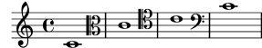
| [ << Tutorial ] | [Top][Contents][Index] | [ Notación corriente >> ] |
| [ < Clave ] | [ Up: Notación sencilla ] | [ Trabajar sobre los archivos de entrada > ] |
Todo junto
He aquí un pequeño ejemplo que muestra todos los elementos anteriores juntos:
\relative { \clef "bass" \time 3/4 \tempo "Andante" 4 = 120 c,2 e8 c' g'2. f4 e d c4 c, r }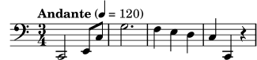
Véase también
Referencia de la notación: Escritura de notas, Escritura de las duraciones (valores rítmicos), Escritura de silencios, Indicación de compás, Clave. endmorerefs
| [ << Tutorial ] | [Top][Contents][Index] | [ Notación corriente >> ] |
| [ < Todo junto ] | [ Up: Cómo escribir archivos de entrada ] | [ Tratar con los errores > ] |
2.2.2 Trabajar sobre los archivos de entrada
Los archivos de entrada de LilyPond son como los archivos fuente
de muchos lenguajes de programación corrientes. Contienen un
enunciado de versión, son sensibles a las mayúsculas y
generalmente los espacios se ignoran. Las expresiones se forman
con llaves { } y los comentarios se denotan por un
signo de porcentaje (%) o por %{ … %} .
Si la frase anterior no tiene sentido para usted ¡no se preocupe! A continuación explicaremos el significado de todos estos términos:
- Enunciado de la versión: Todo archivo de LilyPond debe
contener un enunciado de versión. Un enunciado de versión es una
línea que describe la versión de LilyPond para la que se escribió
este archivo, como en el ejemplo siguiente:
\version "2.26.0"
Por convenio, el enunciado de versión se coloca al principio del archivo de LilyPond.
El enunciado de versión es importante por dos motivos como mínimo. En primer lugar, permite la actualización automática del código de entrada conforme se va modificando la sintaxis de LilyPond. En segundo lugar, indica la versión de LilyPond que se necesita para compilar el archivo.
Si no se escribe ningún enunciado de versión en el archivo de entrada, LilyPond imprime una advertencia durante la compilación del mismo.
- Sensible a las mayúsculas: tiene importancia el hecho de
que introduzca una letra en minúsculas (p.ej.
a, b, s, t) o en mayúsculas (p.ej.A, B, S, T). Las notas son minúsculas: ‘{ c d e }’ es una entrada válida; ‘{ C D E }’ produciría un mensaje de error. - Insensible al número de espacios: no importa cuántos
espacios (o saltos de línea o de tabulación) añada.
‘{ c4 d e }’ significa lo mismo que
‘{ c4 d e }’ y que
{ c4 d e }Por supuesto, el ejemplo anterior es difícil de leer. Una regla práctica es sangrar los bloques de código con un carácter de tabulación, o bien con dos espacios:
{ c4 d e }Sin embargo, sí se necesitan espacios para separar muchos elementos sintácticos unos de otros. En otras palabras, los espacios se pueden siempre añadir, pero no siempre eliminar. Dado que la falta de espacios puede dar lugar a extraños errores, recomendamos insertar espacios siempre antes y después de cualquier elemento sintáctico, por ejemplo, antes y después de las llaves.
- Expresiones: Todo fragmento de código de entrada para
LilyPond ha de llevar { llaves } antes y
después de la entrada. Estas llaves le dicen a LilyPond que la
entrada es una expresión musical unitaria, igual que los
paréntesis ‘()’ de las matemáticas. Las llaves deben ir
rodeadas de un espacio a no ser que se encuentren al comienzo o al
final de una línea, para evitar cualquier ambigüedad.
Una instrucción de LilyPond seguida de una expresión simple entre llaves (como por ejemplo ‘
\relative { … }’) también es una expresión musical unitaria. -
Comentarios: Un comentario es una nota para el lector
humano de la entrada musical; se ignora cuando esta entrada se
analiza, de manera que no tiene ningún efecto sobre la salida
impresa. Existen dos tipos de comentarios. El símbolo de
porcentaje ‘%’ introduce un comentario de línea; todo lo que
se encuentra después de ‘%’ en esa línea se ignora. Por
convenio, una línea de comentario se coloca por encima del
código a que se refiere el comentario.
a4 a a a % este comentario se refiere a las notas Si b2 b
Un comentario de bloque marca una sección entera de entrada musical como comentario. Todo lo que está encerrado dentro de
%{y%}se ignora (pero los comentarios no pueden anidarse, lo que significa que un comentario de bloque no puede incluir otros comentarios de bloque). Si lo hiciera, el primer%}daría por terminado los dos comentarios de bloque. El siguiente fragmento muestra algunos posibles usos para los comentarios:% a continuación van las notas de campanitas del lugar c4 c g' g a a g2 %{ Esta línea y las notas que aparecen más abajo se ignoran, por estar dentro de un comentario de bloque. f4 f e e d d c2 %}
| [ << Tutorial ] | [Top][Contents][Index] | [ Notación corriente >> ] |
| [ < Trabajar sobre los archivos de entrada ] | [ Up: Tutorial ] | [ Consejos generales de solución de problemas > ] |
2.3 Tratar con los errores
A veces, LilyPond no produce el resultado esperado. Esta sección aporta algunos enlaces para ayudarle a resolver los problemas que pudiera encontrar.
| 2.3.1 Consejos generales de solución de problemas | ||
| 2.3.2 Algunos errores comunes |
| [ << Tutorial ] | [Top][Contents][Index] | [ Notación corriente >> ] |
| [ < Tratar con los errores ] | [ Up: Tratar con los errores ] | [ Algunos errores comunes > ] |
2.3.1 Consejos generales de solución de problemas
La solución de problemas en LilyPond puede ser un desafío para las personas acostumbradas a los interfaces gráficos, porque es posible crear archivos de entrada inválidos. Cuando esto ocurre, la mejor forma de identificar y resolver el problema es aplicar un enfoque lógico. Se dan algunas guías para ayudarle a aprender a hacerlo, en Solución de problemas.
| [ << Tutorial ] | [Top][Contents][Index] | [ Notación corriente >> ] |
| [ < Consejos generales de solución de problemas ] | [ Up: Tratar con los errores ] | [ Cómo leer los manuales > ] |
2.3.2 Algunos errores comunes
Existen algunos errores comunes que son difíciles de solucionar si nos basamos solamente en los mensajes de error que se nos presentan. Éstos se describen en Errores comunes.
| [ << Tutorial ] | [Top][Contents][Index] | [ Notación corriente >> ] |
| [ < Algunos errores comunes ] | [ Up: Tutorial ] | [ Material omitido > ] |
2.4 Cómo leer los manuales
Esta sección muestra cómo leer la documentación de forma eficiente, y presenta algunas interesantes funcionalidades interactivas de la versión en línea.
| 2.4.1 Material omitido | ||
| 2.4.2 Ejemplos con enlace | ||
| 2.4.3 Panorámica de los manuales |
| [ << Tutorial ] | [Top][Contents][Index] | [ Notación corriente >> ] |
| [ < Cómo leer los manuales ] | [ Up: Cómo leer los manuales ] | [ Ejemplos con enlace > ] |
2.4.1 Material omitido
Como ya vimos en Trabajar sobre los archivos de entrada, el
código de entrada de LilyPond debe estar rodeado de llaves
{ } o de ‘\relative { … }’.
Durante el resto del presente manual, ciertos ejemplos breves
omitirán las llaves. Para reproducir estos ejemplos puede copiar
la entrada que se muestra, pero debe pegarla entre { y
} dentro del archivo de entrada.
{
…aquí va el ejemplo…
}
Asimismo, recuerde que todo archivo de LilyPond debe llevar un
enunciado \version. Dado que los ejemplos de los manuales
son fragmentos de código y no archivos completos, el enunciado
\version se omite. De todas formas, debemos acostumbrarnos
a incluirlo en nuestros documentos.
| [ << Tutorial ] | [Top][Contents][Index] | [ Notación corriente >> ] |
| [ < Material omitido ] | [ Up: Cómo leer los manuales ] | [ Panorámica de los manuales > ] |
2.4.2 Ejemplos con enlace
Nota: Esta funcionalidad sólo está disponible en los manuales en HTML.
Muchas personas aprenden a utilizar programas probando y enredando con ellos. Esto también puede hacerse con LilyPond. Si hace clic sobre una imagen en la versión en HTML de este manual, podrá ver la entrada exacta de LilyPond que se utilizó para generar esa imagen. Pruébelo sobre esta imagen:
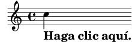
Cortando y pegando todo lo que se encuentra dentro de la sección “ly snippet” (fragmento de tipo ly), tendrá una plantilla inicial para sus experimentos. Para poder ver exactamente el mismo resultado (con igual anchura de línea y todo), copie todo lo que está desde “Start cut-&-pastable section” hasta el final del archivo.
| [ << Tutorial ] | [Top][Contents][Index] | [ Notación corriente >> ] |
| [ < Ejemplos con enlace ] | [ Up: Cómo leer los manuales ] | [ Notación corriente > ] |
2.4.3 Panorámica de los manuales
Existe abundantísima documentación sobre LilyPond. Con frecuencia, los nuevos usuarios se encuentran desorientados respecto a qué parte o partes deben leer, y ocasionalmente pasan por alto la lectura de partes de importancia vital.
Nota: Por favor: no se salte las partes importantes de la documentación. Le resultará mucho más difícil comprender las secciones subsiguientes.
- Antes de intentar hacer cualquier cosa: lea el Tutorial del manual de Aprendizaje, y la sección Notación corriente. Si encuentra términos musicales que no reconoce, búsquelos en el Glosario.
- Antes de tratar de escribir una pieza completa de música: lea la sección Conceptos fundamentales del manual de Aprendizaje. Después, le vendrá bien consultar las secciones correspondientes de la Referencia de la notación.
- Antes de tratar de modificar los resultados predeterminados: lea la sección Trucar la salida del manual de Aprendizaje.
- Antes de afrontar un proyecto grande: lea la sección Sugerencias para escribir archivos de entrada del manual de Utilización del programa.
| [ << Tutorial ] | [Top][Contents][Index] | [ Conceptos fundamentales >> ] |
| [ < Panorámica de los manuales ] | [ Up: Top ] | [ Notación en un solo pentagrama > ] |
3 Notación corriente
Este capítulo explica cómo crear preciosas partituras que contengan notación musical común. Para conocer los pasos más básicos, lea el Tutorial.
| 3.1 Notación en un solo pentagrama | ||
| 3.2 Varias notas a la vez | ||
| 3.3 Canciones | ||
| 3.4 Retoques finales |
| [ << Notación corriente ] | [Top][Contents][Index] | [ Conceptos fundamentales >> ] |
| [ < Notación corriente ] | [ Up: Notación corriente ] | [ Líneas divisorias y comprobaciones de compás > ] |
3.1 Notación en un solo pentagrama
Esta sección presenta la notación común utilizada para la música en su forma más basica: una voz sobre un único pentagrama.
| [ << Notación corriente ] | [Top][Contents][Index] | [ Conceptos fundamentales >> ] |
| [ < Notación en un solo pentagrama ] | [ Up: Notación en un solo pentagrama ] | [ Líneas divisorias > ] |
3.1.1 Líneas divisorias y comprobaciones de compás
| Líneas divisorias | ||
| Comprobaciones de compás |
Líneas divisorias
Las líneas de compás sencillas se dibujan automáticamente en la
música, por lo que no hay que añadirlas de forma manual. Otros
tipos de barras de compás se añaden usando \bar, por
ejemplo \bar "||" para una doble barra, o \bar "|."
para la doble barra final. Para ver una lista completa de las
líneas divisorias, consulte Barras de compás.
\relative { g'1 e1 \bar "||" c2. c'4 \bar "|." }![[image of music]](b2/lily-fdd64512.png)
| [ << Notación corriente ] | [Top][Contents][Index] | [ Conceptos fundamentales >> ] |
| [ < Líneas divisorias ] | [ Up: Líneas divisorias y comprobaciones de compás ] | [ Alturas y armaduras > ] |
Comprobaciones de compás
Aunque no es estrictamente necesario, es conveniente utilizar
comprobaciones de compás dentro del código de entrada para
indicar dónde se supone que van las líneas divisorias. Se
introducen mediante el carácter de barra vertical, | (AltGr
- 1 en el teclado español). Con las comprobaciones de compás, el
programa puede verificar que hemos introducido las duraciones que
completan los compases correctamente. Las comprobaciones de
compás también hacen que el código de entrada sea más fácil de
leer, porque ayudan a organizar el material.
\relative { g'1 | e1 | c2. c' | g4 c g e | c4 r r2 | }![[image of music]](bc/lily-2eccc51c.png)
Si compila el código del ejemplo anterior, verá una advertencia en la salida de la consola:
advertencia: la comprobación de compás ha fallado en: 1/2
g'1 | e1 | c2. c'
| g4 c g e | c4 r r2 |
Aunque la duración que falta está clara en la salida musical de este ejemplo sencillo, la advertencia de la salida de consola es mucho más efectiva al atraer la atención concretamente al ‘4’ que falta en el compás 3.
Véase también
Referencia de la notación: Comprobación de compás y de número de compás.
| [ << Notación corriente ] | [Top][Contents][Index] | [ Conceptos fundamentales >> ] |
| [ < Comprobaciones de compás ] | [ Up: Notación en un solo pentagrama ] | [ Alteraciones accidentales > ] |
3.1.2 Alturas y armaduras
Nota: Con frecuencia, a los nuevos usuarios les cuesta comprender cómo usa LilyPond la armadura: le rogamos que lea la advertencia que aparece al final de esta sección.
| Alteraciones accidentales | ||
| Armaduras | ||
| Advertencia: armaduras y alturas |
| [ << Notación corriente ] | [Top][Contents][Index] | [ Conceptos fundamentales >> ] |
| [ < Alturas y armaduras ] | [ Up: Alturas y armaduras ] | [ Armaduras > ] |
Alteraciones accidentales
Glosario musical: sharp, flat, double sharp, double flat, accidental.
En LilyPond, los nombres de las notas identifican alturas. Por ejemplo, ‘c’ siempre significa Do natural, cualquiera que sea la armadura.
En muchos idiomas, el nombre de una nota consiste en un nombre base que se refiere a los escalones diatónicos de la escala de Do mayor/la menor, p.ej. ‘d’, y un sufijo, que indica la alteración de esta altura básica. El idioma predeterminado para los nombres de nota es el ‘neerlandés’ (dutch). Una nota con sostenido se hace añadiendo ‘is’ al nombre, y una nota bemol añadiendo ‘es’. Como ha podido adivinar, un doble sostenido o doble bemol se hace añadiendo ‘isis’ o ‘eses’. Esta sintaxis se deriva de las convenciones de nomenclatura de las notas en las lenguas nórdicas y germánicas como el alemán y el neerlandés. Para utilizar otras nomenclaturas para las notas, véase Nombres de las notas en otros idiomas.
\relative { cis''4 ees fisis, aeses }![[image of music]](f6/lily-c6b13f9e.png)
| [ << Notación corriente ] | [Top][Contents][Index] | [ Conceptos fundamentales >> ] |
| [ < Alteraciones accidentales ] | [ Up: Alturas y armaduras ] | [ Advertencia: armaduras y alturas > ] |
Armaduras
Glosario musical: key signature, major, minor.
La armadura de la tonalidad se establece mediante la
instrucción \key seguido de una nota y \major o
\minor.
\relative { \key d \major d'4 fis a c | \bar "||" \key c \minor c,4 ees g b | }![[image of music]](a8/lily-3449e359.png)
| [ << Notación corriente ] | [Top][Contents][Index] | [ Conceptos fundamentales >> ] |
| [ < Armaduras ] | [ Up: Alturas y armaduras ] | [ Ligaduras de unión y de expresión > ] |
Advertencia: armaduras y alturas
Glosario musical: accidental, key signature, pitch, flat, natural, sharp, transposition, Pitch names.
LilyPond distingue entre el contenido musical y su representación impresa. Una entrada como ‘d4 e fis2’ define las alturas y duraciones de las notas, lo que es el contenido musical. La armadura forma parte de la representación impresa. La armadura también establece reglas para las representaciones impresas de las notas. LilyPond compara la altura de cada nota de la entrada con la armadura para determinar si imprimir, o no, una alteración accidental.
La instrucción \key fija la armadura, que afecta
a la representación impresa, pero no modifica la altura
asignada a una nota cualquiera como ‘c’ a partir de la
entrada.
Observe el siguiente ejemplo.
\relative { \key d \major cis''4 d e fis }![[image of music]](a5/lily-8443995d.png)
Ninguna nota lleva una alteración impresa, pero de todas formas usted debe escribir el ‘is’ a ‘cis’ y a ‘fis’ en el archivo de entrada.
El texto ‘b’ no significa “imprimir una bolita negra en la tercera línea del pentagrama”. Más bien significa: “hay una nota Si natural”. En la tonalidad de La bemol mayor, lleva una alteración accidental:
\relative { \key aes \major aes'4 c b c }![[image of music]](0f/lily-38628f86.png)
Dicho de otra manera: cada vez que escriba una nota correspondiente a una tecla negra del piano, tiene que añadir ‘is’ o ‘es’ al nombre de la nota
Poner todas las alteraciones de forma explícita puede que requiera algo más de trabajo al teclear, pero la ventaja es que la transposición es más fácil, y las alteraciones se pueden imprimir siguiendo varias convenciones distintas. Consulte Alteraciones accidentales automáticas para ver ejemplos de cómo se pueden imprimir las alteraciones de acuerdo a reglas diferentes.
Véase también
Referencia de la notación: Nombres de las notas en otros idiomas, Alteraciones accidentales, Alteraciones accidentales automáticas, Armadura de la tonalidad.
| [ << Notación corriente ] | [Top][Contents][Index] | [ Conceptos fundamentales >> ] |
| [ < Advertencia: armaduras y alturas ] | [ Up: Notación en un solo pentagrama ] | [ Ligaduras de unión > ] |
3.1.3 Ligaduras de unión y de expresión
Por su similitud visual, tratamos las ligaduras de unión y de expresión en el mismo apartado.
| Ligaduras de unión | ||
| Ligaduras de expresión | ||
| Ligaduras de fraseo | ||
| Advertencias: ligaduras de expresión frente a ligaduras de unión |
| [ << Notación corriente ] | [Top][Contents][Index] | [ Conceptos fundamentales >> ] |
| [ < Ligaduras de unión y de expresión ] | [ Up: Ligaduras de unión y de expresión ] | [ Ligaduras de expresión > ] |
Ligaduras de unión
Glosario musical: tie.
Una ligadura de unión se crea adjuntando un carácter de tilde curva ‘~’ a la primera de las dos notas ligadas:
\relative { g'4~ g c2~ | c4~ c8 a~ a2 | }![[image of music]](78/lily-580b26d5.png)
Cuando la altura no cambia, como es el caso cada vez que hay una ligadura de unión, las alturas que siguen se pueden omitir, y especificar tan solo las duraciones:
\relative { g'4~ 4 c2~ | 4~ 8 a~ 2 | }![[image of music]](bb/lily-1c638c8f.png)
Esta abreviatura puede ser de utilidad en otros lugares donde las duraciones cambian pero la altura se mantiene fija; sin embargo, recuerde que una altura aislada seguida de un espacio y de una duración aislada se interpreta como una sola nota. En otras palabras, ‘c4 a 8 8’ se interpreta como ‘c4 a8 a8’, no como ‘c4 a4 a8 a8’. En vez de ello, escriba ‘c4 a4 8 8 ’.
| [ << Notación corriente ] | [Top][Contents][Index] | [ Conceptos fundamentales >> ] |
| [ < Ligaduras de unión ] | [ Up: Ligaduras de unión y de expresión ] | [ Ligaduras de fraseo > ] |
Ligaduras de expresión
Glosario musical: slur.
Una ligadura de expresión es una curva que se traza abarcando varias notas. Las notas inicial y final se marcan mediante ‘(’ y ‘)’ respectivamente. Observe que el paréntesis de apertura ‘(’ se escribe después de la primera nota de la ligadura.
\relative { d''4( c16) cis( d e c cis d) e( d4) }![[image of music]](13/lily-1b87b9d4.png)
Ligaduras de fraseo
Glosario musical: slur, phrasing.
Las ligaduras que se utilizan para indicar fraseos más
largos se pueden introducir mediante \( y \). Puede
haber al mismo tiempo ligaduras de legato y ligaduras de fraseo.
\relative { g'4\( g8( a) b( c) b4\) }![[image of music]](49/lily-ac61a4c6.png)
| [ << Notación corriente ] | [Top][Contents][Index] | [ Conceptos fundamentales >> ] |
| [ < Ligaduras de fraseo ] | [ Up: Ligaduras de unión y de expresión ] | [ Articulaciones y matices dinámicos > ] |
Advertencias: ligaduras de expresión frente a ligaduras de unión
Glosario musical: articulation, slur, tie.
Una ligadura de expresión parece una ligadura de unión, pero tiene un significado distinto. Una ligadura (de unión) sencillamente hace que la primera nota sea más larga, y sólo se puede utilizar sobre parejas de notas iguales. Las ligaduras de expresión indican la articulación de las notas, y se pueden utilizar sobre grupos mayores de notas. Las ligaduras de unión y de expresión se pueden anidar unas dentro de otras.
\relative { c''4(~ c8 d~ 4 e) }![[image of music]](86/lily-2660565d.png)
Véase también
Referencia de la notación: Ligaduras de unión, Ligaduras de expresión, Ligaduras de fraseo.
3.1.4 Articulaciones y matices dinámicos
Las articulaciones y los matices dinámicos se indican escribiendo ciertos símbolos después de las notas a las que aquellos se aplican.
| Articulaciones | ||
| Indicaciones de digitación | ||
| Matices dinámicos |
| [ << Notación corriente ] | [Top][Contents][Index] | [ Conceptos fundamentales >> ] |
| [ < Articulaciones y matices dinámicos ] | [ Up: Articulaciones y matices dinámicos ] | [ Indicaciones de digitación > ] |
Articulaciones
Glosario musical: articulation.
Las articulaciones más corrientes se pueden añadir a las notas utilizando un guión (‘-’) seguido de un carácter único. He aquí una tabla con algunas de las articulaciones más importantes.
-^un marcato (un ángulo apuntando hacia arriba) --un tenuto (una línea horizontal corta) ->un acento (un ángulo apuntando hacia la derecha) -.un punto de staccato -_un portato (es decir, una lína de tenuto combinada con un staccato)
Consulte la Lista de articulaciones para ver un listado exhaustivo.
\relative { c''4-^ c-- c4-> c-. c2-_ }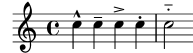
| [ << Notación corriente ] | [Top][Contents][Index] | [ Conceptos fundamentales >> ] |
| [ < Articulaciones ] | [ Up: Articulaciones y matices dinámicos ] | [ Matices dinámicos > ] |
Indicaciones de digitación
Glosario musical: fingering.
De forma parecida a las articulaciones, se puede añadir una digitaciones a una nota utilizando un guión (‘-’) seguido del dígito deseado:
\relative { c''4-3 e-5 b-2 a-1 }![[image of music]](15/lily-9c631223.png)
Las articulaciones y digitaciones normalmente se colocan de forma automática, pero puede especificar una dirección mediante ‘^’ (encima) o ‘_’ (debajo). También puede usar varias articulaciones sobre la misma nota. Sin embargo, casi siempre es mejor dejar que LilyPond determine la dirección de las articulaciones.
\relative { c''4_-^1 d^. f^4_2-> e^-_+ }![[image of music]](c9/lily-b330b4a5.png)
| [ << Notación corriente ] | [Top][Contents][Index] | [ Conceptos fundamentales >> ] |
| [ < Indicaciones de digitación ] | [ Up: Articulaciones y matices dinámicos ] | [ Añadir texto > ] |
Matices dinámicos
Glosario musical: dynamics, crescendo, decrescendo.
Las expresiones de matiz o signos dinámicos se hacen añadiendo las marcas (con una barra invertida) a la nota:
\relative { c''2\ff c\mf c\p c\pp }![[image of music]](4b/lily-7850c9ed.png)
Los crescendi y decrescendi comienzan con
las órdenes \< y \>. La siguiente indicación de
matiz, como por ejemplo \f, da por terminado el
(de)crescendo, o bien se puede usar la instrucción \!:
\relative { c''2\< c | c4\ff\> c c c\! }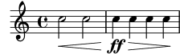
Véase también
Referencia de la notación: Articulaciones y ornamentos, Indicaciones de digitación, Matices dinámicos.
| [ << Notación corriente ] | [Top][Contents][Index] | [ Conceptos fundamentales >> ] |
| [ < Matices dinámicos ] | [ Up: Notación en un solo pentagrama ] | [ Barras automáticas y manuales > ] |
3.1.5 Añadir texto
Es posible añadir texto a la partitura:
\relative { c''2^"espr" a_"legato" }![[image of music]](64/lily-db1c7358.png)
Se puede aplicar un formateo adicional mediante la instrucción
\markup:1
\relative { c''2^\markup { \bold espr } a2_\markup { \dynamic f \italic \small { 2nd } \hspace #0.1 \dynamic p } }![[image of music]](dd/lily-f7cc7a98.png)
Véase también
Referencia de la notación: Escritura del texto.
| [ << Notación corriente ] | [Top][Contents][Index] | [ Conceptos fundamentales >> ] |
| [ < Añadir texto ] | [ Up: Notación en un solo pentagrama ] | [ Instrucciones rítmicas avanzadas > ] |
3.1.6 Barras automáticas y manuales
Glosario musical: beam.
Todas las barras de las figuras se dibujan automáticamente:
\relative { a'8 ais d ees r d c16 b a8 }![[image of music]](c3/lily-f5369027.png)
Si no le gustan las barras automáticas, pueden forzarse manualmente. Marque la primera nota que comprende la barra con ‘[’ y la última con ‘]’. Observe que el corchete de apertura ‘[’ se escribe después de la primera nota que está unida por la barra.
\relative { a'8[ ais] d[ ees r d] c16 b a8 }![[image of music]](2c/lily-88e7d366.png)
Si quiere desactivar completamente el barrado automático o para
una sección extensa de música, utilice la instrucción
\autoBeamOff para apagarlo y \autoBeamOn para
activarlo de nuevo.
\relative { \autoBeamOff a'8 c b4 d8. c16 b4 | \autoBeamOn a8 c b4 d8. c16 b4 | }![[image of music]](1b/lily-bc157bd7.png)
Véase también
Referencia de la notación: Barras automáticas, Barras manuales.
| [ << Notación corriente ] | [Top][Contents][Index] | [ Conceptos fundamentales >> ] |
| [ < Barras automáticas y manuales ] | [ Up: Notación en un solo pentagrama ] | [ Compás parcial > ] |
3.1.7 Instrucciones rítmicas avanzadas
Es necesario ampliar el estudio de las dureciones simples (esto es, números adjuntados a las alturas, con o sin puntillo) con algunos conceptos adicionales para así cubrir un ámbito más amplio de la entrada de ritmos y duraciones.
| Compás parcial | ||
| Grupos especiales | ||
| Notas de adorno |
| [ << Notación corriente ] | [Top][Contents][Index] | [ Conceptos fundamentales >> ] |
| [ < Instrucciones rítmicas avanzadas ] | [ Up: Instrucciones rítmicas avanzadas ] | [ Grupos especiales > ] |
Compás parcial
Glosario musical: anacrusis.
Una anacrusa se introduce con la palabra clave
\partial. Va seguida de una duración: ‘\partial 4’ es
una anacrusa de negra y ‘\partial 8’ de corchea.
\relative { \partial 8 f''8 | c2 d | }![[image of music]](22/lily-7141ef1d.png)
| [ << Notación corriente ] | [Top][Contents][Index] | [ Conceptos fundamentales >> ] |
| [ < Compás parcial ] | [ Up: Instrucciones rítmicas avanzadas ] | [ Notas de adorno > ] |
Grupos especiales
Glosario musical: note value, triplet.
Los grupos especiales como los tresillos se hacen con la palabra
clave \tuplet. Requiere dos argumentos: una fracción y un
fragmento de música. La fracción es el número de notas del grupo
partido por el número de notas que normalmente ocupan la misma
duración. Para los tresillos hay tres notas en el espacio de dos,
de manera que los tresillos tienen una fracción de 3/2.
\relative { \tuplet 3/2 { f''8 g a } \tuplet 3/2 { c8 r c } \tuplet 3/2 { f,8 g16[ a g a] } \tuplet 3/2 { d4 a8 } }![[image of music]](8d/lily-62792834.png)
| [ << Notación corriente ] | [Top][Contents][Index] | [ Conceptos fundamentales >> ] |
| [ < Grupos especiales ] | [ Up: Instrucciones rítmicas avanzadas ] | [ Varias notas a la vez > ] |
Notas de adorno
Glosario musical: grace notes, acciaccatura, appoggiatura.
Las notas de adorno se crean con la instrucción
\grace, aunque también se pueden conseguir precediendo una
expresión musical por la palabra clave \appoggiatura (una
nota de adorno unada a la nota principal mediante una ligadura) o
\acciaccatura (una nota de adirno tachada y unida a la nota
principal mediante una ligadura):
\relative { c''2 \grace { a32 b } c2 | c2 \appoggiatura b16 c2 | c2 \acciaccatura b16 c2 | }![[image of music]](1c/lily-5a2d6dd9.png)
Véase también
Referencia de la notación: Notas de adorno, Grupos especiales, Anacrusas.
| [ << Notación corriente ] | [Top][Contents][Index] | [ Conceptos fundamentales >> ] |
| [ < Notas de adorno ] | [ Up: Notación corriente ] | [ Explicación de las expresiones musicales > ] |
3.2 Varias notas a la vez
Esta sección es una introducción a la notación con notas simultáneas: varios instrumentos, varios pentagramas para un solo instrumento (como el piano) y acordes.
La palabra “polifonía” en música hace referencia al hecho de tener más de una voz en un momento determinado dentro de una pieza musical. La palabra “polifonía” en LilyPond se refiere al hecho de tener más de una voz en el mismo pentagrama.
| 3.2.1 Explicación de las expresiones musicales | ||
| 3.2.2 Varios pentagramas | ||
| 3.2.3 Grupos de pentagramas | ||
| 3.2.4 Combinar notas para formar acordes | ||
| 3.2.5 Polifonía en un solo pentagrama |
| [ << Notación corriente ] | [Top][Contents][Index] | [ Conceptos fundamentales >> ] |
| [ < Varias notas a la vez ] | [ Up: Varias notas a la vez ] | [ Analogía: expresiones matemáticas > ] |
3.2.1 Explicación de las expresiones musicales
En los archivos de entrada de LilyPond, la música se representa mediante expresiones musicales. Una sola nota es una expresión musical:
a'4![[image of music]](89/lily-9110be04.png)
Al encerrar música dentro de llaves estamos creando una expresión musical compuesta. Aquí hemos creado una expresión musical compuesta con dos notas:
\relative { a'4 g4 }![[image of music]](44/lily-348b91cf.png)
Si colocamos un grupo de expresiones musicales (p.ej.: notas) dentro de llaves, eso significa que se encuentran en secuencia (es decir, cada una sigue a la anterior). El resultado es otra expresión musical:
\relative { { a'4 g } f4 g }![[image of music]](be/lily-fee0e1b2.png)
| Analogía: expresiones matemáticas | ||
| Expresiones musicales simultáneas: varios pentagramas | ||
| Expresiones musicales simultáneas: un solo pentagrama |
Analogía: expresiones matemáticas
Este mecanismo es semejante a las fórmulas matemáticas: una fórmula grande se construye combinando fórmulas pequeñas. Dichas fórmulas se llaman expresiones, y su definición es recursiva de tal forma que se pueden construir expresiones de un tamaño y complejidad arbitrarios. Por ejemplo:
1 1 + 2 (1 + 2) * 3 ((1 + 2) * 3) / (4 * 5)
Ésta es una secuencia de expresiones donde cada expresión se encuentra contenida dentro de la siguiente, más grande. Las expresiones más simples son números, y las mayores se hacen combinando expresiones mediante operadores (como +, * y /) y paréntesis. Del mismo modo que las expresiones matemáticas, las expresiones musicales se pueden anidar a una profundidad arbitraria, lo que se hace necesario para músicas complejas como las partituras polifónicas.
Expresiones musicales simultáneas: varios pentagramas
Glosario musical: polyphony.
Esta técnica es muy útil para la música polifónica.
Para introducir música con más voces o con más pentagramas, lo que
hacemos es combinar varias expresiones en paralelo. Para indicar
que dos voces se deben interpretar al mismo tiempo, sencillamente
introduzca una combinación simultánea de expresiones musicales.
Una expresión musical ‘simultánea’ se forma encerrando las
expresiones dentro de << y >>. En el ejemplo que
sigue, tres secuencias (cada una de las cuales contiene dos notas
diferentes) se combinan de forma simultánea:
<< \relative { a'2 g } \relative { f'2 e } \relative { d'2 b } >>![[image of music]](c4/lily-89a38849.png)
Tenga en cuenta que hemos sangrado cada nivel jerárquico de la entrada con un margen distinto. A LilyPond no le importa cuánto (o cuán poco) espacio haya al comienzo de una línea, pero el establecimiento de márgenes distintos dentro del código de LilyPond, de esta forma, lo hace mucho más fácil de leer por nosotros los seres humanos.
Nota: Cada nota se entiende relativa a la nota anterior de la
entrada; solamente la primera dentro del bloque
\relative es relativa a la nota ‘c’ (una octava
por debajo del Do central).
Expresiones musicales simultáneas: un solo pentagrama
Para determinar el número de pentagramas en una pieza, LilyPond examina el comienzo de la primera expresión. Si hay una sola nota, hay un solo pentagrama; si hay una expresión simultánea, hay más de un pentagrama. El siguiente ejemplo presenta una expresión compleja, pero dado que comienza con una sola nota, se dispone sobre un solo pentagrama.
\relative { c''2 <<c e>> | << { e2 f } { c2 <<b d>> } >> | }![[image of music]](01/lily-665622d9.png)
| [ << Notación corriente ] | [Top][Contents][Index] | [ Conceptos fundamentales >> ] |
| [ < Expresiones musicales simultáneas: un solo pentagrama ] | [ Up: Varias notas a la vez ] | [ Grupos de pentagramas > ] |
3.2.2 Varios pentagramas
Como ya hemos visto anteriormente (see Explicación de las expresiones musicales), los archivos de entrada para LilyPond se construyen a base de expresiones musicales. Si la partitura comienza con expresiones musicales simultáneas, LilyPond crea varios pentagramas. Sin embargo es más fácil ver lo que ocurre si creamos cada uno de los pentagramas de forma explícita.
Para imprimir más de un pentagrama, cada fragmento de música que
constituye un pentagrama se marca escribiendo \new Staff
antes de él. Estos elementos Staff se combinan después en
paralelo con << y >>:
<< \new Staff { \clef treble c''4 } \new Staff { \clef bass c4 } >>![[image of music]](cb/lily-ae851a45.png)
La instrucción \new inaugura un contexto de notación.
Un contexto de notación es un entorno dentro del que se
interpretan los acontecimientos musicales (como las notas o las
instrucciones \clef). Para piezas sencillas, tales
contextos de notación se crean automáticamente. Para piezas más
complicadas, es mejor marcar los contextos de forma explícita.
Existen varias clases de contextos. Los más importantes son
Score, Staff y Voice, que manejan la notación
melódica, mientras que Lyrics se ocupa de los textos
cantados y ChordNames imprime los nombres de los acordes.
En términos de sintaxis, la anteposición de \new a una
expresión musical crea una expresión musical mayor. Es semejante
al signo menos de las matemáticas. La fórmula (4+5) es una
expresión, por tanto -(4+5) es una expresión más amplia.
Las indicaciones de compás escritas en un pentagrama afectan al resto de ellos, de forma predeterminada. En cambio, la armadura de la tonalidad de un pentagrama no afecta a los otros pentagramas. Este comportamiento predeterminado diferente es a causa de que las partituras con instrumentos transpositores son más comunes que las partituras polirrítmicas.
<< \new Staff { \clef treble \key d \major \time 3/4 c''4 } \new Staff { \clef bass c4 } >>![[image of music]](8e/lily-c8f11f58.png)
| [ << Notación corriente ] | [Top][Contents][Index] | [ Conceptos fundamentales >> ] |
| [ < Varios pentagramas ] | [ Up: Varias notas a la vez ] | [ Combinar notas para formar acordes > ] |
3.2.3 Grupos de pentagramas
Glosario musical: brace, staff, system.
La música para piano se compone tipográficamente en forma de dos
pentagramas unidos mediante una llave. El aspecto impreso
de este sistema de pentagramas se parece al ejemplo polifónico que
aparece en Varios pentagramas, pero en esta ocasión la expresión
completa se coloca dentro de un PianoStaff:
\new PianoStaff << \new Staff … \new Staff … >>
He aquí un pequeño ejemplo.
\new PianoStaff << \new Staff \relative { \time 2/4 c''4 e | g g, | } \new Staff \relative { \clef bass c4 c' | e c | } >>![[image of music]](79/lily-d4aee0ae.png)
Otros grupos de pentagramas se declaran mediante \new
GrandStaff, que es apropiado para partituras orquestales, y
\new ChoirStaff, que es apropiado para partituras vocales.
Cada uno de estos grupos de pautas forma un tipo de contexto
distinto, que dibuja la llave en el lado izquierdo y que también
controla el alcance vertical de las líneas divisorias.
Véase también
Referencia de la notación: Teclados y otros instrumentos de varios pentagramas, Impresión de los pentagramas.
| [ << Notación corriente ] | [Top][Contents][Index] | [ Conceptos fundamentales >> ] |
| [ < Grupos de pentagramas ] | [ Up: Varias notas a la vez ] | [ Polifonía en un solo pentagrama > ] |
3.2.4 Combinar notas para formar acordes
Glosario musical: chord.
Hemos visto con anterioridad cómo se pueden combinar las notas formando acordes que indican que son simultáneas: encerrándolas entre dobles ángulos. Sin embargo, la forma normal de indicar un acorde es encerrar las notas entre ángulos sencillos. Observe que todas las notas de un acorde deben tener la misma duración, y que la duración se escribe después del ángulo de cierre.
\relative { r4 <c'' e g> <c f a>2 }![[image of music]](90/lily-610bc6f9.png)
Debemos pensar en los acordes como algo casi equivalente a las notas sencillas: prácticamente todo lo que se puede adjuntar a una nota se puede adjuntar también a un acorde, y normalmente deben escribirse por fuera de los ángulos. Por ejemplo, puede combinar marcas como barras y ligaduras, con acordes.
\relative { r4 <c'' e g>~ <c f a>2 | <c e g>8[ <c f a> <c e g> <c f a>] <c e g>8\>[ <c f a> q q]\! | r4 <c e g>8.\p q16( q4-. <c f a>) | }![[image of music]](a4/lily-b999df29.png)
El ejemplo de arriba es también un ejemplo de una funcionalidad muy útil: se puede repetir un acorde mediante el símbolo ‘q’. Esto funciona incluso para las notas sueltas que pueda haber.
\relative { c'8 <e g>8 q q g, q q q }![[image of music]](21/lily-8c610730.png)
Véase también
Referencia de la notación: Notas en acorde.
| [ << Notación corriente ] | [Top][Contents][Index] | [ Conceptos fundamentales >> ] |
| [ < Combinar notas para formar acordes ] | [ Up: Varias notas a la vez ] | [ Canciones > ] |
3.2.5 Polifonía en un solo pentagrama
La música polifónica en LilyPond, aunque no es difícil, utiliza conceptos que aún no hemos tratado, por lo que no vamos a presentarlos en este momento. En su lugar, las secciones siguientes presentan estos conceptos y los explican en profundidad.
Véase también
Manual de aprendizaje: Las voces contienen música.
Referencia de la notación: Notas simultáneas.
| [ << Notación corriente ] | [Top][Contents][Index] | [ Conceptos fundamentales >> ] |
| [ < Polifonía en un solo pentagrama ] | [ Up: Notación corriente ] | [ Elaborar canciones sencillas > ] |
3.3 Canciones
En esta sección presentamos cómo elaborar música vocal y hojas de canción sencillas.
| 3.3.1 Elaborar canciones sencillas | ||
| 3.3.2 Alineación de la letra a una melodía | ||
| 3.3.3 Letra en varios pentagramas |
| [ << Notación corriente ] | [Top][Contents][Index] | [ Conceptos fundamentales >> ] |
| [ < Canciones ] | [ Up: Canciones ] | [ Alineación de la letra a una melodía > ] |
3.3.1 Elaborar canciones sencillas
Glosario musical: lyrics.
Presentamos a continuación el inicio de la melodía de una canción infantil, “Girls and boys come out to play”.
\relative { \key g \major \time 6/8 d''4 b8 c4 a8 | d4 b8 g4 }![[image of music]](e9/lily-7384468c.png)
La letra se puede asignar a esas notas, combinando
ambas con la palabra clave \addlyrics. La letra se escribe
separando cada sílaba mediante un espacio.
<< \relative { \key g \major \time 6/8 d''4 b8 c4 a8 | d4 b8 g4 } \addlyrics { Girls and boys come out to play, } >>![[image of music]](de/lily-a2b07153.png)
Observe los ángulos dobles <<…>> alrededor del
fragmento entero para expresar que la música y la letra han de
suceder al mismo tiempo.
| [ << Notación corriente ] | [Top][Contents][Index] | [ Conceptos fundamentales >> ] |
| [ < Elaborar canciones sencillas ] | [ Up: Canciones ] | [ Letra en varios pentagramas > ] |
3.3.2 Alineación de la letra a una melodía
Glosario musical: melisma, extender line.
La siguiente línea de la canción infantil es The moon doth shine as bright as day. A continuación vamos a ampliarla:
<< \relative { \key g \major \time 6/8 d''4 b8 c4 a8 | d4 b8 g4 g8 | a4 b8 c b a | d4 b8 g4. | } \addlyrics { Girls and boys come out to play, The moon doth shine as bright as day; } >>![[image of music]](b1/lily-3cb061cd.png)
Si miramos la música, podemos observar que la letra adicional no se alinea correctamente con las notas. La palabra shine se debe cantar sobre dos notas, no una. Esto se conoce como melisma, una sílaba única que se canta sobre más de una nota. Existen varias formas de hacer que una sílaba recaiga sobre varias notas, siendo la más sencilla escribir una ligadura de expresión sobre ellas (para más información véase See Ligaduras de unión y de expresión).
<< \relative { \key g \major \time 6/8 d''4 b8 c4 a8 | d4 b8 g4 g8 | a4 b8 c( b) a | d4 b8 g4. | } \addlyrics { Girls and boys come out to play, The moon doth shine as bright as day; } >>![[image of music]](d8/lily-e7df2761.png)
Ahora la letra se alinea correctamente con las notas, pero el barrado automático de las notas que corresponden a shine as no parece correcto. Podemos remediarlo insertando instrucciones de barrado manual para sobreescribir el barrado automático; para ver más detalles consulte See Barras automáticas y manuales.
<< \relative { \key g \major \time 6/8 d''4 b8 c4 a8 | d4 b8 g4 g8 | a4 b8 c([ b]) a | d4 b8 g4. | } \addlyrics { Girls and boys come out to play, The moon doth shine as bright as day; } >>![[image of music]](e4/lily-ea02f2b5.png)
Como alternativa a la utilización de ligaduras de expresión, los melismas se pueden indicar solamente en la letra utilizando un guión bajo, ‘_’, para cada nota que queremos incluir dentro del melisma.
<< \relative { \key g \major \time 6/8 d''4 b8 c4 a8 | d4 b8 g4 g8 | a4 b8 c[ b] a | d4 b8 g4. | } \addlyrics { Girls and boys come out to play, The moon doth shine _ as bright as day; } >>![[image of music]](b1/lily-d7ddaa70.png)
Si una sílaba se extiende sobre varias notas o una sola nota muy
larga, normalmente se traza una línea extensora desde
la sílaba que se extiende y por debajo de todas las notas que
corresponden a dicha sílaba. Se escribe como dos guiones bajos
(__). Es importante que los guiones bajos estén separados
mediante uno o más espacios de las sílabas anterior y siguiente.
He aquí un ejemplo extraído de los primeros tres compases del Lamento de Dido, de Dido y Eneas de Purcell:
<< \relative { \key g \minor \time 3/2 g'2 a bes | bes2( a) b2 | c4.( bes8 a4. g8 fis4.) g8 | fis1 } \addlyrics { When I am laid, am laid __ in earth, } >>![[image of music]](e5/lily-cba458ef.png)
Hasta el momento, ninguno de los ejemplos implicaban palabras que
tuviesen más de una sílaba. Estas palabras se reparten por lo
general a razón de una nota por cada sílaba, con guiones cortos
entre las sílabas. Dichos guiones separadores se teclean como dos
guiones seguidos (--), con el resultado de un guión corto
centrado entre las sílabas. Es importante que los guiones estén
separados de las sílabas anterior y siguiente mediante uno o más
espacios.
Presentamos a continuación un ejemplo que demuestra esto y todo lo que hemos aprendido hasta el momento acerca de la alineación de la letra a las notas.
<< \relative { \key g \major \time 3/4 \partial 4 d'4 | g4 g a8( b) | g4 g b8( c) | d4 d e | c2 } \addlyrics { A -- way in a __ man -- ger, no __ crib for a bed, } >>![[image of music]](4a/lily-a89debcd.png)
Algunos textos (especialmente los que están en italiano o en español) requieren lo contrario: colocar más de una sílaba a una única nota. Esto se consigue enlazando las sílabas entre sí mediante un guión bajo simple (‘_’, sin ningún espacio), o bien encerrándolas entre corchetes. Aquí aparece un ejemplo procedente de la ópera El barbero de Sevilla de Rossini, donde la sílaba al se canta sobre la misma nota que la sílaba go de la palabra Largo en el aria de Fígaro Largo al factotum:
<< \relative { \clef bass \key c \major \time 6/8 c'4.~ 8 d b | c8([ d]) b c d b | c8 } \addlyrics { Lar -- go_al fac -- to -- tum del -- la cit -- tà } >>![[image of music]](cc/lily-e7345c33.png)
Véase también
Referencia de la notación: Música vocal.
| [ << Notación corriente ] | [Top][Contents][Index] | [ Conceptos fundamentales >> ] |
| [ < Alineación de la letra a una melodía ] | [ Up: Canciones ] | [ Retoques finales > ] |
3.3.3 Letra en varios pentagramas
La solución sencilla que utiliza \addlyrics se puede usar para
poner letra a más de un pentagrama. Aquí aparece un ejemplo sacado
del oratorio Judas Macabeo de Haendel.
<< \relative { \key f \major \time 6/8 \partial 8 c''8 | c8([ bes]) a a([ g]) f | f'4. b, | c4.~ 4 } \addlyrics { Let flee -- cy flocks the hills a -- dorn, __ } \relative { \key f \major \time 6/8 \partial 8 r8 | r4. r4 c'8 | a'8([ g]) f f([ e]) d | e8([ d]) c bes'4 } \addlyrics { Let flee -- cy flocks the hills a -- dorn, } >>![[image of music]](ee/lily-f9ae663e.png)
Cualquier partitura de una complejidad mayor que la de este sencillo ejemplo se hace mejor separando la letra de la estructura de pentagramas mediante variables (expresiones con nombre). See Organizar las piezas mediante variables.
Véase también
Referencia de la notación: Música vocal.
| [ << Notación corriente ] | [Top][Contents][Index] | [ Conceptos fundamentales >> ] |
| [ < Letra en varios pentagramas ] | [ Up: Notación corriente ] | [ Organizar las piezas mediante variables > ] |
3.4 Retoques finales
Éste es el último apartado del tutorial; muestra la forma de dar los toques finales a piezas sencillas, y ofrece una introducción al resto del manual.
| 3.4.1 Organizar las piezas mediante variables | ||
| 3.4.2 Añadir títulos | ||
| 3.4.3 Nombres de nota absolutos | ||
| 3.4.4 Más allá del tutorial |
| [ << Notación corriente ] | [Top][Contents][Index] | [ Conceptos fundamentales >> ] |
| [ < Retoques finales ] | [ Up: Retoques finales ] | [ Añadir títulos > ] |
3.4.1 Organizar las piezas mediante variables
Cuando los elementos que hemos discutido anteriormente se combinan para producir archivos mayores, las expresiones musicales se hacen enormes. En música polifónica con muchos pentagramas, los archivos de entrada pueden volverse muy propensos a la confusión. Podemos reducir esta confusión utilizando las variables.
Con las variables (también conocidas como identificadores o macros), podemos trocear las expresiones musicales complejas. Una variable se asigna de la manera siguiente:
musicaConNombre = { … }
El contenido de la expresión musical musicaConNombre se
puede usar posteriormente colocando una barra invertida delante
del nombre (\musicaConNombre), igual que una orden normal
de LilyPond.
Violin = \new Staff { \relative { a'4 b c b } } Cello = \new Staff { \relative { \clef bass e2 d } } { << \Violin \Cello >> }![[image of music]](91/lily-6c0e61bd.png)
Por convención, los nombres de variable consisten enteramente en caracteres alfabéticos. Para ver información detallada, consulte Estructura del archivo.
Las variables se deben definir antes de la expresión musical principal, pero se pueden usar tantas veces como se quiera, en cualquier lugar, una vez que han sido definidas. Incluso se pueden usar dentro de la definición de otra variable, proporcionando una vía para acortar el código si una sección musical se repite muchas veces.
tresilloA = \relative { \tuplet 3/2 { c'8 e g } } compasA = { \tresilloA \tresilloA \tresilloA \tresilloA } { \compasA \compasA }![[image of music]](4f/lily-3cc4ba3c.png)
Las variables se pueden usar para otros muchos tipos de objetos dentro del código de entrada. Por ejemplo,
miAncho = 4.5\cm % número pasado a una variable de \paper
% (unidades: milímetros)
miNombre = "Wendy" % cadena pasada a un elemento de marcado
papelAcinco = \paper { #(set-paper-size "a5") }
Dependiendo de su contenido, la variable se puede usar en distintos lugares. El siguiente ejemplo utiliza las variables anteriores:
\paper {
\papelAcinco
line-width = \miAncho
}
{
c4^\miNombre
}
| [ << Notación corriente ] | [Top][Contents][Index] | [ Conceptos fundamentales >> ] |
| [ < Organizar las piezas mediante variables ] | [ Up: Retoques finales ] | [ Nombres de nota absolutos > ] |
3.4.2 Añadir títulos
La información sobre el título, autor, número de Opus y similares
se escriben en el bloque \header. Éste se encuentra fuera
de la expresión musical principal; el bloque \header
normalmente se sitúa por debajo del número de versión.
\version "2.26.0"
\header {
title = "Sinfonía"
composer = "Yo"
opus = "Op. 9"
}
{
… música …
}
Cuando se procesa el archivo, el título y el autor se imprimen por encima de la música. Puede obtener más información sobre los títulos en Crear títulos encabezamientos y pies de página.
| [ << Notación corriente ] | [Top][Contents][Index] | [ Conceptos fundamentales >> ] |
| [ < Añadir títulos ] | [ Up: Retoques finales ] | [ Más allá del tutorial > ] |
3.4.3 Nombres de nota absolutos
Hasta el momento hemos utilizado \relative para definir las
alturas. Ésta es normalmente la forma más rápida de escribir la
mayor parte de la música. Sin \relative, las alturas se
interpretan en modo absoluto.
En este modo, LilyPond tratará todas las alturas como valores
absolutos: una ‘c'’ significa siempre un Do central,
una b significa siempre la nota inmediatamente por debajo
del Do central, y una g, significa siempre la nota
que se coloca en la primera línea del pentagrama en clave de Fa.
{ \clef bass c'4 b g, g, | g,4 f, f c' | }![[image of music]](7e/lily-7d8ea0e9.png)
La escritura de una melodía en clave de Sol implica un gran número de apóstrofos (‘'’). Considere este fragmento de Mozart:
{ \key a \major \time 6/8 cis''8. d''16 cis''8 e''4 e''8 | b'8. cis''16 b'8 d''4 d''8 | }![[image of music]](92/lily-d90fc61e.png)
Las marcas de octava que son comunes se pueden indicar una sola
vez, utilizando la instrucción \fixed seguida de una altura
de referencia:
\fixed c'' { \key a \major \time 6/8 cis8. d16 cis8 e4 e8 | b,8. cis16 b,8 d4 d8 | }![[image of music]](00/lily-f8cb751b.png)
Con \relative, el ejemplo anterior no requiere marcas de
cambio de octava porque esta melodía se mueve por intervalos no
mayores de una cuarta, o tres posiciones dentro del pentagrama:
\relative { \key a \major \time 6/8 cis''8. d16 cis8 e4 e8 | b8. cis16 b8 d4 d8 | }![[image of music]](ac/lily-049ba55d.png)
Si comete un error con una marca de octava (‘'’ o ‘,’)
mientras trabaja en el modo \relative, será muy obvio
(muchas notas estarán en la octava equivocada). Mientras trabaja
en el modo absoluto, un solo fallo no será tan visible, y tampoco
será tan fácil de localizar.
Sin embargo, el modo absoluto es útil para escribir música que contenga intervalos grandes, y será extremadamente útil para hacer archivos de LilyPond generados por ordenador. Cuando se copian y pegan fragmentos melódicos, el modo absoluto preserva la octava del material original.
Consulte Relative octave entry para ver situaciones más complejas.
| [ << Notación corriente ] | [Top][Contents][Index] | [ Conceptos fundamentales >> ] |
| [ < Nombres de nota absolutos ] | [ Up: Retoques finales ] | [ Conceptos fundamentales > ] |
3.4.4 Más allá del tutorial
Después de terminar el tutorial, quizá debería probar a escribir una o dos piezas. Comience con una de las plantillas (see Plantillas) y añada algunas notas. Si necesita un tipo de notación que no ha sido tratada en el tutorial, eche un vistazo a la Referencia de Notación, empezando por Notación musical. Si quiere escribir música para un conjunto instrumental que no está cubierto por ninguna plantilla, see Extender las plantillas.
Una vez que ha escrito algunas piezas cortas, lea el resto del Manual de aprendizaje (capítulos 3 al 5). ¡Por supuesto, no pasa nada por leerlo ahora mismo! Sin embargo, el resto del Manual de Aprendizaje da por sentado que está familiarizado con la entrada de LilyPond. Puede saltarse estos capítulos ahora y volver a ellos cuando haya adquirido más experiencia.
En este tutorial y en el resto del Manual de aprendizaje, existe un apartado Véase también al final de cada una de las secciones, que contiene referencias cruzadas a otras secciones: no siga estas referencias durante la primera lectura; cuando haya leído el Manual de aprendizaje completo, quizá desee releer ciertas secciones y seguir las referencias cruzadas para obtener más información.
Si no lo ha hecho aún, le rogamos que lea Panorámica de los manuales. Existe una gran cantidad de información sobre LilyPond, de manera que los recién llegados con frecuencia no saben exactamente dónde deben buscar la ayuda. Si emplea cinco minutos en leer cuidadosamente esta sección ¡se ahorrará horas de frustración buscando en el sitio equivocado!
| [ << Notación corriente ] | [Top][Contents][Index] | [ Trucar la salida >> ] |
| [ < Más allá del tutorial ] | [ Up: Top ] | [ Cómo funcionan los archivos de entrada de LilyPond > ] |
4 Conceptos fundamentales
Ha podido ver en el tutorial cómo producir música bellamente impresa a partir de un simple archivo de texto. Esta sección presenta los conceptos y técnicas que se requieren para producir partituras igualmente bellas pero más complejas.
| 4.1 Cómo funcionan los archivos de entrada de LilyPond | ||
| 4.2 Las voces contienen música | ||
| 4.3 Contextos y grabadores | ||
| 4.4 Extender las plantillas |
| [ << Conceptos fundamentales ] | [Top][Contents][Index] | [ Trucar la salida >> ] |
| [ < Conceptos fundamentales ] | [ Up: Conceptos fundamentales ] | [ Introducción a la estructura de los archivos de LilyPond > ] |
4.1 Cómo funcionan los archivos de entrada de LilyPond
El formato de entrada de LilyPond es bastante libre en su forma y concede a los usuarios con experiencia mucha flexibilidad para estructurar sus archivos de la forma que deseen. Sin embargo, toda esta flexibilidad puede hacer que las cosas se vuelvan confusas para los nuevos usuarios. Esta sección le va a explicar parte de esta estructura, pero puede obviar ciertos detalles en aras de la simplicidad. Para ver una descripción completa del formato de entrada, consulte Estructura del archivo.
4.1.1 Introducción a la estructura de los archivos de LilyPond
Un ejemplo básico de archivo de entrada de LilyPond es el siguiente:
\version "2.26.0"
\header { }
\score {
… expresión musical compuesta … % toda la música va aquí
\layout { }
\midi { }
}
Existen muchas variaciones de este esquema básico, pero el ejemplo constituye un útil punto de partida.
Hasta el momento, ninguno de los ejemplos que ha podido ver
utiliza la instrucción \score. Esto es así a causa de
que LilyPond añade automáticamente las órdenes adicionales que se
requieren cuando le proporcionamos una entrada sencilla.
LilyPond trata una entrada como esta:
\relative {
c''4 a b c
}
como una abreviatura de esta otra:
\book {
\score {
\new Staff {
\new Voice {
\relative {
c''4 a b c
}
}
}
\layout { }
}
}
En otras palabras, si la entrada consta de una única expresión musical, LilyPond interpreta el archivo como si la expresión musical estuviera rodeada por un envoltorio hecho por las instrucciones que acabamos de ver.
¡Advertencia! Muchos de los ejemplos que aparecen en la
documentación de LilyPond omiten las instrucciones \new
Staff y \new Voice, dejando que se creen de forma
implícita. Esto funciona bien para ejemplos sencillos, pero para
ejemplos más complicados, especialmente cuando se usan
instrucciones adicionales, la creación implícita de los contextos
puede dar lugar a resultados inesperados, incluso en ocasiones
crear pentagramas no deseados. Para una explicación detallada
sobre cómo crear contextos explícitamente, see Contextos y grabadores.
Nota: Cuando se escriben más de unas pocas líneas de música, se recomienda crear siempre los pentagramas y las voces de forma explícita.
De todas formas, por ahora vamos a volver al primer ejemplo para
examinar la instrucción \score, dejando las demás en su
forma predeterminada.
Un bloque \score siempre debe contener una expresión
musical única. Recuerde que una expresión musical podía ser
cualquier cosa entre una sola nota hasta una enorme expresión
compuesta como
{
\new StaffGroup <<
… inserte aquí la partitura completa de una ópera de Wagner …
>>
}
Puesto que todo se encuentra dentro de { … },
cuenta como una expresión musical.
Como vimos anteriormente, el bloque \score puede contener
otras cosas, tales como
\score {
{ c'4 a b c' }
\header { }
\layout { }
\midi { }
}
Observe que estas tres instrucciones (\header,
\layout y \midi) son especiales: a diferencia del
resto de las instrucciones que comienzan con una barra invertida
(\), no son expresiones musicales y no forman parte
de ninguna expresión musical. Por tanto, se pueden situar dentro
de un bloque \score o fuera de él. De hecho, estas
instrucciones se sitúan por lo general fuera del bloque
\score (por ejemplo, \header se suele colocar antes
de la instrucción \score, como muestra el ejemplo que
aparece al principio de la sección.
Dos instrucciones más que no hemos visto aún son \layout y
\midi. Si aparecen tal y como se muestran aquí, hacen que
LilyPond produzca una salida impresa y una salida MIDI,
respectivamente. Se describen con todo detalle en el manual de
Referencia de la notación, en Disposición de la partitura y en Creación de salida MIDI.
Podemos escribir varios bloques \score. Cada uno de ellos
recibirá el mismo tratamiento que una partitura independiente,
pero se combinarán todos juntos en un archivo de salida único. No
se necesita ninguna instrucción \book, se creará una
implícitamente. Sin embargo, si quiere archivos de salida
separados a partir de un único archivo .ly, entonces es
necesario utilizar la instrucción \book para separar las
distintas secciones: cada bloque \book produce un archivo
de salida distinto.
En resumen:
- Cada bloque
\bookcrea un archivo de salida distinto (por ejemplo, un archivo PDF). Si no hemos escrito uno de forma explícita, LilyPond envuelve todo nuestro código de entrada dentro de un bloque\bookde forma implícita. - Cada bloque
\scorees un trozo de música separado dentro de un bloque\book. -
Cada bloque
\layoutafecta al bloque\scoreo\bookdentro del cual aparece (es decir, un bloque\layoutdentro de un bloque\scoreafecta solamente a ese bloque\score, pero un bloque\layoutfuera de un bloque\score(que por ello está dentro de un bloque\book, ya sea explícita o implícitamente) afecta a los bloques\scoreque están dentro de ese\book.
Para ver más detalles, consulte Varias partituras en un libro.
Otro magnífico atajo es la posibilidad de definir variables, como se ha visto anteriormente (see Organizar las piezas mediante variables). Todas las plantillas emplean lo siguiente:
melodia = \relative {
c'4 a b c
}
\score {
\melodia
}
Cuando LilyPond examina este archivo, toma el valor de
melodia (todo lo que está después del signo igual) y lo
inserta dondequiera que ve \melodia. No se requiere un
cuidado especial con el nombre (puede ser melodia,
global, CompasArmadura, manoderechadelpiano o
fulanomengano o cualquier otro). Recuerde que puede usar
casi cualquier nombre que se le ocurra, en la medida en que
contenga solamente caracteres alfabéticos y sea diferente de
cualquiera de los nombres de instrucción de LilyPond. Para ver
más detalles, see Ahorrar tecleo mediante variables y funciones.
Las limitaciones exactas que afectan a los nombres de variable se
detallan en Estructura del
archivo.
Véase también
Para ver una definición completa del formato del código de entrada, consulte Estructura del archivo.
4.1.2 La partitura es una (única) expresión musical compuesta
En la sección anterior,
Introducción a la estructura de los archivos de LilyPond,
hemos podido ver la organización general de los archivos de
entrada de LilyPond. Pero parece que nos saltamos la parte más
importante: ¿cómo averiguamos qué escribir después de
\score?
No nos hemos saltado nada en absoluto. El gran misterio es, sencillamente, que no hay ningún misterio. La siguiente línea lo explica todo:
Un bloque
\scoredebe contener exactamente una expresión musical.
Para comprender lo que se entiende por expresión musical, quizá
encuentre útil dar un repaso al tutorial (see Explicación de las expresiones musicales).
En esta sección vimos cómo elaborar grandes
expresiones musicales a partir de pequeñas piezas (comenzábamos
con notas, luego acordes, etc.). Ahora partiremos de una gran
expresión musical y recorreremos el camino inverso hacia abajo.
Por simplicidad, vamos a hacer sólo un cantante y un piano. No
necesitamos un StaffGroup (que simplemente agrupa un cierto
número de pautas con un corchete a la izquierda) para este
conjunto, así que lo retiramos. Sin embargo, sí
necesitamos pentagramas para un cantante y un piano.
\score {
<<
\new Staff = "cantante" <<
>>
\new PianoStaff = "piano" <<
>>
>>
\layout { }
}
Aquí hemos asignado nombres a los pentagramas: “cantante” y “piano”. Esto no es esencial en este momento, pero es un hábito que resulta útil cultivar de manera que podamos saber de un vistazo para qué es cada pentagrama.
Recuerde que utilizamos << … >> en lugar de
{ … } para presentar la música
simultánea. Esto hace que las partes vocal y del piano aparezcan
una sobre la otra en la partitura. La construcción <<
… >> no sería necesaria para el pentagrama del cantante en
el ejemplo de arriba si contiene solamente una expresión musical
secuencial, pero se necesitarían los << … >> en lugar
de las llaves si la música de ese pentagrama fuese a contener dos
o más expresiones simultáneas, p.ej. dos voces simultáneas, o una
voz con letra. Vamos a tener una voz con letra, por lo que se
requieren los ángulos dobles. Después añadiremos algo de música
real; por ahora limitémonos a poner unas cuantas notas y texto de
relleno. Si ha olvidado cómo añadir la letra, puede releer la
sección \addlyrics (see Elaborar canciones sencillas).
\score { << \new Staff = "singer" << \new Voice = "vocal" { c'1 } \addlyrics { And } >> \new PianoStaff = "piano" << \new Staff = "upper" { c'1 } \new Staff = "lower" { c'1 } >> >> \layout { } }![[image of music]](64/lily-d37a0c35.png)
Ahora tenemos muchos más detalles. Tenemos la pauta del cantante:
contiene una Voice o voz (en LilyPond, este término hace
referencia a un conjunto de notas, no necesariamente notas vocales
– por ejemplo, un violín generalmente toca una voz –) y el texto
de la canción. También tenemos una pauta de piano: contiene un
pentagrama superior (mano derecha) y un pentagrama inferior (mano
izquierda), aunque el pentagrama inferior aún no tiene la clave de
Fa.
En este momento podríamos comenzar a meter las notas. Dentro de
las llaves que siguen a \new Voice = "vocal", podríamos
empezar escribiendo
\relative {
r4 d''8\noBeam g, c4 r
}
Pero si lo hiciéramos, la sección \score se haría bastante
larga y sería más difícil comprender lo que ocurre. En lugar de
esto utilizaremos identificadores o variables. Recordará que las
vimos por primera vez en la sección anterior.
Para asegurarnos de que el contenido de la variable words
se interpreta como letra, lo precedemos por \lyricmode.
Como \addlyrics, esto activa el modo de entrada de letra.
Sin ello, LilyPond trataría de interpretar el contenido como
notas, lo que generaría errores (Existen algunos otros modos,
véase Modos de entrada).
Así pues, escribiendo algunas notas, y una clave de Fa para la mano izquierda, ahora tenemos un fragmento musical de verdad:
melody = \relative { r4 d''8\noBeam g, c4 r } words = \lyricmode { And God said, } upper = \relative { <g' d g,>2~ <g c, g> } lower = \relative { b,2 e } \score { << \new Staff = "singer" << \new Voice = "vocal" { \melody } \addlyrics { \words } >> \new PianoStaff = "piano" << \new Staff = "upper" { \upper } \new Staff = "lower" { \clef "bass" \lower } >> >> \layout { } }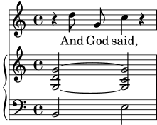
Cuando escriba una sección \score o cuando la esté
leyendo, hágalo despacio y con cuidado. Comience por el nivel
exterior y luego trabaje sobre cada uno de los niveles
interiores. También es de gran ayuda ser muy estricto con los
márgenes (asegúrese de que en su editor de texto cada elemento
del mismo nivel comienza en la misma posición horizontal).
Véase también
Referencia de la notación: Estructura de una partitura.
4.1.3 Anidado de expresiones musicales
No es esencial declarar todos los pentagramas al comienzo; se pueden crear temporalmente en cualquier momento. Esto es de especial utilidad para crear secciones de ossia (véase ossia). A continuación presentamos un ejemplo sencillo que muestra cómo introducir temporalmente un pentagrama nuevo mientras dura un fragmento de tres notas:
\new Staff { \relative { r4 g'8 g c4 c8 e | << { c4 c } \new Staff { d4 c } >> r2 | } }![[image of music]](4c/lily-d6e38fdb.png)
Advierta que el tamaño de la clave es igual al que se imprime en un cambio de clave (ligeramente menor que la clave al principio de una línea). Esto es normal para cualquier clave que se imprime en la mitad de una línea.
La sección ossia se puede colocar encima del pentagrama de la manera siguiente:
\new Staff = "main" { \relative { r4 g'8 g c4 c8 e | << { c4 c } \new Staff \with { alignAboveContext = "main" } { d4 c } >> r2 | } }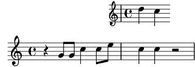
Este ejemplo utiliza \with, que se explica en todo detalle
más adelante. Es un medio de modificar el comportamiento
predeterminado de un solo pentagrama. Aquí, dice que el
pentagrama nuevo se debe colocar por encima del pentagrama
llamado “main” en vez de la posición predeterminada que sería
por debajo.
Véase también
Los fragmentos de ossia se escriben a menudo sin clave y sin indicación de compás, y generalmente en un tipo más pequeño. Esto necesitaría más instrucciones que aún no se han visto. See Tamaño de los objetos y Pentagramas de Ossia.
4.1.4 Estructura de un elemento de nota
Un elemento de nota en LilyPond consiste en una altura seguida de una duración, y opcionalmente seguida de uno o más post-eventos. Los post-eventos de LilyPond añaden cosas como articulaciones, digitaciones, números de cuerda, ligaduras de unión y de expresión y textos explicativos.
La altura se puede definir explícitamente usando el lenguaje de
entrada de LilyPond en su forma actual, como se describe en la
sección Nombres de
las notas en otros idiomas. La altura se puede omitir. En el
caso de que la altura se omita, la altura de la nota será la misma
que la de la nota anterior dentro del código de entrada, véase
Duraciones. Observe que ni r ni
s (silencios de separación, véase Invisible
rests) son alturas.
La duración consiste en un número y, opcionalmente, uno o más puntos ortográficos en el caso de las duraciones con puntillo. Si una duración no está definida explícitamente, la duración de la nota es la misma que la de la nota, acorde, silencio o silencio de separación anteriores, véase Duraciones.
Los post-eventos siguen a la nota a la que están adjuntos. Supongamos que queremos una nota Do corchea con una digitación de un 1, además de una articulación de tenuto, una ligadura de expresión que comienza en dicha nota, y una anotación textual. Esto puede obtenerse tal y como se muestra a continuación.
{ c'8-1--(~^\markup{"anotación textual"} c' d') }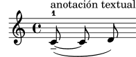
Véase también
Manual de aprendizaje: Ligaduras de unión y de expresión, Articulaciones y matices dinámicos, Añadir texto.
Referencia de la notación: Alturas, Duraciones, Expresiones.
4.1.5 Acerca de la no anidabilidad de llaves y ligaduras
En la escritura del archivo de entrada de LilyPond, hemos podido ver algunos tipos de paréntesis, llaves o ángulos de distintos tipos. Éstos obedecen a distintas reglas que al principio pueden resultar confusas. Antes de explicar estas reglas, demos un repaso a las distintas clases de corchetes, llaves y paréntesis.
Tipo de paréntesis Función { … }Encierra un fragmento secuencial de música < … >Encierra las notas de un acorde << … >>Encierra expresiones musicales simultáneas ( … )Marca el comienzo y el final de una ligadura de expresión \( … \)Marca el comienzo y el final de una ligadura de fraseo [ … ]Marca el comienzo y el final de un barrado manual
A las anteriores, debemos añadir otras construcciones que generan
líneas entre o a través de las notas: las ligaduras de unión
(marcadas con una tilde curva, ‘~’), los grupos especiales
que se escriben como \tuplet x/y { … }, y
las notas de adorno, que se escriben como \grace
{ … }.
Fuera de LilyPond, el uso convencional de los paréntesis y otros
corchetes requiere que los distintos tipos se encuentren anidados
correctamente, como en: << [ { ( … ) } ] >>, de
manera que los paréntesis que se cierran deben encontrarse en el
orden exactamente opuesto al de los paréntesis que se abren. Esto
es un requisito para los tres tipos de paréntesis que se
describen mediante la palabra ‘Encierra’ en la tabla anterior:
se deben anidar correctamente. Sin embargo, el resto de las
llaves y corchetes, que se encuentran descritos por la palabra
‘Marca’ en la misma tabla anterior, no tienen por qué
anidarse estrictamente con ninguno de los otros paréntesis. De
hecho, éstos no son paréntesis en el sentido de que encierran
algo: simplemente son marcadores que indican dónde empieza o
finaliza algo.
Así pues, por ejemplo, una ligadura de fraseo puede dar comienzo antes de una barra insertada manualmente, y acabar antes de que acabe la barra (algo que quizá no sea muy musical, pero es posible):
\relative { g'8\( a b[ c b\) a] g4 }![[image of music]](47/lily-ce5ce968.png)
En general, los distintos tipos de corchete, y los implicados en grupos especiales, ligaduras de unión y notas de adorno, se pueden mezclar con total libertad. Este ejemplo muestra una barra que se extiende hacia el interior de un grupo de valoración especial (línea 1), una ligadura de expresión que se prolonga hasta el interior de un grupo especial (línea 2), una barra y una ligadura de expresión que se prolongan hasta el interior de un grupo especial, una ligadura de unión que atraviesa dos grupos especiales, y una ligadura de fraseo que sale del interior de un grupo especial (líneas 3 y 4).
\relative { r16[ g' \tuplet 3/2 { r16 e'8] } g,16( a \tuplet 3/2 { b16 d) e } g,8[( a \tuplet 3/2 { b8 d) e~] } | \tuplet 5/4 { e32\( a, b d e } a4.\) }![[image of music]](d2/lily-fecc8d1a.png)
| [ << Conceptos fundamentales ] | [Top][Contents][Index] | [ Trucar la salida >> ] |
| [ < Acerca de la no anidabilidad de llaves y ligaduras ] | [ Up: Conceptos fundamentales ] | [ Oigo voces > ] |
4.2 Las voces contienen música
Igual que los cantantes, LilyPond necesita voces para cantar. En realidad, la música para cualquier instrumento de una partitura está siempre contenida dentro de una voz –el concepto de LilyPond más fundamental de todos–.
| 4.2.1 Oigo voces | ||
| 4.2.2 Voces explícitas | ||
| 4.2.3 Voces y música vocal |
| [ << Conceptos fundamentales ] | [Top][Contents][Index] | [ Trucar la salida >> ] |
| [ < Las voces contienen música ] | [ Up: Las voces contienen música ] | [ Voces explícitas > ] |
4.2.1 Oigo voces
De las capas más profundas de una partitura de LilyPond, las más bajas y más fundamentales reciben el nombre de Voice contexts («contextos de voz») o, abreviadamente, ‘Voices’ («voces»). Las voces reciben a veces el nombre de ‘layers’ («capas») en otros programas de edición de partituras.
De hecho, una capa o contexto de voz es la única que puede contener música. Si un contexto de voz no se declara explícitamente, se crea uno de forma automática, como vimos al comienzo de este capítulo. Ciertos instrumentos como el oboe solamente pueden tocar una nota cada vez. La música escrita para estos instrumentos solamente requiere una voz. Los instrumentos que pueden tocar más de una nota a la vez, como el piano, con frecuencia necesitarán varias voces para codificar las distintas notas y ritmos concurrentes que son capaces de tocar.
Una sola voz puede contener muchas notas dentro de un acorde, por supuesto; entonces ¿cuándo, exactamente, se necesitan varias voces? En primer lugar observe este ejemplo de cuatro acordes:
\relative { \key g \major <d' g>4 <d fis> <d a'> <d g> }![[image of music]](57/lily-34e301d7.png)
Esto se puede expresar utilizando sólo símbolos de acorde con
ángulos simples, < … >, y para este
propósito tan sólo se necesita una voz. Pero suponga que el Fa
sostenido fuese realmente una corchea seguida de un Sol
corchea, una nota de paso que conduce al La. Ahora tenemos
dos notas que empiezan en el mismo momento pero tienen distintas
duraciones: la negra Re, y la corchea Fa
sostenido. ¿Cómo se codifica esto? No se pueden escribir como un
acorde porque todas las notas de un acorde deben tener la misma
duración. Y no se pueden escribir como dos notas en secuencia
porque tienen que empezar en el mismo momento. Aquí es donde se
necesitan dos voces.
Veamos cómo se hace esto dentro de la sintaxis de entrada de LilyPond.
La forma más fácil de introducir fragmentos con más de una voz en
un solo pentagrama es escribir cada voz como una secuencia (con
{ … }), y combinarlas simultáneamente con
ángulos dobles, << … >>. Los fragmentos también se
deben separar mediante una doble barra invertida, \\, para
situarlos en voces separadas. Sin esto, las notas irían a una
sola voz, lo que normalmente produce errores. Esta técnica se
adapta especialmente bien a piezas de música que son mayormente
homofónicas pero ocasionalmente tienen cortas secciones de
polifonía.
He aquí cómo dividimos los acordes anteriores en dos voces y añadimos la nota de paso y la ligadura:
\relative { \key g \major % Voice = "1" Voice = "2" << { g'4 fis8( g) a4 g } \\ { d4 d d d } >> }![[image of music]](e1/lily-48e2a0cf.png)
Observe cómo las plicas de la segunda voz ahora se dirigen hacia abajo.
A continuación veamos otro ejemplo sencillo:
\relative { \key d \minor % Voice = "1" Voice = "2" << { r4 g' g4. a8 } \\ { d,2 d4 g } >> | << { bes4 bes c bes } \\ { g4 g g8( a) g4 } >> | << { a2. r4 } \\ { fis2. r4 } >> | }![[image of music]](e1/lily-135bdbaa.png)
No es necesario usar una construcción << \\ >> distinta
para cada compás. Para música que tenga unas pocas notas en cada
compás, esta disposición podría facilitar la legibilidad del
código, pero si hay muchas notas en cada compás podría ser mejor
dividirlo en dos voces separadas, de la siguiente manera:
<< \key d \minor \relative { % Voice = "1" r4 g' g4. a8 | bes4 bes c bes | a2. r4 | } \\ \relative { % Voice = "2" d'2 d4 g | g4 g g8( a) g4 | fis2. r4 | } >>![[image of music]](dc/lily-7f2b266b.png)
Este ejemplo tiene sólo dos voces, pero la misma construcción se puede usar para codificar tres o más voces mediante la adición de más separadores de barra invertida.
Los contextos Voice creados implícitamente mediante
<< \\ >> llevan los nombres de "1", "2",
etc. Los primeros contextos establecen las voces externas,
la voz aguda del contexto "1" y la voz grave del contexto
"2". Las voces interiores van en los contextos "3"
y "4". En cada uno de estos contextos, la dirección
vertical de las ligaduras, plicas, matices dinámicos, etc., se
ajusta de forma correcta.
\new Staff \relative { % Main voice c'16 d e f % Voice = "1" Voice = "2" Voice = "3" << { g4 f e } \\ { r8 e4 d c8~ } >> | << { d2 e } \\ { c8 b16 a b8 g~ 2 } \\ { s4 b c2 } >> | }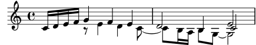
Observe el uso de s4 para insertar un separador invisible,
retrasando así el comienzo (visible) de la voz "3".
Si prefiere introducir las voces en un orden distinto, como de
arriba a abajo, puede especificar los números de voz respectivos
delante de una construcción << … >> usando la
instrucción \voices command, como por ejemplo:
\new Staff \relative { % Main voice c'16 d e f % Voice = "1" Voice = "2" << { g4 f e } \\ { r8 e4 d c8~ } >> | \voices 1,3,2 % Voice = "1" Voice = "3" Voice = "2" << { d2 e } \\ { s4 b c2 } \\ { c8 b16 a b8 g~ 2 } >> | }![[image of music]](36/lily-8e1e0d07.png)
Todas estas voces están separadas de la voz principal que contiene
las notas justo por fuera de la construcción << … >>.
Le llamaremos a esto la construcción simultánea. Las
ligaduras (de prolongación y de expresión) solamente pueden
conectar notas que estén dentro de la misma voz, luego las
ligaduras no pueden entrar o salir de una construcción simultánea.
A la inversa, las voces paralelas de construcciones simultáneas
distintas sobre el mismo pentagrama, son la misma voz. Otras
propiedades relativas a las voces también conllevan construcciones
simultáneas. A continuación vemos el mismo ejemplo, con colores y
cabezas distintos para cada voz. Observe que los cambios en una
voz no afectan a otras voces, pero persisten más tarde dentro de
la misma voz. Observe también que las notas ligadas se pueden
dividir entre las mismas voces de dos construcciones, como se
indica aquí en la voz de triángulos azules.
\new Staff \relative { % Main voice c'16 d e f << % Bar 1 { \voiceOneStyle g4 f e } \\ { \voiceTwoStyle r8 e4 d c8~ } >> | << % Bar 2 % Voice 1 continues { d2 e } \\ % Voice 2 continues { c8 b16 a b8 g~ 2 } \\ { \voiceThreeStyle s4 b c2 } >> | }![[image of music]](be/lily-944130be.png)
Las instrucciones \voiceXXXStyle están pensadas
principalmente para usarlas en documentos educativos como este
mismo. Modifican el color de la cabeza, la plica y las barras, y
el estilo de la cabeza, de forma que las voces se puedan
distinguir fácilmente. La voz uno está establecida a rombos
rojos, la voz dos a triángulos azules, la voz tres a círculos
verdes con aspas, y la voz cuatro (que no se utiliza aquí) a
aspas color magenta. \voiceNeutralStyle (que tampoco se
usa aquí) devuelve todo al estilo predeterminado. Veremos más
adelante cómo el usuario puede crear instrucciones como éstas.
See Visibilidad y color de los objetos y Uso de variables para los ajustes de disposición.
La polifonía no cambia la relación de las notas dentro de un
bloque \relative. La altura de cada nota aún se calcula
con relación a la nota que le precede inmediatamente, o a la
primera nota del acorde precedente. Así, en
\relative { notaA << <notaB notaC> \\ notaD >> notaE }
-
notaBes relativa anotaA; -
notaCes relativa anotaB, no anotaA;
-
notaDes relativa anotaB, no anotaAni anotaC; -
notaEes relativa anotaD, no anotaA.
Una forma alternativa, que podría ser más clara si las notas en las
voces están muy separadas, es colocar una instrucción \relative
al principio de cada voz:
\relative { notaA … }
<<
\relative { <notaB notaC> … }
\\
\relative { notaD … }
>>
\relative { notaE … }
Finalmente, analicemos las voces en una pieza de música más compleja. He aquí las notas de los dos primeros compases del segundo de los Dos Nocturnos de Chopin, Op. 32. Este ejemplo se utilizará en fases posteriores dentro del presente capítulo y el siguiente, para ilustrar varias técnicas para producir notación, y por tanto le pedimos que ignore por ahora cualquier cosa en el código subyacente que le parezca misterioso y tan sólo se concentre en la música y las voces (todas las complicaciones se explicarán en secciones posteriores).
![[image of music]](36/lily-3258c92c.png)
Con frecuencia, la dirección de las plicas se utiliza para indicar la continuidad de dos líneas melódicas simultáneas. Aquí, todas las plicas de las notas agudas se dirigen hacia arriba y las de las notas graves hacia abajo. Ésta es la primera indicación de que se requiere más de una voz.
Pero la necesidad real de varias voces aflora cuando hay notas que comienzan en el mismo tiempo pero tienen distintas duraciones. Observe las notas que comienzan en la tercera parte del primer compás. El La bemol es una negra con puntillo, el Fa es una negra y el Re bemol es una blanca. Estas notas no se pueden escribir como un acorde porque todas las notas de un acorde deben tener la misma duración. Tampoco se pueden escribir como notas secuenciales, pues deben comenzar al mismo tiempo. Esta sección del compás requiere tres voces, y la práctica común sería escribir todo el compás como tres voces como se muestra abajo, donde hemos usado distintas cabezas y colores para las tres voces. Una vez más, el código que subyace a este ejemplo se explicará más tarde, así pues ignore todo lo que no entienda.
![[image of music]](12/lily-af4127c7.png)
Vamos a intentar codificar esta música partiendo de cero. Como
veremos, esto se topa con ciertas dificultades. Comenzamos tal y
como hemos aprendido, usando la construcción << \\ >> para
introducir la música del primer compás en tres voces:
\new Staff \relative { \key aes \major << { c''2 aes4. bes8 } \\ { <ees, c>2 des } \\ { aes'2 f4 fes } >> | <c ees aes c>1 | }![[image of music]](f1/lily-ea16ef4b.png)
Las direcciones de las plicas se asignan automáticamente de forma
que las voces de numeración impar reciben las plicas hacia arriba
y las de numeración par hacia abajo. Las plicas de las voces 1
y 2 están correctas, pero las plicas de la voz 3 debería
ir hacia abajo en este fragmento en particular. Puede hacerse
simplemente añadiendo otro par de barras \\, pero en lugar
de eso usamosla instrucción \voices (que también nos
permitiría introducir las voces en un orden distinto, si
quisiéramos):
\new Staff \relative { \key aes \major \voices 1,2,4 % Omit voice three << % Voice one { c''2 aes4. bes8 } \\ % Voice two { <ees, c>2 des } \\ % Voice four { aes'2 f4 fes } >> | <c ees aes c>1 | }![[image of music]](90/lily-c62af17f.png)
Vemos que esto arregla la dirección de la plica, pero la
colocación horizontal de las notas no es la deseada. LilyPond
desplaza las notas interiores cuando ellas o sus plicas de otro
modo colisionarían con las voces exteriores, pero esto no siempre
es lo más adecuado para música de piano. En otras situaciones,
los desplazamientos que LilyPond aplica pueden no eliminar las
colisiones. LilyPond aporta varias formas de ajustar la
colocación horizontal de las notas. Aún no estamos preparados
para ver cómo se corrige esto, por lo que dejaremos el problema
para una sección posterior (véase la propiedad force-hshift
en Arreglar notación con superposiciones).
Nota: No se pueden crear letras ni objetos de extensión (como ligaduras, reguladores, etc.) ‘entre’ voces distintas.
Véase también
Referencia de la notación: Varias voces.
| [ << Conceptos fundamentales ] | [Top][Contents][Index] | [ Trucar la salida >> ] |
| [ < Oigo voces ] | [ Up: Las voces contienen música ] | [ Voces y música vocal > ] |
4.2.2 Voces explícitas
Los contextos de voz también se pueden crear manualmente dentro de
un bloque << >> para crear música polifónica, utilizando
\voiceOne hasta \voiceFour para indicar las
direcciones requeridas de plicas, ligaduras, etc. En partituras
más largas, este método es más claro porque permite que las voces
estén separadas y reciban nombres más descriptivos.
Concretamente, la construcción << \\ >> que usamos en la
sección previa:
\new Staff {
\relative {
<< { e'4 f g a } \\ { c,4 d e f } >>
}
}
equivale a
\new Staff <<
\new Voice = "1" { \voiceOne \relative { e'4 f g a } }
\new Voice = "2" { \voiceTwo \relative { c'4 d e f } }
>>
Los dos ejemplos anteriores producen:
![[image of music]](50/lily-4444eb23.png)
Las instrucciones \voiceXXX establecen la dirección
de las plicas, ligaduras de expresión, ligaduras de prolongación,
articulaciones, anotaciones de texto, puntillos y digitaciones.
\voiceOne y \voiceThree hacen que estos objetos
apunten hacia arriba, mientras que \voiceTwo y
\voiceFour los hacen apuntar hacia abajo. Estas
instrucciones también producen un desplazamiento horizontal para
cada voz cuando es necesario para evitar choques entre las
cabezas. La instrucción \oneVoice devuelve los ajustes de
nuevo a los valores normales para una sola voz.
Veamos en algunos ejemplos sencillos exactamente qué efecto
tienen \oneVoice, \voiceOne y voiceTwo sobre
el marcado, las ligaduras de unión y de expresión y las
indicaciones de dinámica:
\relative { % Default behavior or behavior after \oneVoice c'4 d8~ 8 e4( f | g4 a) b-> c | }![[image of music]](30/lily-60a29b9e.png)
\relative { \voiceOne c'4 d8~ 8 e4( f | g4 a) b-> c | \oneVoice c,4 d8~ 8 e4( f | g4 a) b-> c | }![[image of music]](5e/lily-bb970cd8.png)
\relative { \voiceTwo c'4 d8~ 8 e4( f | g4 a) b-> c | \oneVoice c,4 d8~ 8 e4( f | g4 a) b-> c | }![[image of music]](a2/lily-2897a3fa.png)
A continuación veremos cuatro formas distintas de componer la notación del mismo pasaje polifónico, cada una de las cuales tiene sus ventajas según la circunstancia, utilizando el ejemplo de la sección anterior.
Una expresión que aparece directamente dentro de << >>
pertenece a la voz principal (pero, observe, no dentro de
una construcción << \\ >>). Esto es útil cuando aparecen
voces nuevas mientras la voz principal está sonando. A
continuación podemos ver una realización mejorada del ejemplo de
la sección anterior. Las notas rojas en forma de rombo muestran
que la melodía principal está ahora dentro de un contexto de una
sola voz, haciendo que se pueda trazar una ligadura por encima de
ellas.
\new Staff \relative { \voiceOneStyle % This section is homophonic c'16^( d e f % Start simultaneous section of three voices << % Continue the main voice in parallel { g4 f e | d2 e) | } % Initiate second voice \new Voice { % Set stems, etc., down \voiceTwo r8 e4 d c8~ | 8 b16 a b8 g~ 2 | } % Initiate third voice \new Voice { % Set stems, etc, up \voiceThree s2. | s4 b c2 | } >> }![[image of music]](1b/lily-fc1c2c60.png)
La instrucción \voices se puede usar también para continuar
una voz principal dentro de la construcción de voces simultáneas:
\new Staff \relative { \new Voice = "main" { \voiceOneStyle % This section is homophonic c'16^( d e f % Start simultaneous section of three voices \voices "main",2,3 << % Continue the main voice in parallel { g4 f e | d2 e) | } % Initiate second voice \\ % Set stems, etc., down { r8 e4 d c8~ | 8 b16 a b8 g~ 2 | } \\ % Initiate third voice % Set stems, etc, up { s2. | s4 b c2 | } >> } }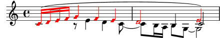
Son posibles construcciones polifónicas anidadas más profundamente, y si una voz aparece sólo brevemente podría haber una forma más natural de tipografiar la música.
\new Staff \relative { c'16^( d e f << { g4 f e | d2 e) | } \new Voice { \voiceTwo r8 e4 d c8~ | << { c8 b16 a b8 g~ 2 | } \new Voice { \voiceThree s4 b c2 | } >> } >> }![[image of music]](fe/lily-e6a4da51.png)
Este método de anidar voces nuevas brevemente es útil cuando sólo hay secciones polifónicas pequeñas, pero cuando todo el pentagrama es muy polifónico podría ser más claro usar varias voces todo el tiempo, usando silencios de separación para pasar por encima de las secciones en que una voz está en silencio, como aquí:
\new Staff \relative << % Initiate first voice \new Voice { \voiceOne c'16^( d e f g4 f e | d2 e) | } % Initiate second voice \new Voice { % Set stems, etc, down \voiceTwo s4 r8 e4 d c8~ | 8 b16 a b8 g~ 2 | } % Initiate third voice \new Voice { % Set stems, etc, up \voiceThree s1 | s4 b c2 | } >>![[image of music]](5f/lily-30c46ee9.png)
Columnas de notas
Las notas cercanas de un acorde, o las notas que se producen al mismo tiempo en distintas voces, se disponen en dos (y ocasionalmente más) columnas para evitar el solapamiento de las cabezas. Reciben el nombre de columnas de notas. Hay columnas distintas para cada voz, y el desplazamiento especificado en curso dependiente de la voz se aplica a la columna de la nota si en caso contrario se produjese una colisión. Esto se puede ver en el ejemplo anterior. En el compás 2 el Do en la voz dos está desplazado a la derecha respecto del Re de la voz uno, y en el último acorde el Do de la voz tres también está desplazado a la derecha respecto de las otras notas.
Las instrucciones \shiftOn, \shiftOnn,
\shiftOnnn y \shiftOff especifican el grado en que
se deben desplazar las notas y acordes de la voz si en caso
contrario ocurriese una colisión. De forma predeterminada, las
voces exteriores (normalmente las voces uno y dos) llevan
especificado \shiftOff, mientras que las voces interiores
(tres y cuatro) tienen \shiftOn especificado. Cuando se
aplica un desplazamiento, las voces uno y tres se desplazan hacia
la derecha y las voces dos y cuatro se desplazan hacia la
izquierda.
\shiftOnn y \shiftOnnn definen niveles adicionales
de desplazamiento que se pueden especificar temporalmente para
resolver colisiones en situaciones complejas (see Ejemplos reales de música).
Una columna de notas puede contener sólo una nota (o acorde) de
una voz con las plicas hacia arriba y una not (o acorde) de una
voz con las plicas hacia abajo. Si las notas de dos voces que
tienen las plicas en la misma dirección se sitúan en la misma
posición y las dos voces no tienen ningún desplazamiento o llevan
especificado el mismo desplazamiento, se producirá el mensaje de
error “Esta voz requiere un ajuste de \voiceXx o
\shiftXx”.
Véase también
Manual de aprendizaje: Mover objetos.
Referencia de la notación: Varias voces.
| [ << Conceptos fundamentales ] | [Top][Contents][Index] | [ Trucar la salida >> ] |
| [ < Voces explícitas ] | [ Up: Las voces contienen música ] | [ Contextos y grabadores > ] |
4.2.3 Voces y música vocal
La música vocal presenta una dificultad especial: tenemos que combinar dos expresiones, a saber, las notas y la letra.
Ya ha visto la instrucción \addlyrics, que maneja bien
partituras sencillas. Sin embargo esta técnica es algo limitada.
Para música de mayor complejidad, tenemos que introducir la letra
en un contexto Lyrics utilizando \new Lyrics y
enlazar explícitamente la letra y las notas mediante
\lyricsto, usando el nombre asignado a la voz.
<< \new Voice = "one" { \relative { \autoBeamOff \time 2/4 c''4 b8. a16 | g4. f8 | e4 d | c2 | } } \new Lyrics \lyricsto "one" { No more let | sins and | sor -- rows | grow. | } >>![[image of music]](f5/lily-63db5363.png)
Observe que la letra se debe enlazar a un contexto de
Voice, no a un contexto de Staff. Este es
un caso en que es necesario crear contextos de Staff y de
Voice explícitamente.
El barrado automático que LilyPond usa de forma predeterminada
funciona bien para la música instrumental, pero no tan bien para
música con letra, donde o bien el barrado no se necesita en
absoluto, o bien se utiliza para indicar los melismas de la
letra. En el ejemplo anterior hemos utilizado la instrucción
\autoBeamOff para desactivar el barrado automático.
Ahora vamos a reutilizar el ejemplo anterior de «Judas Macabeo»
para ilustrar esta técnica más flexible. Primero la
reescribiremos para que use variables, de manera que la música y
la letra se puedan separar de la estructura de pentagramas.
También introduciremos una llave de grupo de ChoirStaff. La
letra en sí se debe introducir con \lyricmode para estar
seguros de que se interpreta como letra y no como música.
global = { \key f \major \time 6/8 \partial 8 } SopOneMusic = \relative { c''8 | c8([ bes)] a a([ g)] f | f'4. b, | c4.~ 4 } SopOneLyrics = \lyricmode { Let | flee -- cy flocks the | hills a -- dorn, __ } SopTwoMusic = \relative { r8 | r4. r4 c'8 | a'8([ g)] f f([ e)] d | e8([ d)] c bes' } SopTwoLyrics = \lyricmode { Let | flee -- cy flocks the | hills a -- dorn, } \score { \new ChoirStaff << \new Staff << \new Voice = "SopOne" { \global \SopOneMusic } \new Lyrics \lyricsto "SopOne" { \SopOneLyrics } >> \new Staff << \new Voice = "SopTwo" { \global \SopTwoMusic } \new Lyrics \lyricsto "SopTwo" { \SopTwoLyrics } >> >> }![[image of music]](56/lily-c521cf0d.png)
Ésta es la estructura básica de todas las partituras vocales. Se pueden añadir más pentagramas según se necesite, se pueden añadir más voces a los pentagramas y más estrofas a la letra, y las variables que contienen la música se pueden colocar fácilmente en archivos separados cuando se hagan demasiado largos.
A continuación podemos ver un ejemplo final de la primera línea de un himno con cuatro estrofas, para coro SATB. En este caso la letra de las cuatro partes es la misma. Observe cómo utilizamos variables para separar la notación musical de la estructura de pentagramas. Observe también cómo se utiliza una variable, para la que hemos elegido el nombre ‘keyTime’ («tonalidad y compás»), para que contenga varias instrucciones que se usarán dentro de los dos pentagramas. En otros ejemplos se le suele dar el nombre de ‘global’.
keyTime = { \key c \major \time 4/4 \partial 4 } SopMusic = \relative { c'4 | e4. e8 g4 g | a4 a g } AltoMusic = \relative { c'4 | c4. c8 e4 e | f4 f e } TenorMusic = \relative { e4 | g4. g8 c4. b8 | a8 b c d e4 } BassMusic = \relative { c4 | c4. c8 c4 c | f8 g a b c4 } VerseOne = \lyricmode { E -- | ter -- nal fa -- ther, | strong to save, } VerseTwo = \lyricmode { O | Christ, whose voice the | wa -- ters heard, } VerseThree = \lyricmode { O | Ho -- ly Spi -- rit, | who didst brood } VerseFour = \lyricmode { O | Tri -- ni -- ty of | love and pow'r } \score { \new ChoirStaff << \new Staff << \clef "treble" \new Voice = "Sop" { \voiceOne \keyTime \SopMusic } \new Voice = "Alto" { \voiceTwo \AltoMusic } \new Lyrics \lyricsto "Sop" { \VerseOne } \new Lyrics \lyricsto "Sop" { \VerseTwo } \new Lyrics \lyricsto "Sop" { \VerseThree } \new Lyrics \lyricsto "Sop" { \VerseFour } >> \new Staff << \clef "bass" \new Voice = "Tenor" { \voiceOne \keyTime \TenorMusic } \new Voice = "Bass" { \voiceTwo \BassMusic } >> >> }![[image of music]](ae/lily-f3526534.png)
Véase también
Referencia de la notación: Música vocal.
| [ << Conceptos fundamentales ] | [Top][Contents][Index] | [ Trucar la salida >> ] |
| [ < Voces y música vocal ] | [ Up: Conceptos fundamentales ] | [ Explicación de los contextos > ] |
4.3 Contextos y grabadores
Los contextos y grabadores se han mencionado de manera informal en secciones anteriores; ahora tan sólo vamos a ver estos conceptos con más detalle, pues son importantes en el ajuste fino de la salida de LilyPond.
| 4.3.1 Explicación de los contextos | ||
| 4.3.2 Crear contextos | ||
| 4.3.3 Explicación de los grabadores | ||
| 4.3.4 Modificar las propiedades de los contextos | ||
| 4.3.5 Añadir y eliminar grabadores |
| [ << Conceptos fundamentales ] | [Top][Contents][Index] | [ Trucar la salida >> ] |
| [ < Contextos y grabadores ] | [ Up: Contextos y grabadores ] | [ Crear contextos > ] |
4.3.1 Explicación de los contextos
Cuando se imprime la música, se tienen que añadir a la salida una gran cantidad de elementos notacionales que no aparecen explícitamente en el archivo de entrada. Por ejemplo, compare la entrada y la salida del siguiente ejemplo:
\relative { cis''4 cis2. | a4 a2. | }![[image of music]](3e/lily-1101a13a.png)
La entrada es bastante escueta, pero en la salida se han añadido las líneas divisorias, las alteraciones, la clave y la armadura de la tonalidad. Cuando LilyPond interpreta la entrada, la información musical se analiza de izquierda a derecha de igual forma que un intérprete lee la partitura. Mientras se lee el código de entrada, el programa recuerda dónde están los límites de los compases, y qué alturas requieren alteraciones accidentales explícitas. Esta información se debe conservar a varios niveles. Por ejemplo, una alteración accidental afecta solamente a un pentagrama, mientras que una línea divisoria debe estar sincronizada a lo largo de todo el sistema.
Dentro de LilyPond, estas reglas y pequeñas porciones de
información se agrupan en contexts. Ya hemos visto el
contexto de voz, Voice. Otros ejemplos de contextos son
Staff (Pauta o pentagrama) y Score (Partitura). Los
contextos son jerárquicos, de forma que reflejan la naturaleza
jerárquica de una partitura musical. Por ejemplo, un contexto de
Staff contener muchos contextos de Voice, y un
contexto de Score puede contener muchos contextos de
Staff.

Cada contexto asume la responsabilidad de imponer algunas reglas
de notación, creando ciertos objetos de notación y manteniendo
las propiedades asociadas. Por ejemplo, el contexto Voice
puede introducir una alteración accidental y entonces el contexto
Staff mantiene la regla de mostrar o suprimir la
alteración para el resto del compás.
Otro ejemplo lo constituye el hecho de que la sincronización de
las líneas divisorias se gestiona dentro del contexto de la
partitura, Score, de forma predeterminada. Sin embargo,
en algunas músicas posiblemente no queramos que las líneas
divisorias estén sincronizadas (pensemos en una partitura
polimétrica en compases de 4/4 y de 3/4). En tales casos,
debemos modificar los ajustes por omisión de los contextos
Score y Staff.
Para partituras muy sencillas, los contextos se crean implícitamente y no debemos preocuparnos por ellos. Para piezas mayores, como por ejemplo cualquiera que tenga más de un pentagrama, los contextos se deben crear explícitamente para asegurarnos de que tendremos la cantidad exacta de pentagramas que necesitamos, y que están en el orden correcto. Para tipografiar piezas con notación especializada, es frecuente la modificación de contextos existentes o incluso definir unos completamente nuevos.
Además de los contextos Score, Staff y Voice,
hay contextos que se sitúan entre los niveles de partitura y de
pentagrama para controlar los grupos de pentagramas, como los
contextos PianoStaff y ChoirStaff. También existen
contextos alternativos de pentagrama y de voz, y contextos para la
letra, la percusión, diagramas de trastes, bajo cifrado, etc.
Los nombres de todos los tipos de contextos se componen de una o
más palabras que comienzan con mayúscula y que están unidas unas a
otras sin guión ni barra baja, por ejemplo:
GregorianTranscriptionStaff.
Véase también
Referencia de la notación: Explicación de los contextos.
| [ << Conceptos fundamentales ] | [Top][Contents][Index] | [ Trucar la salida >> ] |
| [ < Explicación de los contextos ] | [ Up: Contextos y grabadores ] | [ Explicación de los grabadores > ] |
4.3.2 Crear contextos
En un archivo de entrada, el bloque de partitura (que se presenta
precedido por la instrucción \score) contiene una sola
expresión musical; pero también puede contener una definición de
salida asociada: bien un bloque \layout o bien un bloque
\midi. El contexto Score se suele dejar que se cree
automáticamente cuando comienza la interpretación de esa expresión
musical.
Para partituras que solamente tienen una voz y un pentagrama,
podemos también dejar que los contextos Voice y
Staff se creen automáticamente, pero para partituras más
complejas es necesario crearlos a mano. La instrucción más simple
que hace esto es \new. Se antepone a una expresión
musical, por ejemplo
\new tipo expresión_musical
donde tipo es el nombre de un contexto (como Staff o
Voice). Esta instrucción crea un contexto nuevo, y
comienza a interpretar la expresión_musical que está dentro
de ese contexto.
En las secciones anteriores ha podido ver muchos ejemplos
prácticos que creaban nuevos contextos de Staff y de
Voice, pero para recordarle cómo se emplean estas
instrucciones en la práctica, he aquí un ejemplo anotado de música
real:
\score { % start of single compound music expression << % start of simultaneous staves section \time 2/4 \new Staff { % create RH staff \clef "treble" \key g \minor \new Voice { % create voice for RH notes \relative { % start of RH notes d''4 ees16 c8. | d4 ees16 c8. | } % end of RH notes } % end of RH voice } % end of RH staff \new Staff << % create LH staff; needs two simultaneous voices \clef "bass" \key g \minor \new Voice { % create LH voice one \voiceOne \relative { % start of LH voice one notes g8 <bes d> ees, <g c> | g8 <bes d> ees, <g c> | } % end of LH voice one notes } % end of LH voice one \new Voice { % create LH voice two \voiceTwo \relative { % start of LH voice two notes g4 ees | g4 ees | } % end of LH voice two notes } % end of LH voice two >> % end of LH staff >> % end of simultaneous staves section } % end of single compound music expression![[image of music]](30/lily-c86d0f5d.png)
(Observe cómo todas las instrucciones que abren un bloque con una
llave curva, {, o con ángulos dobles, <<, están
sangrados (tienen un margen adicional) con dos espacios
adicionales, y la llave de cierre correspondiente tiene un margen
exactamente igual. Aunque no es necesario, la observancia de
esta práctica reducirá considerablemente el número de errores de
‘paréntesis descompensados’, y se recomienda vivamente.
Permite apreciar de un solo vistazo la estructura de la música, y
cualquier paréntesis descompensado aparecerá con obviedad.
Observe también cómo el pentagrama de la MI se crea usando dobles
ángulos porque requiere dos voces, mientras que el pentagrama de
la MD se crea con una expresión musical única encerrada entre
llaves porque sólo requiere una voz.)
La instrucción \new también puede otorgar un nombre
identificativo al contexto para distinguirlo de otros contextos
del mismo tipo:
\new tipo = identificador expresión_musical
Observe la distinción entre el nombre del tipo de contexto,
Staff, Voice, etc., y el nombre identificativo de
una instancia en particular de ese tipo, que puede ser cualquier
secuencia de letras inventada por el usuario. En el nombre
identificativo también se pueden utilizar dígitos y espacios, pero
en este caso aquél debe ir entre comillas p.ej. \new Staff =
"MiPentagrama 1" expresión_musical. El nombre
identificativo se utiliza para referirnos más tarde a esa
instancia en particular de un contexto. Hemos visto esto en la
sección acerca de la letra, see Voces y música vocal.
Véase también
Referencia de la notación: Crear y referenciar contextos.
| [ << Conceptos fundamentales ] | [Top][Contents][Index] | [ Trucar la salida >> ] |
| [ < Crear contextos ] | [ Up: Contextos y grabadores ] | [ Modificar las propiedades de los contextos > ] |
4.3.3 Explicación de los grabadores
Todas y cada una de las marcas de la salida impresa de una partitura hecha con LilyPond está producida por un Engraver (grabador). Así, tenemos un grabador para imprimir pentagramas, otro para imprimir las cabezas de las notas, otro para las plicas, otro para las barras, etc, etc. ¡En total hay más de 140 grabadores! Afortunadamente, para la mayor parte de las partituras no es necesario conocer más que algunos, y para partituras sencillas no tenemos que saber nada de ninguno de ellos.
Los grabadores residen y operan dentro de contextos. Los
grabadores como el grabador de la indicación metronómica,
Metronome_mark_engraver, cuya acción y resultado se
aplican a la partitura como un todo, operan en el contexto del
nivel más alto: el contexto de partitura Score.
El grabador de la clave Clef_engraver y el de la armadura
Key_engraver se encuentran probablemente en todos los
contextos de pentagrama (Staff), pues los distintos
pentagramas podrían requerir diferentes claves y armaduras.
El grabador de las cabezas de nota Note_heads_engraver y el
de las plicas Stem_engraver viven en cada uno de los
contextos de voz Voice, el contexto de nivel más bajo de
todos.
Cada grabador procesa los objetos particulares asociados con su función, y mantiene las propiedades que están relacionadas con dicha función. Estas propiedades, como las que están asociadas con los contextos, se pueden modificar para cambiar el funcionamiento del grabador o el aspecto de esos elementos en la partitura impresa.
Todos los grabadores tienen nombres compuestos de varias palabras
que describen su función. Sólo está en mayúsculas la inicial de
la primera palabra, y el resto se le une mediante guiones bajos.
Así, el grabador Staff_symbol_engraver es responsable de
la creación de las líneas del pentagrama, y el
Clef_engraver determina y establece la altura o el punto
de referencia sobre el pentagrama dibujando un símbolo de clave.
A continuación presentamos algunos de los grabadores más comunes, junto a su función. Podrá comprobar que es fácil adivinar la función a partir del nombre (en inglés), y viceversa.
Grabador Función Accidental_engraverhace las alteraciones accidentales, de precaución y de sugerencia. Beam_engravergraba las barras Clef_engravergraba las claves Completion_heads_engraverdivide las notas que atraviesan una línea divisoria Dynamic_engravercrea reguladores e indicaciones dinámicas textuales Forbid_line_break_engraverevita los saltos de línea si queda algún elemento musical activo Key_engravercrea la armadura de la tonalidad Metronome_mark_engravergraba la indicación metronómica Note_heads_engravergraba la cabeza de las notas Rest_engravergraba los silencios Staff_symbol_engravergraba las cinco líneas (de forma predeterminada) del pentagrama Stem_engravercrea las plicas y los trémolos de una sola plica Time_signature_engravercrea las indicaciones de compás
Más adelante veremos cómo la salida de LilyPond se puede cambiar mediante la modificación del funcionamiento de los grabadores.
Véase también
Referencia de funcionamiento interno: Engravers and Performers.
| [ << Conceptos fundamentales ] | [Top][Contents][Index] | [ Trucar la salida >> ] |
| [ < Explicación de los grabadores ] | [ Up: Contextos y grabadores ] | [ Añadir y eliminar grabadores > ] |
4.3.4 Modificar las propiedades de los contextos
Los contextos se responsabilizan de mantener los valores de un
cierto número de properties de contexto. Muchas de ellas
se pueden cambiar para influir en la interpretación del código de
entrada y cambiar así la apariencia de la salida impresa. Se
modifican mediante la instrucción \set. Esta instrucción
toma la forma siguiente:
\set NombreDelContexto.nombreDeLaPropiedad = valor
Donde el NombreDelContexto es normalmente Score,
Staff o Voice. Se puede omitir, en cuyo caso se
supone que es Voice.
Los nombres de las propiedades de contexto consisten en palabras unidas sin ningún guión o barra baja, y donde todas las palabras excepto la primera empiezan en mayúscula. A continuación podemos ver algunos ejemplos de nombres de propiedades utilizadas con frecuencia. Hay muchas más que las que se muestran aquí.
Nombre de la propiedad Tipo Función Valor de ejemplo extraNaturalbooleano Si es verdadero, poner becuadros adicionales antes de las alteraciones ##t,##fcurrentBarNumberentero Ajustar el número del compás actual 50doubleSlursBooleano Si es verdadero, imprimir ligaduras de expresión por encima y por debajo de las notas ##t,##finstrumentNametexto Establecer el nombre del pentagrama, situado a la izquierda \markup { ... }fontSizereal Aumentar o disminuir el tamaño de la fuente tipográfica 2.4stanzatexto Establecer el texto que se imprime antes del comienzo de una estrofa "2"
En la tabla anterior, un valor Booleano es verdadero
(#t, True) o falso (#f, False), un entero es
un número entero (normalmente positivo), un número real es
un número decimal positivo o negativo, y el texto es una
cadena que se encierra entre comillas dobles. Observe el uso de
un cuadradillo adicionale, (‘#’), que debe usarse siempre que
siga una expresión de Scheme.
Antes de poder establecer cualquiera de estas propiedades, tenemos
que saber en qué contexto operan. A veces es algo obvio, pero en
ocasiones puede ser algo enrevesado. Si especificamos un contexto
equivocado, no se produce ningún mensaje de error, pero el
funcionamiento esperado no tendrá lugar. Por ejemplo, la
propiedad clefGlyph (dibujo de la clave) vive claramente
dentro del contexto de Staff, puesto que es el glifo de la
clave del pentagrama lo que se quiere cambiar. En este ejemplo,
la primera clave del pentagrama se imprime correctamente, pero no
la segunda (que imprime la clave predeterminada de Sol en lugar de
la de Fa), porque hemos omitido el nombre del contexto.
<< \new Staff \relative { \set Staff.clefGlyph = "clefs.C" c''2 c } \new Staff \relative { \set clefGlyph = "clefs.F" % Wrong! d'2 d } >>![[image of music]](cf/lily-f75ca8e3.png)
La segunda instrucción \set establece la propiedad
Voice.clefGlyph a clefs.F, pero como LilyPond no
cuenta con clefGlyph en el contexto Voice, ajustar
el valor en ese lugar no tiene ningún efecto. Esto no es un error,
y no se produce ningún mensaje.
La propiedad clefGlyph tendrá efecto solamente si se
establece dentro del contexto Staff, pero algunas
propiedades se pueden establecer en más de un contexto. Por
ejemplo, la propiedad extraNatural está establecida por
defecto al valor #t (verdadero) para todos los pentagramas.
Si se establece a #f (falso) en un contexto de Staff
determinado, se aplicará solamente a las alteraciones de ese
pentagrama. Si se establece a falso en el contexto de la
partitura, Score, se aplicará a todos los contextos de
pentagrama donde no hubiera sido establecido.
Así, esto desactivará los becuadros adicionales en un pentagrama:
<< \new Staff \relative { aeses'2 aes } \new Staff \relative { \set Staff.extraNatural = ##f aeses'2 aes } >>![[image of music]](f6/lily-024f0c7f.png)
y esto los desactivará en todos los pentagramas:
<< \new Staff \relative { aeses'2 aes } \new Staff \relative { \set Score.extraNatural = ##f aeses'2 aes } >>![[image of music]](60/lily-e6d76050.png)
Como un ejemplo más, si se establece clefTransposition
dentro del contexto de Score, se modifica la transposición
para los contextos de Staff actuales y futuros en donde no
esté establecido de otra manera.
El comando opuesto, \unset, elimina la propiedad del
contexto. Con frecuencia, otro comando \set puede lograr el
mismo resultado observable que un \unset. La principal
consideración es si el valor del contexto circundante debería
mostrarse. \set lo enmascara y \unset lo hace
visible.
Las instrucciones \set y \unset pueden aparecer en
cualquier lugar del archivo de entrada y tendrán efecto a partir
del tiempo en que se encuentran y hasta el final de la partitura o
hasta que la propiedad se establezca de nuevo mediante \set
o \unset. Probemos a modificar el tamaño de la fuente
tipográfica, lo que afecta al tamaño de las cabezas de las notas
(entre otras cosas) varias veces. El valor se establece de forma
relativa al tamaño de fuente predeterminado, no al valor en curso.
\relative { c'4 d % make note heads smaller \set fontSize = -4 e4 f | % make note heads larger \set fontSize = 2.5 g4 a % return to default size \unset fontSize b4 c | }![[image of music]](cd/lily-6ba6edd1.png)
Hemos podido ver cómo establecer los valores de diversos tipos de
propiedad diferentes. Observe que las expresiones de Scheme van
siempre precedidas de un símbolo de cuadradillo, ‘#’, de
forma que los valores booleanos ‘verdadero’ y ‘falso’ se
especifican respectivamente mediante ##t y ##f, con
dos cuadradillos. Una propiedad de texto se debe encerrar entre
comillas dobles, como antes, aunque veremos más adelante que el
texto realmente se puede especificar de una forma mucho más
general utilizando la potentísima instrucción markup.
Cambiar las propiedades de un contexto con \with
El valor de las propiedades de contexto se puede establecer en el
momento en que se crea el contexto. Cuando se crea un contexto
con una instrucción \new puede ir inmediatamente seguido de
un bloque \with { … } en el que se establecen los
valores iniciales de las propiedades. Por ejemplo, si quisiéramos
suprimir la impresión de becuadros adicionales, escribiríamos
\new Staff \with { extraNatural = ##f }
de la siguiente forma:
<< \new Staff { \relative { gisis'4 gis aeses aes } } \new Staff \with { extraNatural = ##f } { \relative { gisis'4 gis aeses aes } } >>![[image of music]](d3/lily-346125db.png)
\with puede ser una forma clara de establecer valores que
se quieren mantener fijos para toda la duración del contexto. Sin
embargo, no hace nada para forzarlo; las propiedades inicializadas
de esta manera aún pueden cambiarse dinámicamente utilizando
\set y \unset.
Cambiar las propiedades de un contexto con \context
Los valores de propiedad de los contextos se pueden establecer
para todos los contextos de un tipo determinado, como por
ejemplo todos los contextos de Staff, con una única
instrucción. El tipo de contexto se identifica mediante la
utilización del nombre de su tipo, como Staff, precedido de
una barra invertida: \Staff. El enunciado que establece el
valor de la propiedad es el mismo que el que está en un bloque
\with, presentado anteriormente. Se coloca en un bloque
\context dentro de un bloque \layout. Cada bloque
\context afecta a todos los contextos del tipo especificado
a lo largo del bloque \score o \book en el que
aparece el bloque \layout. A continuación presentamos un
ejemplo que muestra el formato:
\score { \new Staff { \relative { cisis''4 e d cis } } \layout { \context { \Staff extraNatural = ##t } } }![[image of music]](e6/lily-ae4cbe6d.png)
Si se quiere aplicar la sobreescritura de propiedades a todos los pentagramas de la partitura:
\score { << \new Staff { \relative { gisis'4 gis aeses aes } } \new Staff { \relative { gisis'4 gis aeses aes } } >> \layout { \context { \Score extraNatural = ##f } } }![[image of music]](57/lily-605f506a.png)
Las propiedades de contexto establecidas de esta forma se pueden
sobreescribir para ejemplares concretos de contextos mediante
enunciados dentro de un bloque \with, y mediante
instrucciones \set intercaladas dentro de enunciados
musicales.
Véase también
Referencia de la notación: Cambiar los valores por omisión de los contextos, Set and unset.
Referencia de funcionamiento interno: Contexts, Tunable context properties.
| [ << Conceptos fundamentales ] | [Top][Contents][Index] | [ Trucar la salida >> ] |
| [ < Modificar las propiedades de los contextos ] | [ Up: Contextos y grabadores ] | [ Extender las plantillas > ] |
4.3.5 Añadir y eliminar grabadores
Hemos visto que los contextos contienen varios grabadores, cada uno de los cuales a su vez es responsable de la producción de una fracción particular del resultado impreso, como líneas divisorias, pentagramas, cabezas, plicas, etc. Si un grabador es eliminado de un contexto, ya no podrá producir su salida impresa. Es una forma algo radical de modificar la salida, pero a veces puede ser útil.
Cambiar un solo contexto
Para eliminar un grabador de un contexto único, usamos la
instrucción \with situada inmediatamente después de la
instrucción que crea el contexto, como en la sección anterior.
Como ilustración, repitamos un ejemplo extraído de la sección
anterior con las líneas del pentagrama eliminadas. Recuerde que
las líneas del pentagrama están dibujadas por el grabador
Staff_symbol_engraver.
\new Staff \with { \remove Staff_symbol_engraver } \relative { c'4 d \set fontSize = -4 % make note heads smaller e4 f | \set fontSize = 2.5 % make note heads larger g4 a \unset fontSize % return to default size b4 c | }![[image of music]](74/lily-0424b4a6.png)
Los grabadores también se pueden añadir a los contextos individuales La instrucción que lo hace es
\consists Nombre_del_grabador
situada dentro de un bloque \with. Ciertas partituras
vocales tienen una indicación de ámbito o tesitura situada al
principio del pentagrama para indicar el ámbito de notas en dicho
pentagrama, véase ambitus. El ambitus se produce por
parte del grabador Ambitus_engraver, que normalmente no
está incluido en ningún contexto. Si lo añadimos al contexto
Voice, calcula el rango a partir de esa única voz:
\new Staff << \new Voice \with { \consists Ambitus_engraver } { \relative { \voiceOne c''4 a b g } } \new Voice { \relative { \voiceTwo c'4 e d f } } >>![[image of music]](05/lily-688a95f2.png)
En cambio, si añadimos el grabador de ámbito al contexto de
Staff, calcula el rango de todas las notas en todas las
voces de ese pentagrama:
\new Staff \with { \consists Ambitus_engraver } << \new Voice { \relative { \voiceOne c''4 a b g } } \new Voice { \relative { \voiceTwo c'4 e d f } } >>![[image of music]](b7/lily-f15469a0.png)
Cambiar todos los contextos del mismo tipo
Los ejemplos anteriores muestran la manera de eliminar o añadir
grabadores a los contextos individuales. También es posible
eliminar o añadir grabadores a todos los contextos de un tipo
específico, situando las instrucciones en el contexto
correspondiente dentro de un bloque \layout. Por ejemplo,
si queremos mostrar los rangos de tesitura para todos los
pentagramas de una partitura de cuatro pautas, podemos escribir
\score { << \new Staff { \relative { c''4 a b g } } \new Staff { \relative { c'4 a b g } } \new Staff { \clef "G_8" \relative { c'4 a b g } } \new Staff { \clef "bass" \relative { c4 a b g } } >> \layout { \context { \Staff \consists Ambitus_engraver } } }![[image of music]](88/lily-bf8c0158.png)
Los valores predeterminados de las propiedades de los contextos
también se pueden establecer para todos los contextos de un tipo
en particular incluyendo la instrucción \set dentro de un
bloque \context de la misma forma.
Véase también
Referencia de la notación: Modificar los complementos (plug-ins) de contexto, Cambiar los valores por omisión de los contextos.
Advertencias y problemas conocidos
Los grabadores Stem_engraver y Beam_engraver (de
plica y de barra) adjuntan a la cabeza de las notas los objetos
que crean. Si se suprime el grabador de cabezas de nota
Note_heads_engraver, no se produce ninguna cabeza y por
tanto no se crean tampoco plicas ni barras.
| [ << Conceptos fundamentales ] | [Top][Contents][Index] | [ Trucar la salida >> ] |
| [ < Añadir y eliminar grabadores ] | [ Up: Conceptos fundamentales ] | [ Soprano y violoncello > ] |
4.4 Extender las plantillas
Ha leído el tutorial y ahora sabe escribir música. Pero ¿cómo puede poner los pentagramas que quiere? Las plantillas están muy bien, pero ¿qué ocurre si quiere algo que no está en una de ellas? Bien, puede encontrar montañas de plantillas (see Plantillas) que le pueden servir como punto de partida. Pero ¿y si quiere algo que no está contemplado aquí? Continúe leyendo.
| 4.4.1 Soprano y violoncello | ||
| 4.4.2 Partitura vocal a cuatro voces SATB | ||
| 4.4.3 Crear una partitura partiendo de cero | ||
| 4.4.4 Ahorrar tecleo mediante variables y funciones | ||
| 4.4.5 Partituras y particellas |
| [ << Conceptos fundamentales ] | [Top][Contents][Index] | [ Trucar la salida >> ] |
| [ < Extender las plantillas ] | [ Up: Extender las plantillas ] | [ Partitura vocal a cuatro voces SATB > ] |
4.4.1 Soprano y violoncello
Para empezar, tome la plantilla que le parezca más parecida a aquello que quiere conseguir. Digamos que quiere escribir algo para soprano y cello. En este caso comenzaríamos con la plantilla ‘Notas y letra’ (para la parte de soprano).
\version "2.26.0"
melodia = \relative {
\clef "treble"
\key c \major
\time 4/4
a4 b c d
}
texto = \lyricmode {
Aaa Bee Cee Dee
}
\score {
<<
\new Voice = "uno" {
\autoBeamOff
\melodia
}
\new Lyrics \lyricsto "uno" \texto
>>
\layout { }
\midi { }
}
Ahora queremos añadir una parte de violoncello. Veamos el ejemplo ‘Sólo notas’:
\version "2.26.0"
melodia = \relative {
\clef "treble"
\key c \major
\time 4/4
a4 b c d
}
\score {
\new Staff \melodia
\layout { }
\midi { }
}
No necesitamos dos instrucciones \version. Vamos a
necesitar la sección melodia. No queremos dos secciones
\score (si tuviésemos dos \scores, acabaríamos con
las dos particellas por separado. Queremos las dos juntas, como
un dúo. Dentro de la sección \score, no nos hacen falta
dos \layout ni dos \midi.
Si nos limitásemos a copiar y pegar la sección melodia,
acabaríamos con dos secciones melodia separadas, así que
vamos a cambiarles el nombre. Llamaremos musicaSoprano a
la sección de la soprano y musicaCello a la sección del
violoncello. Al mismo tiempo cambiaremos el nombre de
texto a letraSoprano. Recuerde cambiar el nombre a
las dos apariciones de todos estos nombres – tanto la definición
inicial (la parte melodia = \relative { … }) –
como el uso de ese nombre (en la sección \score).
También aprovecharemos para cambiar el pentagrama de la parte del cello (los violoncellos se escriben normalmente en clave de Fa). Asimismo, cambiaremos algunas notas del cello.
\version "2.26.0"
musicaSoprano = \relative {
\clef "treble"
\key c \major
\time 4/4
a4 b c d
}
letraSoprano = \lyricmode {
Aaa Bee Cee Dee
}
musicaCello = \relative {
\clef "bass"
\key c \major
\time 4/4
d4 g fis8 e d4
}
\score {
<<
\new Voice = "uno" {
\autoBeamOff
\musicaSoprano
}
\new Lyrics \lyricsto "uno" \letraSoprano
>>
\layout { }
\midi { }
}
Esto tiene una apariencia prometedora, pero la parte del cello no
sale en la partitura (no la hemos puesto en la sección
\score). Si queremos que la parte del cello aparezca
debajo de la de soprano, tenemos que añadir
\new Staff \musicaCello
justo debajo de todo lo de la soprano. También tenemos que poner
<< y >> antes y después de la música – lo que
indica a LilyPond que hay más de una cosa (en este caso,
Staff) sucediendo al mismo tiempo –. La \score se
parecerá ahora a esto:
\score {
<<
<<
\new Voice = "uno" {
\autoBeamOff
\sopranoMusic
}
\new Lyrics \lyricsto "uno" \letraSoprano
>>
\new Staff \musicaCello
>>
\layout { }
\midi { }
}
Lo anterior parece un poco enrevesado; los márgenes están descuadrados. Esto tiene fácil solución. Presentamos aquí la plantilla completa para soprano y cello.
sopranoMusic = \relative { \clef "treble" \key c \major \time 4/4 a4 b c d } sopranoLyrics = \lyricmode { Aaa Bee Cee Dee } celloMusic = \relative { \clef "bass" \key c \major \time 4/4 d4 g fis8 e d4 } \score { << << \new Voice = "one" { \autoBeamOff \sopranoMusic } \new Lyrics \lyricsto "one" \sopranoLyrics >> \new Staff \celloMusic >> \layout { } \midi { } }![[image of music]](c7/lily-35f0d5bf.png)
Véase también
Las plantillas de inicio se pueden encontrar en el apéndice ‘Plantillas’, véase Plantillas de pentagrama único.
| [ << Conceptos fundamentales ] | [Top][Contents][Index] | [ Trucar la salida >> ] |
| [ < Soprano y violoncello ] | [ Up: Extender las plantillas ] | [ Crear una partitura partiendo de cero > ] |
4.4.2 Partitura vocal a cuatro voces SATB
La mayor parte de las partituras vocales escritas para coro mixto a cuatro voces con acompañamiento orquestal, como el Elías de Mendelssohn o el Mesías de Haendel, tienen la música coral y la letra en cuatro pentagramas para S, A, T y B, respectivamente, con una reducción de piano del acompañamiento de orquesta, por debajo. He aquí un ejemplo del Mesías de Haendel:
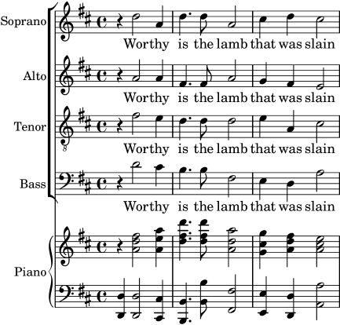
Nota: Esta disposición se puede conseguir muy fácilmente usando
la plantilla incorporada: satb.ly, véase Plantillas incorporadas. Pero para mayor facilidad de uso, esta plantilla
oculta deliberadamente la necesaria estructura de contexto,
proporcionándola automáticamente en vez de ello. Así pues, para
nuestro objetivo de aprendizaje, veamos cómo construir la
estructura partiendo de cero. Quizá necesite hacerlo cada vez que
la plantilla incorporada no cumpla sus necesidades completamente.
La plantilla (no incorporada: de copiar y editar) más parecida a esta disposición es Partitura vocal SATB y reducción para piano automática, pero necesitamos cambiar la disposición y añadir un acompañamiento de piano que no esté derivado automáticamente de las partes vocales. Las variables que contienen la música y la letra de las partes vocales es adecuada, pero tendremos que añadir variables para la reducción de piano.
El orden en que aparecen los contextos en el ChoirStaff de
la plantilla no se corresponde con el orden de la partitura vocal
que hemos mostrado más arriba. Tenemos que reordenarlas para que
haya cuatro pentagramas con la letra escrita directamente bajo las
notas de cada parte. Todas las voces deben ser \voiceOne,
que es la predeterminada, para que las instrucciones
\voiceXXX se puedan eliminar. También tenemos que ajustar
la clave (clave de sol octava baja) en las partes de tenor. Aún
no hemos encontrado la forma en que la letra se especifica en la
plantilla, así que tenemos que utilizar el método que nos resulta
familiar. También tenemos que escribir los nombres de cada
pentagrama.
Al hacerlo así obtenemos el ChoirStaff siguiente:
\new ChoirStaff <<
\new Staff = "sopranos"
\with { instrumentName = "Soprano" }
<<
\new Voice = "sopranos" {
\global
\musicaSoprano
}
>>
\new Lyrics \lyricsto "sopranos" {
\letraSoprano
}
\new Staff = "altos"
\with { instrumentName = "Alto" }
<<
\new Voice = "altos" {
\global
\musicaAlto
}
>>
\new Lyrics \lyricsto "altos" {
\letraAlto
}
\new Staff = "tenors"
\with { instrumentName = "Tenor" }
<<
\new Voice = "tenors" {
\global
\musicaTenor
}
>>
\new Lyrics \lyricsto "tenors" {
\letraTenor
}
\new Staff = "basses"
\with { instrumentName = "Bass" }
<<
\new Voice = "basses" {
\global
\musicaBajo
}
>>
\new Lyrics \lyricsto "bajos" {
\letraBajo
}
>> % fin del ChoirStaff
A continuación debemos trabajar sobre la parte de piano. Es fácil: tan sólo hay que sacar la parte de piano de la plantilla de ‘Piano solista’:
\new PianoStaff \with { instrumentName = "Piano " }
<<
\new Staff = "superior" \superior
\new Staff = "inferior" \inferior
>>
y escribir las definiciones de variable para superior e
inferior.
Los grupos ChoirStaff y PianoStaff se deben combinar utilizando
ángulos dobles, ya queremos apilarlos unos sobre otros:
<< % combinar los grupos ChoirStaff y PianoStaff uno sobre el otro
\new ChoirStaff <<
\new Staff = "sopranos" <<
\new Voice = "sopranos" {
\global
\musicaSoprano
}
>>
\new Lyrics \lyricsto "sopranos" {
\letraSoprano
}
\new Staff = "altos" <<
\new Voice = "altos" {
\global
\musicaAlto
}
>>
\new Lyrics \lyricsto "altos" {
\letraAlto
}
\new Staff = "tenores" <<
\clef "G_8" % clave de tenor
\new Voice = "tenores" {
\global
\musicaTenor
}
>>
\new Lyrics \lyricsto "tenores" {
\letraTenor
}
\new Staff = "bajos" <<
\clef "bass"
\new Voice = "bajos" {
\global
\musicaBajo
}
>>
\new Lyrics \lyricsto "bajos" {
\letraBajo
}
>> % fin del ChoirStaff
\new PianoStaff \with { instrumentName = "Piano" }
<<
\new Staff = "upper" \upper
\new Staff = "lower" \lower
>>
>>
Al combinar todo esto junto y escribir la música de los tres compases del ejemplo anterior, obtenemos:
global = { \key d \major \time 4/4 } sopranoMusic = \relative { \clef "treble" r4 d''2 a4 | d4. d8 a2 | cis4 d cis2 | } sopranoWords = \lyricmode { Wor -- thy | is the lamb | that was slain | } altoMusic = \relative { \clef "treble" r4 a'2 a4 | fis4. fis8 a2 | g4 fis fis2 | } altoWords = \sopranoWords tenorMusic = \relative { \clef "G_8" r4 fis'2 e4 | d4. d8 d2 | e4 a, cis2 | } tenorWords = \sopranoWords bassMusic = \relative { \clef "bass" r4 d'2 cis4 | b4. b8 fis2 | e4 d a'2 | } bassWords = \sopranoWords upper = \relative { \clef "treble" \global r4 <a' d fis>2 <a e' a>4 | <d fis d'>4. <d fis d'>8 <a d a'>2 | <g cis g'>4 <a d fis> <a cis e>2 | } lower = \relative { \clef "bass" \global <d, d'>4 <d d'>2 <cis cis'>4 | <b b'>4. <b' b'>8 <fis fis'>2 | <e e'>4 <d d'> <a' a'>2 | } \score { << % combine ChoirStaff and PianoStaff in parallel \new ChoirStaff << \new Staff = "sopranos" \with { instrumentName = "Soprano" } << \new Voice = "sopranos" { \global \sopranoMusic } >> \new Lyrics \lyricsto "sopranos" { \sopranoWords } \new Staff = "altos" \with { instrumentName = "Alto" } << \new Voice = "altos" { \global \altoMusic } >> \new Lyrics \lyricsto "altos" { \altoWords } \new Staff = "tenors" \with { instrumentName = "Tenor" } << \new Voice = "tenors" { \global \tenorMusic } >> \new Lyrics \lyricsto "tenors" { \tenorWords } \new Staff = "basses" \with { instrumentName = "Bass" } << \new Voice = "basses" { \global \bassMusic } >> \new Lyrics \lyricsto "basses" { \bassWords } >> % end ChoirStaff \new PianoStaff \with { instrumentName = "Piano " } << \new Staff = "upper" \upper \new Staff = "lower" \lower >> >> }![[image of music]](0c/lily-dd8300c5.png)
| [ << Conceptos fundamentales ] | [Top][Contents][Index] | [ Trucar la salida >> ] |
| [ < Partitura vocal a cuatro voces SATB ] | [ Up: Extender las plantillas ] | [ Ahorrar tecleo mediante variables y funciones > ] |
4.4.3 Crear una partitura partiendo de cero
Después de adquirir algo de soltura en la escritura del código de LilyPond, se dará cuenta de que es más fácil construir completamente una partitura partiendo de cero, que modificar una plantilla. También puede desarrollar su propio estilo de forma que se adapte al tipo de música que le apetezca. Veamos a continuación cómo confeccionar una partitura para un preludio de órgano, como ejemplo.
Comenzamos con una sección para el encabezamiento. Aquí es donde van el título, nombre del compositor, etc., después van las definiciones de las variables, y finalmente el bloque de partitura. Comencemos a verlas por encima y más tarde completaremos los detalles.
Utilizaremos los dos primeros compases del preludio de Bach basado en Jesu, meine Freude, que está escrito para órgano con dos manuales y pedal. Tiene estos dos compases de música al final de la sección. La parte del manual superior tiene dos voces, y el inferior y el pedal, una voz cada uno. Así pues, necesitamos cuatro definiciones para la música y una más para definir el compás y la tonalidad:
\version "2.26.0"
\header {
title = "Jesu, meine Freude"
composer = "J S Bach"
}
keyTime = { \key c \minor \time 4/4 }
MusicaManualUnoVozUno = { s1 }
MusicaManualUnoVozDos = { s1 }
MusicaManualDos = { s1 }
MusicaPedal = { s1 }
\score {
}
Por el momento hemos escrito tan sólo una nota espaciadora,
s1, en lugar de la música de verdad. La añadiremos más
adelante.
A continuación veamos qué va en el bloque de partitura.
Sencillamente, reflejaremos la estructura de pentagramas que
deseemos. La música de órgano se escribe por lo general en tres
pentagramas, uno para cada uno de los manuales y otro para el
pedal. Los pentagramas de los manuales se abarcan con una llave,
así que los incluiremos en un grupo PianoStaff. La primera parte
de manual tiene dos voces, y la segunda sólo una.
\new PianoStaff <<
\new Staff = "ManualUno" <<
\new Voice {
\MusicaManualUnoVozUno
}
\new Voice {
\MusicaManualUnoVozDos
}
>> % fin del contexto de Staff ManualUno
\new Staff = "ManualDos" <<
\new Voice {
\MusicaManualDos
}
>> % fin del contexto de Staff ManualDos
>> % fin del contexto de PianoStaff
Después, tenemos que añadir un pentagrama para el órgano de
pedal. Esto va por debajo del PianoStaff, pero debe ser
simultáneo con él, por lo que escribimos dobles ángulos rodeando
a los dos. Si esto se nos olvida, se producirá un error en el
archivo log de registro. ¡Es un error muy común que cometerá
antes o después! Intente copiar el ejemplo final que aparece al
final de la sección, borre los dobles ángulos y procese el
archivo para ver qué error produce.
<< % el grupo PianoStaff y el pentagrama de Pedal son simultáneos
\new PianoStaff <<
\new Staff = "ManualUno" <<
\new Voice {
\MusicaManualUnoVozUno
}
\new Voice {
\MusicaManualUnoVozDos
}
>> % fin del contexto de Staff ManualUno
\new Staff = "ManualDos" <<
\new Voice {
\MusicaManualDos
}
>> % fin del contexto de Staff ManualDos
>> % fin del contexto de PianoStaff
\new Staff = "OrganoPedal" <<
\new Voice {
\MusicaOrganoPedal
}
>>
>>
No es necesario utilizar la construcción simultánea <<
… >> para el pentagrama del manual dos y el pentagrama del
órgano de pedal, ya que contienen una única expresión, pero no
hace daño, y es una buena costumbre utilizar siempre dobles
ángulos después de \new Staff cuando hay varias voces. Lo
opuesto es cierto para los contextos Voice: normalmente
deben ir seguidos de llaves { … } en caso de que
tengamos música codificada como distintas variables que se deben
situar consecutivamente.
Añadamos esta estructura al bloque de partitura, y ajustemos el
sangrado de los márgenes. También escribimos las claves
correspondientes, nos aseguramos de que las plicas y ligaduras de
unión y de expresión en cada una de las voces del pentagrama
superior apuntan en la dirección adecuada con \voiceOne y
\voiceTwo y escribimos el compás y la tonalidad en cada uno
de los pentagramas usando nuestra variable previamente definida
\TimeKey.
\score {
<< % el grupo PianoStaff y el pentagrama de Pedal son simultáneos
\new PianoStaff <<
\new Staff = "ManualUno" <<
\keyTime % establecer compás y tonalidad
\clef "treble"
\new Voice {
\voiceOne
\MusicaManualUnoVozUno
}
\new Voice {
\voiceTwo
\MusicaManualUnoVozDos
}
>> % fin del contexto de Staff ManualUno
\new Staff = "ManualDos" <<
\keyTime
\clef "bass"
\new Voice {
\MusicaManualDos
}
>> % fin del contexto de Staff ManualDos
>> % fin del contexto de PianoStaff
\new Staff = "OrganoPedal" <<
\keyTime
\clef "bass"
\new Voice {
\MusicaOrganoPedal
}
>> % fin del pentagrama de OrganoPedal
>>
} % fin del contexto Score
La disposición anterior de los pentagramas de órgano es casi
perfecta; sin embargo, existe un ligero defecto que no es visible
cuando se observa un solo sistema: la distancia entre el
pentagrama de pedal y el de la mano izquierda debiera ser
aproximadamente la misma que la que existe entre los pentagramas
de las manos izquierda y derecha. Concretamente, la ampliabilidad
de los pentagramas dentro de un contexto PianoStaff es
limitada (de forma que la distancia entre los pentagramas de las
manos izquierda y derecha nunca crezcan excesivamente), y el
pentagrama de los pedales debería comportarse de una forma
similar.
El grado de ampliabilidad o separabilidad de los pentagramas se
puede controlar con la propiedad staff-staff-spacing del
‘objeto gráfico’ VerticalAxisGroup (los objetos gráficos
reciben por lo general el nombre de grobs en la
documentación de LilyPond); no se preocupe por el momento de los
detalles, pues esto se explica más tarde de forma exhaustiva. Los
más curiosos pueden echar un vistazo a Panorámica de la modificación de las
propiedades. En este caso, queremos modificar solamente la
sub-propiedad stretchability. Cualquier valor que no se
modifique, empleará el valor predeterminado. De nuevo, los
curiosos encontrarán los valores predeterminados para la propiedad
staff-staff-spacing en el archivo
scm/define-grobs.scm examinando la definición de la
propiedad default-staff-staff-spacing del grob
VerticalAxisGroup. El valor de stretchability que
se ve a continucación se toma de la definición del grob
StaffGrouper (en el archivo scm/define-grobs.scm) de
forma que los valores sean idénticos.
\score {
<< % el grupo PianoStaff y el pentagrama de Pedal son simultáneos
\new PianoStaff <<
\new Staff = "ManualUno" <<
\keyTime % establecer compás y tonalidad
\clef "treble"
\new Voice {
\voiceOne
\MusicaManualUnoVozUno
}
\new Voice {
\voiceTwo
\MusicaManualUnoVozDos
}
>> % % fin del contexto de Staff ManualUno
\new Staff = "ManualDos" \with {
\override VerticalAxisGroup
.staff-staff-spacing.stretchability = 5
} <<
\keyTime
\clef "bass"
\new Voice {
\MusicaManualDos
}
>> % fin del contexto de Staff ManualDos
>> % fin del contexto de PianoStaff
\new Staff = "OrganoPedal" <<
\keyTime
\clef "bass"
\new Voice {
\MusicaOrganoPedal
}
>> % fin del pentagrama de OrganoPedal
>>
} % fin del contexto Score
Con esto se completa la estructura. Toda música para órgano de tres pentagramas tendrá una estructura similar, aunque el número de voces puede variar. Todo lo que nos queda es añadir la música, y combinar todas las partes.
\header { title = "Jesu, meine Freude" composer = "J S Bach" } keyTime = { \key c \minor \time 4/4 } ManualOneVoiceOneMusic = \relative { g'4 g f ees | d2 c | } ManualOneVoiceTwoMusic = \relative { ees'16 d ees8~ 16 f ees d c8 d~ d c~ | 8 c4 b8 c8. g16 c b c d | } ManualTwoMusic = \relative { c'16 b c8~ 16 b c g a8 g~ 16 g aes ees | f16 ees f d g aes g f ees d ees8~ 16 f ees d | } PedalOrganMusic = \relative { r8 c16 d ees d ees8~ 16 a, b g c b c8 | r16 g ees f g f g8 c,2 | } \score { << % PianoStaff and Pedal Staff must be simultaneous \new PianoStaff << \new Staff = "ManualOne" << \keyTime % set key and time signature \clef "treble" \new Voice { \voiceOne \ManualOneVoiceOneMusic } \new Voice { \voiceTwo \ManualOneVoiceTwoMusic } >> % end ManualOne Staff context \new Staff = "ManualTwo" \with { \override VerticalAxisGroup .staff-staff-spacing.stretchability = 5 } << \keyTime \clef "bass" \new Voice { \ManualTwoMusic } >> % end ManualTwo Staff context >> % end PianoStaff context \new Staff = "PedalOrgan" << \keyTime \clef "bass" \new Voice { \PedalOrganMusic } >> % end PedalOrgan Staff context >> } % end Score context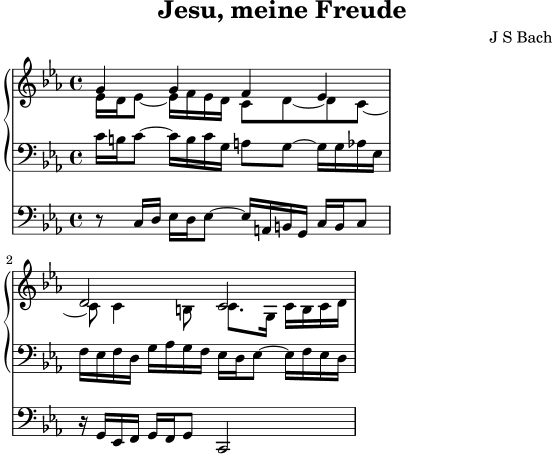
Véase también
Glosario musical: system.
| [ << Conceptos fundamentales ] | [Top][Contents][Index] | [ Trucar la salida >> ] |
| [ < Crear una partitura partiendo de cero ] | [ Up: Extender las plantillas ] | [ Partituras y particellas > ] |
4.4.4 Ahorrar tecleo mediante variables y funciones
Llegado a este punto, usted ha visto cosas de este tipo:
hornNotes = \relative { c''4 b dis c } \score { { \hornNotes } }![[image of music]](6a/lily-30bd54bc.png)
Incluso se dará cuenta de que esto puede ser útil en música minimalista:
fragmentA = \relative { a'4 a8. b16 } fragmentB = \relative { a'8. gis16 ees4 } violin = \new Staff { \fragmentA \fragmentA | \fragmentB \fragmentA | } \score { { \violin } }![[image of music]](d1/lily-ee3c8a35.png)
Sin embargo también puede usar estos identificadores (que también se conocen como variables, macros o instrucciones definidas por el usuario) para hacer trucos:
dolce = \markup { \italic \bold dolce } centerText = { \once \override TextScript.self-alignment-X = #CENTER } fthenp = _\markup { \dynamic f \italic \small { 2nd } \hspace #0.1 \dynamic p } violin = \relative { \repeat volta 2 { c''4._\dolce b8 a8 g a b | \centerText c4.^"hi there!" d8 e f g d | c4.\fthenp b8 c4 c-. | } } \score { { \violin } }![[image of music]](5d/lily-3f85f2c1.png)
Obviamente estos identificadores son útiles para ahorrar tecleo. Pero son dignos de tener en cuenta incluso si se van a utilizar una sola vez: reducen la complejidad. Examinemos el ejemplo anterior reescrito sin ningún identificador. Encontrará que es mucho más difícil de leer, sobre todo la última línea.
violin = \relative {
\repeat volta 2 {
c''4._\markup { \italic \bold dolce } b8 a8 g a b |
\once \override TextScript.self-alignment-X = #CENTER
c4.^"hi there!" d8 e f g d |
c4._\markup {
\dynamic f \italic \small { 2nd } \hspace #0.1 \dynamic p
}
b8 c4 c-. |
}
}
¿Se acuerda de los ‘post-eventos’? Las articulaciones, digitaciones, y cualquier cosa que se deba añadir después de una nota (véase Estructura de un elemento de nota), con frecuencia precedido de un guion o un modificador de dirección. De hecho, incluso estos eventos se pueden almacenar en una variable (en cuyo caso no se requieren las llaves curvas acostumbradas, ya que no las usaríamos tampoco entre una nota y sus articulaciones).
Si la mencionada definición incluye un prefijo, entonces la variable se peude usar directamente después de la nota, a no ser que queramos cambiar la dirección, en cuyo caso podemos insertar un modificador que tendrá la prevalencia:
articulationVar = -^-. artEsprVar = \articulationVar ^> \relative c' { c\articulationVar d e2^\articulationVar d2\artEsprVar c_\artEsprVar }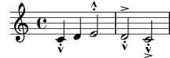
Hasta ahora hemos contemplado la sustitución estática: cuando
LilyPond se encuentra con \centerText, lo sustituye con
aquello que hemos definido que sea (es decir, todo lo que está a
la derecha de centerText=).
LilyPond también puede manejar sustituciones no estáticas (piense en ellas como en funciones).
padText = #(define-music-function (padding) (number?) #{ \once \override TextScript.padding = #padding #}) \relative { c''4^"piu mosso" b a b \padText 1.8 c4^"piu mosso" b a b \padText 2.6 c4^"piu mosso" b a b }![[image of music]](f3/lily-1236a5bc.png)
La utilización de identificadores también es una buena forma de
reducir el trabajo si la sintaxis de entrada de LilyPond cambia
(véase Actualizar ficheros con convert-ly).
Si tiene una sola definición (como p.ej. \dolce) para todos
sus archivos (ver Hojas de estilo), y después la sintaxis se
modifica, sólo tendrá que actualizar su definición \dolce
única, en lugar de tener que hacer cambios en cada uno de los
archivos .ly.
| [ << Conceptos fundamentales ] | [Top][Contents][Index] | [ Trucar la salida >> ] |
| [ < Ahorrar tecleo mediante variables y funciones ] | [ Up: Extender las plantillas ] | [ Trucar la salida > ] |
4.4.5 Partituras y particellas
En música orquestal, todas las notas se imprimen dos veces. Una vez en las particellas para los músicos, y otra para la partitura del director. Los identificadores se pueden usar para evitar la duplicación del trabajo. La música se escribe una vez y se almacena en una variable. El contenido de dicha variable se usa después para generar tanto la particella como la partitura del director.
Es muy conveniente definir las notas en un archivo especial. Por ejemplo, supongamos que el archivo trompa.ly contiene la siguiente parte de un dúo para trompa y fagot:
notasTrompa = \relative {
\time 2/4
r4 f8 a | cis4 f | e4 d |
}
Luego se hace una particella escribiendo en un archivo lo siguiente
\include "trompa.ly"
\header {
instrument = "Trompa en Fa"
}
{
\transpose f c' \notasTrompa
}
La línea
\include "trompa.ly"
sustituye el contenido de trompa.ly en esta posición dentro
del archivo, así que notasTrompa se define con
posterioridad. La instrucción \transpose f c' indica
que el argumento constituido por \notasTrompa se debe
transponer una quinta hacia arriba. Lo que suena como f se
escribe como c', lo que corresponde con el tono de
afinación de una trompa normal en Fa. La transposición se
puede ver en la siguiente salida
![[image of music]](0d/lily-d279cca6.png)
En piezas para conjunto, con frecuencia una de las voces no suena durante muchos compases. Esto queda denotado por un silencio especial, el silencio multicompás. Se introduce con una ‘R’ mayúscula seguida de una duración (‘1’ en el caso de la redonda, ‘2’ en el caso de una blanca, etc.). Multiplicando la duración se pueden construir silencios más largos. Por ejemplo, este silencio ocupa 3 compases de 2/4
R2*3
Cuando se imprime la particella tienen que comprimirse los silencios multicompás. Existe una función musical para hacerlo:
\compressMMRests { … }
Aplicando esto a hornNotes produce:
![[image of music]](ad/lily-0433bd6f.png)
Esta partitura se hace combinando toda la música junta.
Suponiendo que la otra voz se encuentra dentro de
notasFagot en el archivo fagot.ly, la partitura se
hace con
\include "fagot.ly" \include "trompa.ly" << \new Staff \notasTrompa \new Staff \notasFagot >>
lo que nos lleva a
![[image of music]](66/lily-d38f2d5a.png)
Véase también
Manual de aprendizaje: Organizar las piezas mediante variables.
Referencia de la notación: Transposición, Escritura de las particellas, Silencios de compás completo, Inclusión de archivos de LilyPond.
| [ << Conceptos fundamentales ] | [Top][Contents][Index] | [ Plantillas >> ] |
| [ < Partituras y particellas ] | [ Up: Top ] | [ Elementos de trucaje > ] |
5 Trucar la salida
Este capítulo trata de cómo modificar la salida. LilyPond es extremadamente configurable; prácticamente todos los fragmentos de la salida se pueden cambiar.
| [ << Trucar la salida ] | [Top][Contents][Index] | [ Plantillas >> ] |
| [ < Trucar la salida ] | [ Up: Trucar la salida ] | [ Objetos e interfaces > ] |
5.1 Elementos de trucaje
El ‘Trucaje’ es un término de LilyPond que denota los diversos métodos que el usuario tiene a su disposición para modificar el proceso de interpretación del archivo de entrada y cambiar la apariencia de la salida impresa. Algunos trucos son muy fáciles de usar; otros son más complejos. Pero en su conjunto, los métodos de trucaje disponibles posibilitan conseguir casi cualquier apariencia que deseemos en la música impresa.
En esta sección vamos a estudiar los conceptos básicos que se necesitan para comprender el trucaje. Más tarde daremos un amplio abanico de instrucciones listas para usar, que podrá simplemente copiar para obtener el mismo efecto en sus partituras, y al mismo tiempo mostraremos la forma de construir dichas instrucciones para que pueda aprender cómo desarrollar sus propios trucos.
Antes de comenzar con este capítulo, quizá quiera echar un vistazo a la sección Contextos y grabadores, pues los contextos, los grabadores y las propiedades que se contienen en ellos son fundamentales para comprender y construir los trucos.
| 5.1.1 Objetos e interfaces | ||
| 5.1.2 Convenciones de nombres de objetos y propiedades | ||
| 5.1.3 Métodos de trucaje |
| [ << Trucar la salida ] | [Top][Contents][Index] | [ Plantillas >> ] |
| [ < Elementos de trucaje ] | [ Up: Elementos de trucaje ] | [ Convenciones de nombres de objetos y propiedades > ] |
5.1.1 Objetos e interfaces
El trucaje consiste en modificar el funcionamiento y estructura interna del programa LilyPond, por lo que en primer lugar introduciremos algunos términos que se usan para describir dichas operaciones y estructuras internas.
Objeto es un término genérico que se usa para
referirse a la multitud de estructuras internas que LilyPond
construye durante el procesado de un archivo de entrada. Así,
cuando se encuentra una instrucción como \new Staff, se
construye un objeto nuevo del tipo Staff. Entonces, este
objeto Staff contiene todas las propiedades asociadas con
ese pentagrama en particular, por ejemplo, su nombre y su
armadura, además de otros detalles de los grabadores que se han
asignado para que operen dentro del contexto del pentagrama. De
forma similar, hay objetos que guardan las propiedades de todos
los demás contextos, como objetos de Voice, objetos de
Score, objetos de Lyrics, así como objetos que
representan todos los elementos notacionales como líneas
divisorias, cabezas de las notas, ligaduras, indicaciones
dinámicas, etc. Cada objeto tiene su propio conjunto de valores
de propiedad.
Ciertos tipos de objetos reciben nombres especiales. Los objetos que representan elementos de notación sobre la salida impresa como cabezas de notas, plicas, ligaduras de expresión y de unión, digitaciones, claves, etc. reciben el nombre de ‘Objetos de presentación’, a menudo conocidos como ‘Objetos gráficos’, o abreviadamente Grobs. Aún son objetos en el sentido genérico que hemos mencionado, y también todos ellos tienen propiedades asociadas, como su posición, tamaño, color,etc.
Ciertos objetos de presentación son aún más especializados. Las ligaduras de fraseo, los reguladores, las indicaciones de octava alta y baja, y muchos otros objetos gráficos no están situados en un solo lugar: tienen un punto de inicio, un punto de final, y quizá otras propiedades relacionadas con su forma. Los objetos con una forma extendida como estos, reciben el nombre de «Objetos de extensión» o Spanners.
Los «spanners» no se pueden trucar después de haberse creado.
Ello incluye tanto a StaffSymbol como a
LedgerLineSpanner, que continúan a lo largo de toda la
partitura (excepto si se les da fin con la instrucción
\stopStaff y se vuelven a crear con la instrucción
\startStaff.
Es más, existen objetos gráficos ‘abstractos’ que no impriman
nada por sí mismos, sino que más bien recopilan, posicionan y
gestionan a otros objetos gráficos. Los ejemplos usuales son
DynamicLineSpanner, BreakAlignment,
NoteColumn, VerticalAxisGroup o
NonMusicalPaperColumn. Más tarde veremos cómo
se usan algunos de ellos.
Aún falta por explicar qué son las Interfaces. Muchos
objetos, incluso aunque son bastante diferentes, comparten
funcionalidades que se deben procesar de la misma manera. Por
ejemplo, todos los objetos gráficos tienen un color, un tamaño,
una posición, etc., y todas estas propiedades se procesan de la
misma forma durante la interpretación del archivo de entrada por
parte de LilyPond. Para simplificar estas operaciones internas,
estas acciones y propiedades comunes se agrupan en un objeto
llamado grob-interface, interfaz de grob. Hay muchas
otras agrupaciones de propiedades comunes como ésta, y cada una
recibe un nombre que acaba en interface. En total hay más
de 100 interfaces de éstas. Veremos más adelante porqué esto es
del interés y de utilidad para el usuario.
Estos son, en fin, los términos principales relativos a los objetos que vamos a utilizar en este capítulo.
| [ << Trucar la salida ] | [Top][Contents][Index] | [ Plantillas >> ] |
| [ < Objetos e interfaces ] | [ Up: Elementos de trucaje ] | [ Métodos de trucaje > ] |
5.1.2 Convenciones de nombres de objetos y propiedades
Ya hemos visto ciertas convenciones de nomenclatura de objetos, en la sección Contextos y grabadores. En este lugar, para más fácil referencia, presentamos una lista de los tipos de objetos y propiedades más comunes, junto con las convenciones según las cuales reciben su nombre, y un par de ejemplos de nombres reales. Hemos utilizado una ‘A’ mayúscula para denotar cualquier carácter alfabético en mayúsculas, y ‘aaa’ para cualquier número de caracteres alfabéticos en minúscula. Otros caracteres se utilizan literalmente como están.
Objeto o tipo de propiedad Convención de nomenclatura Ejemplos Contextos AaaaoAaaaAaaaAaaaStaff,GrandStaffObjetos de presentación AaaaoAaaaAaaaAaaaSlur,NoteHeadGrabadores Aaaa_aaa_engraverClef_engraver,
Note_heads_engraverInterfaces aaa-aaa-interfacegrob grob-interface,
break-aligned-interfacePropiedades de contextos aaaoaaaAaaaAaaaalignAboveContext,skipBarsPropiedades de objetos de presentación aaaoaaa-aaa-aaadirection,
beam-thickness
Como podremos ver en breve, las propiedades de distintos tipos de objeto se modifican por parte de diferentes instrucciones; así pues, es útil poder reconocer los tipos de objetos y propiedades a partir de sus nombres.
Véase también
Referencia de la notación: Modificar las propiedades.
| [ << Trucar la salida ] | [Top][Contents][Index] | [ Plantillas >> ] |
| [ < Convenciones de nombres de objetos y propiedades ] | [ Up: Elementos de trucaje ] | [ La instrucción \override > ] |
5.1.3 Métodos de trucaje
Este apartado trata de las instrucciones de trucaje más importantes.
La instrucción \override | ||
La instrucción \revert | ||
El prefijo \once | ||
Las instrucciones \tweak y \offset | ||
El prefijo \single |
| [ << Trucar la salida ] | [Top][Contents][Index] | [ Plantillas >> ] |
| [ < Métodos de trucaje ] | [ Up: Métodos de trucaje ] | [ La instrucción \revert > ] |
La instrucción \override
Ya hemos visto las instrucciones \set y \with, que
se usan para cambiar las propiedades de los contextos y
para quitar y poner grabadores, en
Modificar las propiedades de los contextos y
Añadir y eliminar grabadores. Ahora debemos examinar
algunas otras instrucciones importantes.
La instrucción que cambia las propiedades de los objetos
de presentación es \override. Puesto que esta instrucción
debe modificar propiedades internas que se encuentran en un lugar
profundo dentro de LilyPond, su sintaxis no es tan simple como la
del resto de las instrucciones que hemos usado hasta ahora. Tiene
que saber exactamente qué propiedad de qué objeto y en qué
contexto se debe modificar, y cuál debe ser su nuevo valor.
Veamos cómo se hace.
La sintaxis genérica de esta instrucción es:
\override Contexto.ObjetoDePresentación.propiedad-de-presentación = valor
Esto establece la propiedad de nombre propiedad-de-presentación del objeto de presentación con el nombre ObjetoDePresentación, que es miembro del contexto Contexto, al valor valor.
El contexto se puede omitir (y normalmente así es) cuando el
contexto requerido se encuentra implicado sin ambigüedad y es uno
de los contextos del nivel más bajo, es decir: Voice,
ChordNames o Lyrics, y lo omitiremos en muchos de
los ejemplos siguientes. Veremos más tarde cuándo se debe
especificar.
Las últimas secciones tratan de forma exhaustiva las propiedades y sus valores, see Tipos de propiedades. Pero en esta sección usaremos solo unas cuantas propiedades y valores sencillos que sean fáciles de entender, para ilustrar el formato y la utilización de estas instrucciones.
Las expresiones principales de LilyPond son elementos musicales
como notas y duraciones, así como cadenas y elementos de marcado.
Las expresiones más específicas como símbolos y listas se procesan
en el ‘modo de Scheme’, que se invoca por medio del prefijo
‘#’ escrito antes del valor. Los números son un caso
especial: deben ir precedidos de la almohadilla ‘#’ solamente
si se están usando como argumentos de una función de marcado (o
sea, dentro de \markup).2
Para ver más información acerca del modo de Scheme, consulte Sintaxis del Scheme de LilyPond.
\override es la instrucción de uso más común dentro del
trucaje, y durante la mayor parte del resto de este capítulo
presentaremos ejemplos de cómo se usa. A continuación hay un
ejemplo sencillo para cambiar el color de una cabeza:
\relative { c'4 d \override NoteHead.color = "red" e4 f | \override NoteHead.color = "green" g4 a b c | }![[image of music]](f6/lily-28a19b77.png)
| [ << Trucar la salida ] | [Top][Contents][Index] | [ Plantillas >> ] |
[ < La instrucción \override ] | [ Up: Métodos de trucaje ] | [ El prefijo \once > ] |
La instrucción \revert
Una vez sobreescrita, la propiedad retiene su nuevo valor hasta
que se sobreescribe de nuevo o se encuentra una instrucción
\revert. La instrucción \revert tiene la siguiente
sintaxis y ocasiona que el valor de la propiedad se devuelva a su
valor predeterminado original; observe que no es a su valor previo
si se han utilizado varias instrucciones
\override.3
\revert Contexto.ObjetoDePresentación.propiedad-de-presentación
Una vez más, igual que Contexto dentro de la instrucción
\override, con frecuencia no es necesario especificar el
Contexto. Se omitirá en muchos de los ejemplos siguientes.
Aquí devolvemos el color de la cabeza al valor predeterminado para
las dos últimas notas:
\relative { c'4 d \override NoteHead.color = "red" e4 f | \override NoteHead.color = "green" g4 a \revert NoteHead.color b4 c | }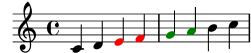
| [ << Trucar la salida ] | [Top][Contents][Index] | [ Plantillas >> ] |
[ < La instrucción \revert ] | [ Up: Métodos de trucaje ] | [ Las instrucciones \tweak y \offset > ] |
El prefijo \once
\override, \revert, \set y \unset se
pueden hacer preceder por \once. Esto hace que la
instrucción sea efectiva solamente durante el tiempo musical en
curso y antes de que la propiedad vuelva a tener otra vez su valor
anterior (que puede ser distinto de su valor predeterminado si aún
se está aplicando otra instrucción \override de
sobreescritura). Utilizando el mismo ejemplo, podemos cambiar el
color de una sola nota de la siguiente manera:
\relative { c'4 d \override NoteHead.color = "red" e4 f | \once \override NoteHead.color = "green" g4 a \once \revert NoteHead.color b c | \revert NoteHead.color f2 c | }![[image of music]](8d/lily-11497db3.png)
El prefijo \once también se puede usar delante de muchas
instrucciones predefinidas para limitar su efecto a un solo
momento musical:
\relative { c'4( d) \once \slurDashed e4( f) | g4( a) \once \hideNotes b( c) | }![[image of music]](0c/lily-ee40499e.png)
| [ << Trucar la salida ] | [Top][Contents][Index] | [ Plantillas >> ] |
[ < El prefijo \once ] | [ Up: Métodos de trucaje ] | [ El prefijo \single > ] |
Las instrucciones \tweak y \offset
Las últimas instrucciones de trucaje que tenemos en LilyPond son
\tweak y \offset. Se deben utilizar cuando varios
objetos tienen lugar en el mismo momento musical pero solo
queremos cambiar las propiedades de algunos de ellos, como una
sola nota dentro de un acorde. El uso de \override para la
sobreescritura afectaría a todas las notas del acorde, mientras
que \tweak afecta solamente al siguiente elemento del flujo
de entrada.
Observe que \offset puede usarse, asimismo, como sustituto
de \override; también tiene otras formas sintácticas.
Consulte The offset command, para ver todos los
detalles.
He aquí un ejemplo. Suponga que queremos cambiar el tamaño de la
cabeza de la nota intermedia (el Mi) en un acorde de
Do mayor. En primer lugar, veamos lo que haría \once
\override:
\relative { <c' e g>4 \once \override NoteHead.font-size = -3 <c e g>4 <c e g>4 }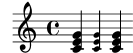
Vemos que la sobreescritura con override afecta a todas las
cabezas de las notas del acorde. Esto es así porque todas las
notas de un acorde ocurren en el mismo momento musical, y
la acción de \once es aplicar la sobreescritura a todos los
objetos de presentación del tipo especificado que ocurren en el
mismo momento musical que la propia instrucción de sobreescritura
\override.
Las instrucciones \tweak y \offset operan de una
forma distinta. Actúan sobre el elemento inmediatamente siguiente
dentro del flujo de entrada. En sus formas más sencillas, son
efectivos solamente sobre objetos que se crean directamente a
partir del elemento siguiente, en esencia las cabezas y las
articulaciones.
Así pues, volviendo a nuestro ejemplo, el tamaño de la nota intermedia se cambiaría de la siguiente forma:
\relative { <c' e g>4 <c \tweak font-size -3 e g>4 }![[image of music]](1f/lily-86961307.png)
Ahora trataremos de modificar la posición vertical del símbolo
\breathe. De manera predeterminada, LilyPond computa una
distancia vertical a partir de la línea central, automáticamente.
Si, por ejemplo, quisiéramos moverlo hacia arriba dos unidades,
\offset sería la instrucción más adecuada. Con
\tweak sería necesario encontrar la posición correcta
manualmente, por ensayo y error.
\relative c'' { c4 \breathe c4 \offset Y-offset 2 \breathe c2 \tweak Y-offset 4 \breathe }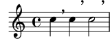
Evidentemenre, \offset solo funciona para valores que
realmente tienen un valor numérico. Son de aplicación otras
restricciones acerca de lo que se puede cambiar; una vez más, le
rogamos que consulte The offset command, para ver más
detalles.
Observe que la sintaxis de \tweak y \offset no es
igual que la de \override. El contexto no se debe
especificar; de hecho, generaría un error hacerlo. Tanto el
contexto como el objeto de presentación están implícitos por el
siguiente elemento del flujo de entrada. Observe también que no
debe haber un signo igual. Así que la sintaxis de las
instrucciones \tweak y \offset en su forma sencilla
es:
\tweak propiedad-de-presentación valor \offset propiedad-de-presentación valor
\tweak y \offset también se pueden usar para
modificar solo una de una serie de articulaciones, como se muestra
aquí:
a'4^"Black" -\tweak color "red" ^"Red" -\tweak color "green" _"Green"![[image of music]](ea/lily-3a5281e6.png)
Tanto la instrucción \tweak como \offset deben venir
precedidan de una marca de articulación porque la propia expresión
trucada debe aplicarse como una articulación. En el caso de más
de una sobreescritura de dirección (‘^’ o ‘_’), gana la
sobreescritura situada más a la izquierda porque se aplica en
último lugar.
Los objetos tales como plicas y alteraciones accidentales se crean
más tarde, y no directamente a partir del evento que viene a
continuación. Aún es posible utilizar \tweak u
\offset sobre tales objetos creados indirectamente mediante
el nombrado explícito del objeto de presentación, siempre y cuando
LilyPond pueda rastrear su origen hasta el evento original:
<\tweak Accidental.color "red" cis''4 \tweak Accidental.color "green" es'' g''>![[image of music]](24/lily-515d2012.png)
Esta forma extensa de las instrucciones \tweak y
\offset se puede describir como
\tweak ObjetoDePresentación.propiedad-de-presentación valor \offset ObjetoDePresentación.propiedad-de-presentación valor
La instrucción \tweak también se debe usar para cambiar la
apariencia de uno solo de un conjunto de grupos especiales
anidados que comiencen en el mismo instante musical. En el
siguiente ejemplo, el corchete del tresillo largo y el primero de
los tres corchetes cortos empiezan en el mismo momento musical, y
por ello cualquier instrucción \override se aplicaría a los
dos. En el ejemplo se usa \tweak para distinguir entre
ellos. La primera instrucción \tweak especifica que el
corchete del tresillo largo se debe colocar por encima de las
notas y el segundo especifica que el número del tresillo se debe
imprimir en rojo sobre el corchete del primer tresillo corto.
\relative c'' { \tweak direction #up \tuplet 3/4 { \tweak color "red" \tuplet 3/2 { c8[ c c] } \tuplet 3/2 { c8[ c c] } \tuplet 3/2 { c8[ c c] } } }![[image of music]](4f/lily-3c04c4e7.png)
Si los grupos anidados no comienzan en el mismo momento, su
apariencia se puede modificar de la forma usual mediante
instrucciones \override:
\relative { \tuplet 3/2 { c'8[ c c] } \once \override TupletNumber.text = #tuplet-number::calc-fraction-text \tuplet 3/2 { c8[ c] c8[ c] \once \override TupletNumber.transparent = ##t \tuplet 3/2 { c8[ c c] } \tuplet 3/2 { c8[ c c] } } }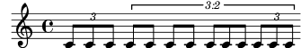
Véase también
Referencia de la notación: Tweak and single, The offset command
| [ << Trucar la salida ] | [Top][Contents][Index] | [ Plantillas >> ] |
[ < Las instrucciones \tweak y \offset ] | [ Up: Métodos de trucaje ] | [ Manual de referencia de funcionamiento interno > ] |
El prefijo \single
Supongamos que queremos enfatizar la cabeza de algunas notas trazándolas de color e incrementando su tamaño, y supongamos también hemos programado una función para hacer la tarea más cómoda:
emphNoteHead = { \override NoteHead.color = "red" \override NoteHead.font-size = 2 } \relative { c''4 a \once \emphNoteHead f d | }![[image of music]](93/lily-d47947d2.png)
El prefijo \once funciona perfectamente para enfatizar
notas únicas o acordes completos, pero no se puede usar para
enfatizar una sola nota dentro de un acorde. Anteriormente
vimos cómo se puede usar la instrucción \tweak para
hacerlo, véase Las instrucciones \tweak y \offset. Pero
\tweak no se puede usar con una función; ahí es donde entra
la instrucción \single:
emphNoteHead = { \override NoteHead.color = "red" \override NoteHead.font-size = 2 } \relative { <c'' a \single \emphNoteHead f d>4 }![[image of music]](ac/lily-347d1b6a.png)
En resumen, \single convierte las sobreescrituras hechas
con\override en trucos hechos con \tweak de tal
manera que cuando hay varios objetos en el mismo instante de
tiempo musical (como las notas de un acorde), \single
afecta a una única nota, la que se genera por la expresión que
sigue inmediatamente, a diferencia de \once que afecta a
todos esos objetos.
El uso de \single de esta forma con una función cualquiera
que contenga solamente sobreescrituras, puede aplicarse a las
notas individuales de un acorde. Sin embargo, \single no
convierte \revert, \set ni \unset en trucos
de \tweak.
Véase también
Manual de aprendizaje:
Las instrucciones \tweak y \offset,
Uso de variables para los ajustes de disposición.
| [ << Trucar la salida ] | [Top][Contents][Index] | [ Plantillas >> ] |
[ < El prefijo \single ] | [ Up: Trucar la salida ] | [ Propiedades de los objetos de presentación > ] |
5.2 Manual de referencia de funcionamiento interno
El manual de Referencia de Funcionamiento Interno (RFI) supone la respuesta definitiva al problema de la configurabilidad de LilyPond. Sin embargo, para comprender cómo se usa necesitará bastante información que no hemos contemplado aún, información que aparece en los apartados siguientes.
| 5.2.1 Propiedades de los objetos de presentación | ||
| 5.2.2 Propiedades de las interfaces | ||
| 5.2.3 Tipos de propiedades |
5.2.1 Propiedades de los objetos de presentación
Una advertencia antes de dirigir nuestra mirada a la referencia de funcionamiento interno. Éste es un documento de referencia, lo que significa que hay pocas o ninguna explicación en él: su propósito es presentar la información de forma precisa y concisa. Por tanto, podrá parecerle desalentador a primera vista. ¡No se preocupe! La guía y las explicaciones que presentamos aquí le permitirán extraer la información de la referencia de funcionamiento interno por sí mismo con tan solo algo de práctica.
Utilicemos un ejemplo concreto con un sencillo fragmento de música real:
{ \key es \major \time 6/8 \relative { r4 bes'8 bes[( g]) g | g8[( es]) es d[( f]) as | as8 g } \addlyrics { The man who | feels love's sweet e -- | mo -- tion } }![[image of music]](64/lily-96937c4d.png)
Suponga ahora que decidimos que nos gustan las ligaduras algo más gruesas. ¿Es posible? La ligadura es, ciertamente, un objeto de presentación, así que la cuestión es ‘¿Hay una propiedad perteneciente a las ligaduras de expresión que controle su grosor?’ Para responder a esta pregunta debemos mirar el manual de Referencia de Funcionamiento Interno, abreviadamente RFI4.
El RFI de la versión de LilyPond que está usando se puede encontrar en la página web de LilyPond en https://lilypond.org. Vaya a la página de la documentación y siga el enlace Manual de Referencia de Funcionamiento Interno (RFI). Para nuestros propósitos pedagógicos sería mejor que utilizase la versión en HTML, no la ‘en una sola página’ ni el PDF. Para que los siguientes párrafos tengan algún sentido deberá consultarlo realmente al tiempo que lee.
Bajo el encabezamiento Top podrá ver cinco enlaces.
Seleccione el enlace Backend, que es donde se encuentra la
información sobre los objetos de presentación. Una vez allí, bajo
el encabezamiento Backend, siga el enlace All
layout objects. La página que aparece relaciona todos los
objetos de presentación que se usan en su versión de LilyPond, en
orden alfabético. Siga el enlace Slur (ligadura de expresión), y
aparecerán relacionadas las propiedades de las ligaduras de
expresión o Slurs.
Una forma alternativa de encontrar esta página es a partir de la Referencia de la Notación. En una de las páginas que tratan de las ligaduras de expresión podrá encontrar un enlace al manual de referencia del funcionamiento interno. Este enlace le llevará directamente a esta página, aunque si tiene una idea del nombre del objeto de presentación que pretende trucar, le resultará más fácil ir directamente al RFI y buscar allí.
Esta página sobre las ligaduras de expresión dentro del manual RFI
nos dice en primer lugar que los objetos Slur se crean por
el grabador Slur_engraver. A continuación relaciona los
ajustes estándar. Navegue por ellos buscando una propiedad que
pudiera controlar el grosor de las ligaduras, y encontrará
thickness (number)
1.2
[...] For slurs and ties, this is the distance between the two
arcs of the curve's outline at its thickest point, [...] This
property is expressed as a multiple of the current staff-line
thickness [...]
Esto promete ser una buena opción para cambiar el grosor. Nos
dice que el valor de thickness es un simple número,
que el valor predeterminado es 1.2, y este valor depende del
grosor de las líneas del pentagrama, lo que significa (más o
menos) que los pentagramas de tamaño menor tienen ligaduras más
delgadas también.
Como dijimos con anterioridad, existen entre pocas y ninguna
explicación en el RFI, pero ya tenemos información suficiente para
probar a cambiar el grosor de la ligadura. Vemos que el nombre
del objeto de presentación es Slur, que el nombre de la
propiedad que debemos cambiar es thickness y que el nuevo
valor debe ser un número algo más grande que 1.2 si queremos hacer
las ligaduras más gruesas.
Ahora podemos construir la instrucción de sobreescritura
\override simplemente mediante la sustitución de los
valores que hemos encontrado para los nombres, omitiendo el
contexto. Usaremos un valor muy grande para el grosor al
principio, para estar seguros de que la instrucción está
funcionando. Obtenemos lo siguiente:
\override Slur.thickness = 5.0
La pregunta final es ‘¿Dónde se debe colocar esta instrucción?’ Aunque nos falta seguridad y estamos todavía aprendiendo, la mejor respuesta es: ‘Dentro de la música, antes de la primera ligadura y cerca de ella.’ Hagámoslo así:
{ \key es \major \time 6/8 \relative { % Increase thickness of all following slurs from 1.2 to 5.0 \override Slur.thickness = 5.0 r4 bes'8 bes[( g]) g | g8[( es]) es d[( f]) as | as8 g } \addlyrics { The man who | feels love's sweet e -- | mo -- tion } }![[image of music]](93/lily-5b3d3c80.png)
y podemos ver que la ligadura es, sin duda, más pesada.
Así pues, ésta es la forma básica de construir instrucciones
\override o de sobreescritura. Existen unas cuantas
complicaciones más con las que nos encontraremos en secciones
posteriores, pero ahora conoce todos los principios esenciales que
necesita para hacerlo por sí mismo (aunque aún necesita algo de
práctica). La cual vendrá proporcionada por los ejemplos que
vienen a continuación.
Búsqueda del contexto
Pero en primer lugar ¿qué habría pasado si hubiésemos tenido que
especificar el contexto? ¿Cuál sería? Podemos suponer que las
ligaduras están en el contexto Voice, por estar claramente
asociados de manera estrecha con las líneas individuales de
música, pero ¿podemos estar seguros? Para averiguarlo, vayamos de
nuevo al inicio de la página del RFI que describe las ligaduras
(Slur), donde dice ‘Slur objects are created by the
following engraver(s): Slur_engraver.’ («Los objetos de
ligadura de expresión se crean por: el grabador
Slur_engraver»). Así pues, las ligaduras de expresión se
crean en cualquier contexto en el que se encuentre el grabador
Slur_engraver. Siga el enlace a la página del grabador
Slur_engraver. Al final del todo, dice que el grabador
Slur_engraver es parte de diez contextos de voz, incluido
el contexto de voz estándar, Voice, por lo que nuestra
suposición era acertada. Y a causa de que Voice es uno de
los contextos de más bajo nivel que se encuentra implícito sin
ambigüedad por el hecho de que estamos escribiendo notas, podemos
omitirlo en este lugar concreto.
Sobreescritura por una sola vez
Como puede ver, todas las ligaduras son más gruesas en el
último ejemplo. Pero ¿y si quisiéramos que solamente la primera
ligadura fuese más gruesa? Esto se consigue con la instrucción o
prefijo \once. Colocado inmediatamente antes de la
instrucción \override ocasiona que solamente cambie la
ligadura que comienza en la nota inmediata siguiente. Si
la nota inmediata siguiente no da inicio a una ligadura, la
instrucción no tiene ningún efecto en absoluto: no se recuerda
hasta que se encuentre alguna ligadura, sino que simplemente se
ignora. Así pues, la instrucción que lleva \once se debe
reposicionar de la forma siguiente:
{ \key es \major \time 6/8 \relative { r4 bes'8 % Increase thickness of immediately following slur only \once \override Slur.thickness = 5.0 bes8[( g]) g | g8[( es]) es d[( f]) as | as8 g } \addlyrics { The man who | feels love's sweet e -- | mo -- tion } }![[image of music]](84/lily-101734f7.png)
Hemos hecho que ahora solamente la primera ligadura sea más gruesa.
La instrucción o prefijo \once también se puede usar antes
de la instrucción \set.
Una alternativa a \once \override es usar la instrucción
\tweak; puede obtener el mismo resultado si sustituye
\once \override Slur.thickness = 5.0 bes8[(
en el ejemplo anterior, con
bes8[\tweak thickness 5.0 (
Recuperación del ajuste
Finalmente ¿y si quisiéramos que solamente las dos primeras
ligaduras fuesen más gruesas? En fin; podríamos usar dos
instrucciones, cada una de ellas precedida por el prefijo
\once, situadas inmediatamente antes de cada una de las
notas en que comienzan las ligaduras:
{ \key es \major \time 6/8 \relative { r4 bes'8 % Increase thickness of immediately following slur only \once \override Slur.thickness = 5.0 bes[( g]) g | % Increase thickness of immediately following slur only \once \override Slur.thickness = 5.0 g8[( es]) es d[( f]) as | as8 g } \addlyrics { The man who | feels love's sweet e -- | mo -- tion } }![[image of music]](c7/lily-bc83aaf7.png)
o podríamos omitir la instrucción prefija \once y utilizar
la instrucción \revert (restablecer) para devolver la
propiedad del grosor, thickness, a su valor predeterminado
después de la segunda ligadura:
{ \key es \major \time 6/8 \relative { r4 bes'8 % Increase thickness of all following slurs from 1.2 to 5.0 \override Slur.thickness = 5.0 bes[( g]) g | g8[( es]) es % Revert thickness of all following slurs to default of 1.2 \revert Slur.thickness d8[( f]) as | as8 g } \addlyrics { The man who | feels love's sweet e -- | mo -- tion } }![[image of music]](63/lily-790f6c83.png)
la instrucción \revert se puede utilizar para devolver
cualquier propiedad que se haya cambiado con \override a su
valor predeterminado. Puede utilizar el método que mejor se
adapte a aquello que quiere hacer.
Así finaliza nuestra introducción al manual de RFI, y el método básico de trucaje. A continuación, en las últimas secciones de este capítulo encontrará varios ejemplos, en parte para introducirle en algunas de las posibilidades adicionales del manual RFI, y en parte para proporcionarle más práctica en cómo extraer información de él. Estos ejemplos irán conteniendo cada vez menos palabras de guía y explicación.
| [ << Trucar la salida ] | [Top][Contents][Index] | [ Plantillas >> ] |
| [ < Propiedades de los objetos de presentación ] | [ Up: Manual de referencia de funcionamiento interno ] | [ Tipos de propiedades > ] |
5.2.2 Propiedades de las interfaces
Suponga ahora que queremos imprimir la letra de la canción en
cursiva. ¿Qué forma de instrucción \override necesitamos
para hacerlo? En primer lugar miramos en la página del RFI que
relaciona todos los objetos, ‘All layout objects’, como antes, y
buscamos un objeto que pueda controlar la letra de la canción.
Encontramos LyricText, que parece adecuado. Al seguir este
enlace se presentan las propiedades ajustables para el texto de la
letra. Estos incluyen font-series y font-size, pero
nada que pudiera aplicar una forma cursiva. Esto es porque la
propiedad de la forma es común a todos los objetos de fuente
tipográfica, y por tanto, en vez de incluirlo en cada uno de los
objetos de presentación, se agrupa junto con otras propiedades
comunes similares y se deposita en una Interfaz, la
interfaz de las fuentes tipográficas font-interface.
Por tanto, ahora necesitamos aprender cómo encontrar las propiedades de las interfaces, y descubrir qué objetos usan estas propiedades de interfaz.
Mire de nuevo la página del RFI que describe a LyricText.
Al final de la página hay una lista de enlaces a las interfaces
que LyricText contempla. La lista tiene siete elementos,
entre ellos font-interface. Al seguir este enlace llegamos
a las propiedades asociadas con esta interfaz, que también son
propiedades de todos los objetos que lo llevan, entre ellos
LyricText.
Ahora vemos todas las propiedades ajustables por el usuario que
controlan las tipografías, entre ellas ‘font-shape
(symbol)’. El valor entre paréntesis da el tipo de variable que
se espera por parte de la propiedad; en este caso es un sýmbolo
(de Scheme). El manual documenta también los valores posibles,
que son upright (recta), italics (cursiva) o
slanted (inclinada).
Observará que font-series y font-size también se
encuentran aquí relacionadas. Esto inmediatamente hace que surja
la pregunta: ¿Por qué están las propiedades comunes de tipografía
font-series y font-size relacionadas bajo
LyricText así como bajo la interfaz font-interface
pero font-shape no lo está? La respuesta es que
font-series y font-size se cambian a partir de sus
valores predeterminados globales cuando se crea un objeto
LyricText, pero font-shape no lo hace. Entonces los
elementos de la lista LyricText le dicen los valores para
esas dos propiedades que son de aplicación para LyricText.
Otros objetos que contemplan font-interface establecerán
dichas propiedades de forma diferente cuando se crean.
Veamos si ahora podemos construir la instrucción \override
para cambiar la letra a cursiva. El objeto es LyricText,
la propiedad es font-shape y el valor es italic.
Igual que antes, omitiremos el contexto.
Como nota aparte, aunque es importante, observe que ciertas
propiedades toman valores que son símbolos, como italic, y
deben ir precedidos de un apóstrofo, ‘'’. Los símbolos se
leen a continuación internamente por parte de LilyPond. Tenga en
cuenta la diferencia con las cadenas de texto arbitrarias, que
aparecerían como "una cadena de texto"; para ver más
detalles sobre los símbolos y las cadenas, consulte
Tutorial de Scheme.
Así pues, la instrucción \override necesaria para imprimir
la letra en cursiva, es:
\override LyricText.font-shape = #'italic
Esto debe escribirse justo delante de la letra a la que debe afectar, de esta forma:
{ \key es \major \time 6/8 \relative { r4 bes'8 bes[( g]) g | g8[( es]) es d[( f]) as | as8 g } \addlyrics { \override LyricText.font-shape = #'italic The man who | feels love's sweet e -- | mo -- tion } }![[image of music]](98/lily-bbbcaa0f.png)
y toda la letra se imprime en cursiva.
Nota: Dentro de la letra, deje siempre espacios entre la sílaba final y la llave de cierre.
Véase también
Manual de Extensión: Tutorial de Scheme.
| [ << Trucar la salida ] | [Top][Contents][Index] | [ Plantillas >> ] |
| [ < Propiedades de las interfaces ] | [ Up: Manual de referencia de funcionamiento interno ] | [ Apariencia de los objetos > ] |
5.2.3 Tipos de propiedades
Hasta ahora hemos visto dos tipos de propiedad:: ‘número’ y
‘símbolo’. Para que sea válido, el valor que se da a una
propiedad debe ser del tipo correcto y obedecer las reglas de
dicho tipo. El tipo de la propiedad se muestra siempre entre
paréntesis después del nombre de la propiedad en el RFI. He aquí
una lista de los tipos que podrá necesitar, junto con las reglas
de dicho tipo, y algunos ejemplos. Al usar una expresión de
Scheme, debe escribir siempre un símbolo de almohadilla, ‘#’,
delante de estos valores cuando se introducen en la instrucción
\override, incluso si el propio valor ya comienza por
‘#’. Solamente ofrecemos aquí ejemplos para constantes; si
quiere calcular un valor usando Scheme, consulte
Cálculos en Scheme.
Tipo de propiedad Reglas Ejemplos Booleano ‘verdadero’ o ‘falso’, representado por #to#f##t,##fdimensión
(en espacios de pentagrama)un número decimal (en unidades de espacios de pentagrama) 2.5,0.34dirección una constante válida de dirección o su equivalente numérico ( 0oCENTERindican una dirección neutra)#LEFT,#CENTER,#UP,1,-1entero un número entero positivo 3,-1lista una secuencia de constantes o símbolos separados por espacios, encerrado entre paréntesis y precedido de un apóstrofo o comilla simple #'(left-edge staff-bar),
#'(1),#'(),
#'(1.0 0.25 0.5)marcado cualquier elemento válido de marcado de texto \markup { \italic "cresc." },
"gaita"momento una duración musical; este tipo es diferente de la duración de una nota \musicLength 4.,
\musicLength { 2 2. }número cualquier valor positivo o negativo, posiblemente decimal 3,-2.45pareja
(de números)Dos números separados por la secuencia ‘espacio’, ‘.’, ‘espacio’, encerrado entre paréntesis y precedido de un apóstrofo #'(2 . 3.5),
#'(0.1 . -3.2)símbolo cualquiera del conjunto de símbolos permitidos para esa propiedad, precedido de un apóstrofo #'italic,#'insidedesconocido un procedimiento, o bien #fpara no producir ninguna acción#bend::print,
#ly:text-interface::print,
##fvector constantes encerradas entre #(…).##(#t #t #f)
Observe que los argumentos numéricos de las funciones de marcado
dentro de un bloque \markup necesitan ir precedidas de un
símbolo de almohadilla.
Véase también
Manual de Extensión: Tutorial de Scheme.
| [ << Trucar la salida ] | [Top][Contents][Index] | [ Plantillas >> ] |
| [ < Tipos de propiedades ] | [ Up: Trucar la salida ] | [ Visibilidad y color de los objetos > ] |
5.3 Apariencia de los objetos
Ahora vamos a poner en práctica lo que hemos aprendido con unos cuantos ejemplos que muestran cómo se pueden usar los trucos para cambiar el aspecto de la música impresa.
| 5.3.1 Visibilidad y color de los objetos | ||
| 5.3.2 Tamaño de los objetos | ||
| 5.3.3 Longitud y grosor de los objetos |
| [ << Trucar la salida ] | [Top][Contents][Index] | [ Plantillas >> ] |
| [ < Apariencia de los objetos ] | [ Up: Apariencia de los objetos ] | [ La propiedad stencil (sello) > ] |
5.3.1 Visibilidad y color de los objetos
Dentro de un uso educativo de la música, podríamos desear imprimir una partitura con ciertos elementos omitidos como ejercicio para el alumno, a quien se le pide que los complete. A la manera de ejemplo sencillo, supongamos que el ejercicio es escribir las líneas divisorias que faltan en un fragmento musical. Pero las líneas divisorias normalmente se insertan automáticamente. ¿Cómo hacemos para que no se impriman?
Antes de enredarnos con esto, recordemos que las propiedades de los objetos se agrupan en lo que hemos llamado interfaces (see Propiedades de las interfaces). Esto es simplemente agrupar las propiedades que se pueden usar juntas para trucar un objeto gráfico: si una de ellas se necesita para un objeto, también las otras. Así, ciertos objetos usan las propiedades de algunas interfaces, otros usan las de otras interfaces. Las interfaces que contienen las propiedades que un determinado grob necesita se encuentran relacionadas en el manual RFI al final de la página que describe dicho grob, y esas propiedades se pueden ver mirando dichas interfaces.
Hemos explicado cómo encontrar información sobre los grobs en
Propiedades de los objetos de presentación. Usando el mismo enfoque,
vamos al RFI para buscar el objeto de presentación que imprime las
líneas divisorias. A través del enlace Backend y All
layout objects encontramos que hay un objeto de presentación
llamado BarLine. Entre sus propiedades se encuentran dos
que controlan la visibilidad: break-visibility y
stencil. Las líneas divisorias también contemplan un
número de interfaces, entre ellos el grob-interface, donde
podemos encontrar las propiedades transparent y
color. Todas ellas pueden afectar la visibilidad de las
barras de compás (y, por supuesto, por extensión, también la de
muchos otros objetos de presentación). Vamos a considerar cada
uno de ellos por orden.
La propiedad stencil (sello) | ||
La propiedad break-visibility (visibilidad en el salto) | ||
La propiedad transparent (transparente) | ||
La propiedad color |
La propiedad stencil (sello)
Esta propiedad controla la apariencia de las barras de compás
mediante la especificación del símbolo (o «glifo») que se debe
imprimir. Igual que como otras muchas propiedades, se puede
establecer de forma que no imprima nada ajustando su valor a
#f. Vamos a probarlo, como antes, omitiendo el Contexto
implícito, Voice:
\relative { \time 12/16 \override BarLine.stencil = ##f c''4 b8 c d16 c d8 | g,8 a16 b8 c d4 e16 | e8 }![[image of music]](38/lily-9e752ff7.png)
Las barras de compás todavía se imprimen. ¿Qué es lo que está
mal? Vuelva al RFI y mire de nuevo la página que ofrece las
propiedades del objeto BarLine. Al principio de la página dice
“BarLine objects are created by the following
engraver(s): Bar_engraver” (los objetos Barline se crean
por los siguientes grabador(es): Bar_engraver). Vaya a la
página del grabador Bar_engraver siguiendo el enlace. Al
final da una lista de contextos en los que el grabador de líneas
divisorias opera. Todos ellos son del tipo Staff, y así la
razón de que la instrucción \override no funcionara como
esperábamos, es porque Barline no se encuentra en el
contexto predeterminado Voice. Si el contexto no se
especifica correctamente, la instrucción simplemente no funciona.
No se produce ningún mensaje de error, y no se registra nada en el
archivo log de registro. Vamos a intentar corregirlo escribiendo
el contexto correcto:
\relative { \time 12/16 \override Staff.BarLine.stencil = ##f c''4 b8 c d16 c d8 | g,8 a16 b8 c d4 e16 | e8 }![[image of music]](bc/lily-3880bf24.png)
Ahora las barras de compás han desaparecido. La operación de
fijar la propiedad stencil al valor #f es tan
frecuente que existe una abreviatura para ella, llamada
\omit (omitir):
\relative { \time 12/16 \omit Staff.BarLine c''4 b8 c d16 c d8 | g,8 a16 b8 c d4 e16 | e8 }![[image of music]](4b/lily-a648dbe5.png)
Sin embargo, observe que el establecimiento de la propiedad
stencil al valor #f produce errores cuando las se
requieren las dimensiones del objeto para un procesamiento
correcto. Por ejemplo, se generan errores si la propiedad
stencil del objeto NoteHead se establece al valor
#f. Si es el caso, podemos en vez de ello utilizar la
función point-stencil, que establece el sello a un objeto
con tamaño nulo:
\relative { c''4 c \once \override NoteHead.stencil = #point-stencil c4 c }![[image of music]](fb/lily-d74829ed.png)
| [ << Trucar la salida ] | [Top][Contents][Index] | [ Plantillas >> ] |
[ < La propiedad stencil (sello) ] | [ Up: Visibilidad y color de los objetos ] | [ La propiedad transparent (transparente) > ] |
La propiedad break-visibility (visibilidad en el salto)
Vemos en las propiedades de BarLine que aparecen en el RFI
que la propiedad break-visibility requiere un vector de
tres valores booleanos. Controlan respectivamente si las barras
de compás se imprimen al final de una línea, en mitad de una
línea, y al principio de las líneas. Para nuestro ejemplo,
queremos que todas las barras de compás se supriman, por lo que el
valor que necesitamos es #(#f #f #f) (disponible también
bajo el nombre all-invisible, todas invisibles). Vamos a
probarlo, recordando incluir el contexto de Staff. Observe
también que al escribir este valor tenemos ## antes del
paréntesis de apertura. Se necesita un ‘#’ como parte de la
sintaxis de las contantes vectoriales, y el primer símbolo de
almohadilla ‘#’ se necesita, como siempre, para preceder
el valor en sí dentro de la instrucción \override.
\relative { \time 12/16 \override Staff.BarLine.break-visibility = ##(#f #f #f) c''4 b8 c d16 c d8 | g,8 a16 b8 c d4 e16 | e8 }![[image of music]](df/lily-567a848a.png)
Y podemos ver que esto también quita todas las líneas divisorias.
| [ << Trucar la salida ] | [Top][Contents][Index] | [ Plantillas >> ] |
[ < La propiedad break-visibility (visibilidad en el salto) ] | [ Up: Visibilidad y color de los objetos ] | [ La propiedad color > ] |
La propiedad transparent (transparente)
En la relación de propiedades que se especifican en la página del
grob-interface del RFI podemos ver que la propiedad
transparent es un valor booleano. Esto se debe establecer
a #t para hacer que el grob sea transparente. En el
ejemplo siguiente vamos a hacer que la indicación de compás, y no
las líneas divisorias, sea transparente. Para hacerlo tenemos que
buscar el nombre del grob de la indicación de compás. Volviendo a
la página ‘All layout objects’ del RFI, buscamos las propiedades
del objeto de presentación TimeSignature. Se produce por
parte del grabador Time_signature_engraver; puede comprobar
que vive dentro del contexto de Staff y también contempla
la interfaz grob-interface. Así pues, la instrucción que
hace transparente a la indicación de compás es
\relative { \time 12/16 \override Staff.TimeSignature.transparent = ##t c''4 b8 c d16 c d8 | g,8 a16 b8 c d4 e16 | e8 }![[image of music]](11/lily-c21ded71.png)
Una vez más, el establecimiento de la propiedad transparent
es una operación bastante frecuente, de modo que tenemos una
abreviatura llamada \hide (ocultar).
\relative { \time 12/16 \hide Staff.TimeSignature c''4 b8 c d16 c d8 | g,8 a16 b8 c d4 e16 | e8 }![[image of music]](6f/lily-8d2b6c23.png)
En ninguno de los dos casos aparece ya la indicación de compás,
pero esta instrucción deja una separación en el lugar donde antes
estaba la indicación de compás. Quizá esto es lo que queremos
para un ejercicio en que el alumno deba escribirlo, pero en otras
circunstancias esta separación podría no ser deseable. En vez de
eso, para quitarla, el stencil o «sello» de la indicación de
compás se debe establecer al valor #f:
\relative { \time 12/16 \omit Staff.TimeSignature c''4 b8 c d16 c d8 | g,8 a16 b8 c d4 e16 | e8 }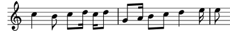
y la diferencia es obvia: al establecer el sello al valor
#f (posiblemente por medio de \omit) quitamos el
objeto por completo; al hacer el objeto transparent (lo que
puede hacerse utilizando \hide) lo dejamos donde está, pero
lo hacemos invisible.
Consulte Simulación de un calderón en el MIDI, para ver otro ejemplo
que muestra la diferencia entre \omit y \hide.
| [ << Trucar la salida ] | [Top][Contents][Index] | [ Plantillas >> ] |
[ < La propiedad transparent (transparente) ] | [ Up: Visibilidad y color de los objetos ] | [ Tamaño de los objetos > ] |
La propiedad color
Para finalizar, intentemos hacer invisibles las barras de compás pintándolas de color blanco (hay un problema relacionado, que consiste en que la línea divisoria blanca puede tapar o no tapar las líneas del pentagrama a las que cruza. Podrá observar en algunos de los ejemplos que aparecen a continuación, que esto sucede de forma impredecible. Los detalles sobre por qué esto ocurre así, y cómo controlarlo, se estudian en Pintar los objetos de blanco; de momento estamos estudiando el color, por lo que le rogamos que acepte esta limitación por ahora).
La interfaz grob-interface especifica que la propiedad
color es una lista, pero no hay ninguna explicación sobre
lo que debe ir en esa lista. La lista que requiere es realmente
una lista de valores en unidades internas, pero para evitar tener
que saber cuáles son, se ofrecen varias vías para la
especificación de los colores. La primera forma es utilizar uno
de los colores ‘CSS’ predefinidos que están relacionados en la
Lista de colores. Para poner las
líneas divisorias de color blanco, escribimos
\relative { \time 12/16 \override Staff.BarLine.color = "white" c''4 b8 c d16 c d8 | g,8 a16 b8 c d4 e16 | e8 }![[image of music]](97/lily-b0c88d4b.png)
y de nuevo podemos comprobar que las barras de compás no son
visibles. Observe que "white" no viene precedido de un
apóstrofo: no es un símbolo, sino una cadena de caracteres,
mapeado a una lista predefinida de valores internos. A este
respecto, la sintaxis de LilyPond refleja el
lenguaje CSS que se usa
habitualmente en las páginas web; además de los nombres
predefinidos, podemos especificar un código de color hexadecimal:
\relative { \time 12/16 \override Staff.BarLine.color = "#FFFFFF" c''4 b8 c d16 c d8 | g,8 a16 b8 c d4 e16 | e8 }![[image of music]](2c/lily-241f088b.png)
Podemos incluso definir dicho color como variable, y después usar esa variable como una definición de propiedad. Como es al mismo tiempo una variable de LilyPond y un objeto de Scheme, puede ir prefijada por una barra invertida o un símbolo de almohadilla sin distinción alguna:
whiteVar = "#FFFFFF" \relative { \time 12/16 \override Staff.BarLine.color = \whiteVar c''4 b8 c d16 c d8 | \override Staff.BarLine.color = #whiteVar g,8 a16 b8 c d4 e16 | e8 }![[image of music]](83/lily-49d3a653.png)
Otra manera de añadir colores a nuestra partitura es mediante el
uso de una función. Existen dos funciones útiles para ello; una
es la función x11-color, que utilizaremos más adelante. La
otra es la función rgb-color, que presenta la lógica
interna de LilyPond: toma tres argumentos que dan las intensidades
de los colores rojo, verde y azul. Cada uno de ellos toma valores
entre 0 y 1. Así pues, para establecer el color a rojo, el valor
sería (rgb-color 1 0 0) y para el blanco sería
(rgb-color 1 1 1):
\relative { \time 12/16 \override Staff.BarLine.color = #(rgb-color 1 1 1) c''4 b8 c d16 c d8 | g,8 a16 b8 c d4 e16 | e8 }![[image of music]](5c/lily-eed2dab1.png)
Observe que en este caso, toda la llamada a la función debe estar
entre paréntesis. Lo mismo vale para la función x11-color
que pasamos anteriormente por alto.
x11-color, de nuevo, lleva a cabo una asignación de nombres
de color predefinidos a valores internos, pero ofrece muchas más
alternativas que los nombres de CSS, como se ve en
Lista de colores). Por ejemplo,
el conjunto de colores de X11 incluye una completa gama de tonos
de gris, cuyos nombres van desde el negro, 'grey0, hasta el
blanco, 'grey100, en pasos de 1. Vamos a ilustrar
esto estableciendo todos los objetos de nuetro ejemplo en
distintos tonos de gris:
\relative { \time 12/16 \override Staff.StaffSymbol.color = #(x11-color 'grey30) \override Staff.TimeSignature.color = #(x11-color 'grey60) \override Staff.Clef.color = #(x11-color 'grey60) \override Voice.NoteHead.color = #(x11-color 'grey85) \override Voice.Stem.color = #(x11-color 'grey85) \override Staff.BarLine.color = #(x11-color 'grey10) c''4 b8 c d16 c d8 | g,8 a16 b8 c d4 e16 | e8 }![[image of music]](a1/lily-99febc90.png)
Observe los contextos asociados con cada uno de los objetos de presentación. ¡Es importante que estén correctamente escritos, o las instrucciones no funcionarán! Recuerde que el contexto es aquel en que se encuentra el grabador correspondiente. El contexto predeterminado para los grabadores puede encontrarse empezando por el objeto de presentación, de ahí al grabador que lo produce, y en la página del grabador del RFI aparece en qué contexto se puede encontrar normalmente el grabador.
| [ << Trucar la salida ] | [Top][Contents][Index] | [ Plantillas >> ] |
[ < La propiedad color ] | [ Up: Apariencia de los objetos ] | [ Longitud y grosor de los objetos > ] |
5.3.2 Tamaño de los objetos
Empezaremos examinando de nuevo un ejemplo anterior (véase Anidado de expresiones musicales) que nos mostraba cómo introducir un pentagrama temporal, como en un ossia.
\new Staff ="main" { \relative { r4 g'8 g c4 c8 d | e4 r8 << { f8 c c } \new Staff \with { alignAboveContext = "main" } { f8 f c } >> r4 | } }![[image of music]](93/lily-c8093e04.png)
Los fragmentos de Ossia se escriben normalmente sin clave ni
compás, y por lo normal se imprimen más pequeños que el pentagrama
principal. Ya sabemos cómo quitar la clave y el compás:
simplemente establecemos el sello de cada uno de ellos a
#f, como sigue:
\new Staff ="main" { \relative { r4 g'8 g c4 c8 d | e4 r8 << { f8 c c } \new Staff \with { alignAboveContext = "main" } { \omit Staff.Clef \omit Staff.TimeSignature { f8 f c } } >> r4 | } }![[image of music]](bb/lily-d5f8fa8b.png)
donde el par de llaves adicional después de la cláusula
\with es necesario para asegurar que la sobreescritura
encerrada y la música se aplican al pentagrama de ossia.
Pero ¿cuál es la diferencia entre modificar el contexto de
pentagrama usando \with y modificar los sellos de clave y
de compás con \override, o en este caso \omit? La
diferencia principal es que los cambios que se realizan en una
cláusula \with se hacen en el momento en que se crea el
contexto, y permanecen activos como valores
predeterminados durante toda la duración de dicho
contexto, mientras que las instrucciones \set o
\override incluidas dentro de la música son dinámicas:
hacen cambios sincronizados con un punto concreto de la música.
Si los cambios se deshacen o se devuelven mediante \unset o
\revert volverán a su valor predeterminado que será el
establecido en la cláusula \with, o si no se ha establecido
ninguno en este lugar, los valores predeterminados normales.
Ciertas propiedades de contexto se pueden modificar solamente
dentro de cláusulas \with. Son aquellas propiedades que no
se pueden cambiar después de que el contexto se ha creado.
alignAboveContext y su compañero, alignBelowContext,
son dos de tales propiedades: una vez que el pentagrama se ha
creado, su alineación está decidida y no tendría sentido intentar
cambiarla más tarde.
Los valores predeterminados de las propiedades de los objetos de
presentación también se pueden establecer dentro de cláusulas
\with. Simplemente utilice la instrucción \override
normal dejando aparte el nombre del contexto, ya que está definido
sin ambigüedad como el contexto que la cláusula \with está
modificando. De hecho, se producirá un error si se especifica un
contexto en este lugar.
Así pues, podemos reemplazar el ejemplo anterior con
\new Staff ="main" { \relative { r4 g'8 g c4 c8 d | e4 r8 << { f8 c c } \new Staff \with { alignAboveContext = "main" % Don't print clefs in this staff \override Clef.stencil = ##f % Don't print time signatures in this staff \override TimeSignature.stencil = ##f } { f8 f c } >> r4 | } }![[image of music]](7d/lily-96e881fc.png)
Resulta que también podemos emplear aquí las abreviaturas
\hide y \omit para fijar la propiedad
transparent y borrar el stencil, lo que conduce al
resultado siguiente:
\new Staff ="main" { \relative { r4 g'8 g c4 c8 d | e4 r8 << { f8 c c } \new Staff \with { alignAboveContext = "main" % Don't print clefs in this staff \omit Clef % Don't print time signatures in this staff \omit TimeSignature } { f8 f c } >> r4 | } }![[image of music]](eb/lily-63b85ef6.png)
Finalmente llegamos a la forma de cambiar el tamaño de los objetos de presentación.
Ciertos objetos de presentación se crean como glifos sacados de
una fuente tipográfica. Entre ellos se encuentran las cabezas,
alteraciones, elementos de marcado, claves, indicaciones de
compás, indicaciones dinámicas y la letra de las canciones. Su
tamaño se cambia mediante la modificación de la propiedad
font-size, como veremos en breve. Otros objetos de
presentación como ligaduras de unión y de expresión (en general,
objetos de extensión) se trazan individualmente, por lo que no hay
un tamaño de tipografía font-size asociado a ellos. Estos
objetos generalmente derivan su tamaño de los objetos a los que
están adosados, y por ello normalmente no hay necesidad de
cambiarles el tamaño manualmente. Aún otras propiedades como la
longitud de las plicas y las barras de compás, el grosor de las
barras de corchea y otras líneas, y la separación de las líneas
del pentagrama se deben modificar de otras formas especiales.
Volviendo al ejemplo del ossia, vamos a cambiar en primer lugar el
tamaño de la tipografía. Podemos hacerlo de dos formas. Podemos
cambiar el tamaño de las tipografías de cada uno de los tipos de
objeto como las cabezas (NoteHeads) con instrucciones como
\override NoteHead.font-size = -2
o podemos cambiar el tamaño de todas las tipografías estableciendo
una propiedad especial, fontSize, utilizando \set, o
mediante su inclusión dentro de una cláusula \with (pero
sin el \set).
\set fontSize = -2
Los dos enunciados producirían una reducción del tamaño de la tipografía en dos pasos a partir de su valor previo, donde cada paso reduce o aumenta el tamaño aproximadamente en un 12%.
Vamos a probarlo en nuestro ejemplo del ossia:
\new Staff ="main" { \relative { r4 g'8 g c4 c8 d | e4 r8 << { f8 c c } \new Staff \with { alignAboveContext = "main" \omit Clef \omit TimeSignature % Reduce all font sizes by ~24% fontSize = -2 } { f8 f c } >> r4 | } }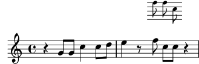
Aún no está demasiado bien. Las cabezas y los corchetes de las notas son más pequeños, pero las plicas son demasiado largas en proporción, y las líneas del pentagrama están demasiado separadas entre sí. Se debe reducir su escala en proporción a la reducción de la tipografía. El siguiente apartado trata sobre cómo se hace esto.
| [ << Trucar la salida ] | [Top][Contents][Index] | [ Plantillas >> ] |
| [ < Tamaño de los objetos ] | [ Up: Apariencia de los objetos ] | [ Desplazamientos y alineaciones > ] |
5.3.3 Longitud y grosor de los objetos
Las distancias y longitudes en LilyPond se miden generalmente en
espacios de pentagrama, o sea, la distancia entre líneas
adyacentes de la pauta (o de manera ocasional medios espacios),
mientras que la mayoría de las propiedades de grosor se miden como
múltiplos del grosor actual de las líneas del pentagrama, que
viene dada por la propiedad thickness del grob
StaffSymbol. Por ejemplo, de forma predeterminada, a las
líneas de los reguladores se les da un grosor de una unidad del
grosor de las líneas del pentagrama, mientras que el grosor de una
plica es 1.3 unidades. Observe sin embargo que ciertas
propiedades de grosor son diferentes; por ejemplo, el grosor de
las barras de corchea se controla por medio del valor de
beam-thickness, que se mide en espacios de pentagrama.
Entonces ¿cómo se tienen que escalar las longitudes en proporción
al tamaño de la tipografía? Se puede hacer con la ayuda de una
función especial que se llama magstep, pensada
especialmente para este propósito. Toma un argumento, el cambio
de tamaño de la tipografía (valor -2 en nuestro ejemplo)
y devuelve un factor de escalado adecuado para reducir otros
objetos en la misma proporción. El truco ahora consiste en no
cambiar las longitudes de las plicas y otros objetos gráficos,
sino más bien cambiar las unidades en que están basados los
valores de longitud: es la propiedad staff-space del grob
StaffSymbol.
\new Staff ="main" { \relative { r4 g'8 g c4 c8 d | e4 r8 << { f8 c c } \new Staff \with { alignAboveContext = "main" \omit Clef \omit TimeSignature fontSize = -2 % Reduce stem length and line spacing to match \override StaffSymbol.staff-space = #(magstep -2) } { f8 f c } >> r4 | } }![[image of music]](9a/lily-80d42c60.png)
Aunque modificar staff-space afecta a la escala del ossia,
no afecta al espaciado horizontal: este viene determinado por la
disposición de la música principal, de manera que se mantenga
sinconizada con ella, por lo que no resulta afectada por ninguno
de estos cambios de tamaño. Por descontado, si se cambiara la
escala de toda la música principal de esta manera, entonces el
espaciado horizontal se vería afectado. Esto se examina más tarde
en la sección dedicada a la disposición.
De esta manera completamos la creación de un ossia. Los tamaños y las longitudes de todos los demás objetos pueden modificarse de forma parecida
Para cambios pequeños en la escala, como en el ejemplo anterior,
el grosor de las distintas líneas trazadas como barras de compás,
reguladores, ligaduras, etc., no requiere por lo general un ajuste
global. Si el grosor de cualquier objeto de presentación en
particular ha de ser ajustado, ello puede conseguirse mejor
mediante la sobreescritura de su propiedad thickness. Se
mostró anteriormente en Propiedades de los objetos de presentación un
ejemplo de modificación del grosor de las ligaduras de
expresión. El grosor de todos los objetos que se trazan (es decir,
los que no están producidos a partir de una fuente tipográfica) se
pueden cambiar de la misma forma.
| [ << Trucar la salida ] | [Top][Contents][Index] | [ Plantillas >> ] |
| [ < Longitud y grosor de los objetos ] | [ Up: Trucar la salida ] | [ Colocación de los objetos > ] |
5.4 Desplazamientos y alineaciones
LilyPond necesita saber dónde colocar todos y cada uno de los objetos gráficos. Esta información de la colocación se almacena utilizando coordenadas relativas: la posición de un grob se define de forma relativa a la posición de su ancestro (si, en lugar de ello, tuviésemos que emplear coordenadas absolutas como por ejemplo las distancias a partir de los límites de la página, sería muy difícil mantener las relaciones espaciales entre unos grobs y otros).
Cada uno de los grobs sabe qué objeto es su ancestro en el eje
respectivo. Por ejemplo, un grob Flag (corchete) sabe que
su x-parent (el ancestro en el eje x) es un determinado grob
Stem (plica).
Las coordenadas relativas que describen la ubicación de un grob se
almacenan en propiedades de grob llamadas X-offset
(desplazamiento en X) y Y-offset (desplazamiento en Y).
Estas se miden en espacios de pentagrama. X-offset es el
desplazamiento horizontal entre el punto de referencia del
grob y el punto de referencia del x-parent del grob (y de forma
similar con Y-offset).
¿Qué es un punto de referencia? Es un punto especial que define la posición del grob. Piense en ello de forma geomátrica: si tiene que definir dónde se sitúa una figura sobre el plano, normalmente diría algo como “la esquina inferior izquierda de este cuadrado tiene como coordenadas (0, 2)”, o “el centro de este círculo está en (-1, 3)”. ‘Esquina inferior izquierda’ y ‘centro’ serían los puntos de referencia para el cuadrado y el círculo, respectivamente.
Esta ilustración muestra dónde se ubican los puntos de referencia de determinados grobs, indicados como puntos rojos (por ejemplo, la línea central del pentagrama para las barras de compás y las plicas, la intersección entre la línea de base y el extremo izquierdo en el caso de una caja de texto, o el centro vertical en el lado izquierdo para una cabeza de nota).
{
\override NoteHead.style = #'altdefault % for breve
\time 4/2 g'2-> c''\fermata as'1^"Yogi" |
b'\breve _"Larry" |
\mark "Twinkle" e''8 s4.. \bar "|."
}
![[image of music]](57/lily-f5febbc8.png)
Sobreescribiendo los valores X-offset o Y-offset
podemos mover grobs de forma relativa a sus respectivos padres o
ancestros:
{
\override Script.X-offset = 3 % fermata, accent
\override TextScript.X-offset = 2 % "Yogi", "Larry"
\override Stem.X-offset = -2
\override Score.RehearsalMark.Y-offset = 5 % "Twinkle"
\override NoteHead.style = #'altdefault % for breve
\time 4/2 g'2-> c''\fermata as'1^"Yogi" |
b'\breve _"Larry" |
\mark "Twinkle" e''8 s4.. \bar "|."
}
![[image of music]](40/lily-2ad55889.png)
Observe que el grob Flag (corchete) se ha movido juntamente
con su grob Stem (plica).
Nota: Cambiar X-offset o Y-offset no siempre
funciona como se espera, véase Aligning objects.
Ahora vamos a explicar otra pareja de propiedades: X-extent
y Y-extent. Cada una de ellas es un par de números
(internamente, LilyPond le llama a esto un intervalo), y
almacenan las dimensiones de un grob relativas a su punto de
referencia. Por ejemplo, X-extent igual a
(-1 . 4) significa que el borde izquierdo del grob
está 1 espacio de pentagrama a la izquierda de su punto de
referencia, y el borde derecho está 4 espacios de pentagrama
a la derecha del punto de referencia, dando una anchura total del
4 - (-1) = 4 + 1 = 5 espacios de pentagrama.
Ambos números dentro de un ámbito de dimensiones pueden ser
positivos; por ejemplo, (2 . 3) es una extensión válida:
significa que el grob en su totalidad está a la derecha de su
punto de referencia, y el ancho del grob es 3 - 2 = 1
espacio de pentagrama. De forma similar, ambos números pueden ser
negativos; estas situaciones son bastante poco usuales pero no
suponen ningún dolor de cabeza para LilyPond. La situación más
común (al menos para X-extent) es que el primer número
sea 0, lo que significa que el punto de referencia está justo
en el extremo izquierdo del grob.
El ejemplo precedente muestra esto de una forma muy adecuada:
tanto el borde izquierdo del accento como el del calderón están a
la izquierda del punto de referencia; lo mismo vale para la cabeza
de nota de breve (aquí hemos seleccionado el estilo
'altdefault para las cabezas de forma que esto sea más
visible).
Ahora supongamos que queremos posicionar un grob
RehearsalMark (marca de ensayo) de tal manera que el borde
derecho esté alineado con una barra de compás (de forma
predeterminada, LilyPond centra la marca de ensayo
horizontalmente). Con X-offset igual a cero (esto es, su
punto de referencia está alineado con el ancestro, que es igual a
la línea de compás en esta situación), el objeto gráfico
RehearsalMark se posiciona de la siguiente manera:
{ \override Score.RehearsalMark.X-offset = 0 b4 b b b \mark "Twinkle" b b b b }![[image of music]](24/lily-84a3be0f.png)
Así pues, tenemos que desplazarlo. ¿Recuerda lo que significa el
segundo número dentro de X-extent? Es la posición del
borde derecho del grob relativo a su punto de referencia. Si
sustraemos este valor a partir del cero, obtendremos el
X-offset que buscamos:
{ % value -10.4 found by trial and error \override Score.RehearsalMark.X-offset = -10.4 b4 b b b \mark "Twinkle" b b b b }![[image of music]](6a/lily-1b9bafdd.png)
¿Qué pasaría si quisiéramos centrar un grob sobre el punto de referencia de su ancestro? Es sencillo: calculemos el desplazamiento entre el punto de referencia del grob y el centro de sus dimensiones. He aquí algunos ejemplos:
-
X-extent= (-2 . 2)
⇒X-offset= 0 - 0 = 0 -
X-extent= (0 . 4)
⇒X-offset= 0 - (0 + 0.5 * 4) = -2 -
X-extent= (-2 . 4)
⇒X-offset= 0 - ((0.5 * -2) + (0.5 * 4)) = 0 - (-1 + 2) = -1
Ya existe una función (con un nombre súper largo) que puede efectuar estos cálculos por nosotros:
\override GrobName.X-offset = #ly:self-alignment-interface::x-aligned-on-self
y solamente tenemos que especificar qué tipo de alineación deseamos:
\override GrobName.self-alignment-X = #RIGHT
Este código dice al procedimiento que encuentre el desplazamiento entre el punto de referencia de un grob y su borde derecho, y lo use como el desplazamiento en x, lo que hará que el grob resulte alineado por la derecha.
De manera que si cambiamos las dimensiones de un grob, estaremos afectando a la manera en que se alinea (porque LilyPond pensará que las dimensiones del grob son diferentes):
{ \override Score.RehearsalMark.X-extent = #'(0 . 8) \override Score.RehearsalMark.self-alignment-X = #RIGHT b4 b b b \mark "Twinkle" b b b b }![[image of music]](b1/lily-bf278f1f.png)
Asimismo, si las dimensiones de un grob son vacías (es decir, no
es una pareja de intervalos), procedmientos como
x-aligned-on-self no tendrán ninguna información sobre las
dimensiones de, grob, y entonces no será capaz de calcular ningún
desplazamiento (se limitará a devolver un valor 0). En otras
palabras, un grob con unas dimensiones vacías solo se puede
‘alinear’ sobre su punto de referencia porque no hay otra
información se se pueda usar para alinearlo:
{ \override Score.RehearsalMark.X-extent = ##f b4 b b b \mark "Twinkle" b b b b }![[image of music]](7d/lily-a191af28.png)
Observe que unas dimensiones vacías y unas dimensiones nulas dan como resultado la misma posición:
{ \override Score.RehearsalMark.X-extent = #'(0 . 0) b4 b b b \mark "Twinkle" b b b b }![[image of music]](f3/lily-aa760f5b.png)
Sin embargo, unas dimensiones vacías (o nulas, o cualquier otra dimensión) no nos impiden ubicar el grob en cualquier posición que deseemos: es solo que no podemos usar procedimientos de alineación para ello. Aún podemos especificar cualquier desplazamiento que queramos, y funcionará de la manera usual:
{ \override Score.RehearsalMark.X-extent = ##f \override Score.RehearsalMark.X-offset = -10.4 b4 b b b \mark "Twinkle" b b b b }![[image of music]](7e/lily-ee5a6bcb.png)
Ahora, hay una cosa más que no podemos olvidar: el ancestro de un grob tiene también sus propias dimensiones, y tenemos que tenerlas en cuenta. Por ejemplo, si escribimos
{ a'1 } \addlyrics { \override LyricText.X-offset = #ly:self-alignment-interface::x-aligned-on-self \override LyricText.self-alignment-X = #CENTER nn }![[image of music]](70/lily-37463e7c.png)
El grob LyricText estará centrado, pero sobre el
punto de referencia de su ancestro (esto es, el centro de la
sílaba estará alineado con el punto de referencia de la cabeza de
la nota). Si queremos que el centro del grob LyricText se
alinee con el centro de su grob NoteHead padre, tenemos que
usar un procedimiento distinto: aligned-on-x-parent.
Funciona de manera muy similar a x-aligned-on-self, pero
además de calcular un desplazamiento basado en las propias
dimensiones del grob, usa también las dimensiones del objeto padre
y calcula las posiciones relativas al centro del tamaño total:
{ a'1 } \addlyrics { \override LyricText.X-offset = #ly:self-alignment-interface::aligned-on-x-parent \override LyricText.self-alignment-X = #CENTER nn }![[image of music]](ec/lily-bd52b389.png)
| [ << Trucar la salida ] | [Top][Contents][Index] | [ Plantillas >> ] |
| [ < Desplazamientos y alineaciones ] | [ Up: Trucar la salida ] | [ Comportamiento automático > ] |
5.5 Colocación de los objetos
Hay ciertos objetos en notación musical que pertenecen al pentagrama y otros cuyo lugar se sitúa fuera del pentagrama. Reciben el nombre de objetos within-staff (dentro-del-pentagrama) y objetos outside-staff (fuera-del-pentagrama), respectivamente.
Los objetos dentro-del-pentagrama son los que se sitúan sobre la pauta: cabezas, plicas, alteraciones, etc. Sus posiciones normalmente se fijan por la propia música; se posicionan verticalmente sobre líneas específicas del pentagrama o están unidos a otros objetos posicionados de esta forma. Las colisiones entre cabezas, plicas y alteraciones en acordes de notas muy juntas, normalmente se evitan automáticamente. Hay instrucciones y sobreescrituras que pueden modificar este comportamiento automático, como veremos en breve.
| 5.5.1 Comportamiento automático | ||
| 5.5.2 Objetos interiores al pentagrama | ||
| 5.5.3 Objetos fuera del pentagrama |
| [ << Trucar la salida ] | [Top][Contents][Index] | [ Plantillas >> ] |
| [ < Colocación de los objetos ] | [ Up: Colocación de los objetos ] | [ Objetos interiores al pentagrama > ] |
5.5.1 Comportamiento automático
Entre los objetos que pertenecen al exterior de la pauta se
encuentran cosas como las marcas de ensayo, las marcas de texto y
las de dinámica. La regla de LilyPond para la colocación vertical
de los objetos fuera-de-pentagrama es colocarlos tan cerca del
pentagrama como sea posible, pero no tan cerca como para que
puedan chocar con algún otro objeto. LilyPond utiliza la
propiedad outside-staff-priority para determinar el orden
en que se deben situar los objetos, como veremos ahora.
En primer lugar, LilyPond sitúa todos los objetos
dentro-del-pentagrama. Después ordena los objetos
fuera-del-pentagrama de acuerdo con su prioridad
outside-staff-priority. Los objetos fuera-del-pentagrama
se toman de uno en uno, comenzando por el que tiene la prioridad
outside-staff-priority más baja, y se sitúan de forma que
no colisionen con ningún objeto que se haya colocado ya. Esto es,
si dos grobs fuera-del-pentagrama compiten por el mismo espacio,
el que tiene la prioridad outside-staff-priority más baja
se colocará más cerca del pentagrama. Si dos objetos tienen la
misma outside-staff-priority, el que se ha encontrado
primero se situará más cerca de la pauta.
En el siguiente ejemplo, todos los textos de marcado tienen la misma prioridad (pues no se ha establecido explícitamente). Observe que ‘Text3’ se posiciona de nuevo automáticamente cerca del pentagrama, acomodado por debajo de ‘Text2’.
c''2^"Text1" c''2^"Text2" | c''2^"Text3" c''2^"Text4" |![[image of music]](f0/lily-25a1a4bb.png)
Los pentagramas también se posicionan, de forma predeterminada, tan cerca unos de otros como sea posible (sujeto a una separación mínima). Si las notas se proyectan muy lejos en dirección a un pentagrama adyacente, forzarán a alejarse a los pentagramas solo si en caso contrario fuese a ocurrir un solapamiento de la notación. El ejemplo siguiente muestra esta acomodación ‘nestling’ de las notas sobre pentagramas adyacentes:
<< \new Staff { \relative { c'4 a, } } \new Staff { \relative { c''''4 a, } } >>![[image of music]](53/lily-d63ae262.png)
| [ << Trucar la salida ] | [Top][Contents][Index] | [ Plantillas >> ] |
| [ < Comportamiento automático ] | [ Up: Colocación de los objetos ] | [ La propiedad direction (dirección) > ] |
5.5.2 Objetos interiores al pentagrama
Ya hemos visto cómo las instrucciones \voiceXXX afectan a
la dirección de las ligaduras de expresión y de unión,
digitaciones y todo lo demás que dependa de la dirección de las
plicas (see Voces explícitas). Cuando se
escribe música polifónica, estas instrucciones son esenciales para
que puedan distinguirse varias líneas melódicas entrelazadas.
Pero ocasionalmente puede ser necesario sobreescribir este
comportamiento automático. Se puede hacer por secciones de música
completas o incluso para una nota individual. La propiedad que
controla este comportamiento es la propiedad de direction
(dirección) de cada objeto de presentación. En primer lugar
explicaremos qué hace esto, y luego introduciremos algunas
instrucciones listas para usar que le evitarán tener que codificar
sobreescrituras explícitas para las modificaciones más comunes.
Algunos objetos de presentación como las ligaduras se curvan hacia
arriba o hacia abajo; otros como las plicas y los corchetes
también se mueven a la derecha o a la izquierda cuando apuntan
hacia arriba o hacia abajo. Esto se controla automáticamente
cuando está establecida la propiedad direction.
La propiedad direction (dirección) | ||
| Digitaciones |
| [ << Trucar la salida ] | [Top][Contents][Index] | [ Plantillas >> ] |
| [ < Objetos interiores al pentagrama ] | [ Up: Objetos interiores al pentagrama ] | [ Digitaciones > ] |
La propiedad direction (dirección)
El ejemplo siguiente muestra en el primer compás la colocación predeterminada de las ligaduras de expresión, estando por encima las que comienzan en notas agudas y por debajo las que comienzan en notas graves, seguido de un compás con ambas ligaduras forzadas hacia abajo, otro compás con las dos forzadas hacia arriba y por último un compás con las ligaduras devueltas a su comportamiento predeterminado.
a'4( g') c''( a') | \override Slur.direction = #DOWN a'4( g') c''( a') | \override Slur.direction = #UP a'4( g') c''( a') | \revert Slur.direction a'4( g') c''( a') |![[image of music]](c1/lily-137fe799.png)
Aquí hemos usado las constantes DOWN (abajo) y UP
(arriba). Éstos tienen los valores -1 y +1,
respectivamente, y dichos valores numéricos también se pueden usar
directamente. El valor 0 también se puede usar en algunos
casos. Se trata simplemente con el significado de UP para
las ligaduras de expresión, pero para algunos objetos tiene el
significado de ‘centrado’. Existe una constante CENTER
que tiene el valor 0.
Sin embargo, estas sobreescrituras no se usan muy a menudo porque están disponibles instrucciones predefinidas más sencillas y equivalentes. Aquí podemos ver una tabla de las más comunes. Se menciona el significado de cada una allí donde no es obvio.
Abajo Arriba Revertir Efecto \dotsDown\dotsUp\dotsNeutralDirección del desplazamiento para evitar las líneas del pentagrama \dynamicDown\dynamicUp\dynamicNeutral\phrasingSlurDown\phrasingSlurUp\phrasingSlurNeutralNota: diferente de las instrucciones de ligaduras de expresión \slurDown\slurUp\slurNeutral\stemDown\stemUp\stemNeutral\textSpannerDown\textSpannerUp\textSpannerNeutralEl texto introducido como objeto de extensión está debajo o encima del pentagrama \tieDown\tieUp\tieNeutral\tupletDown\tupletUp\tupletNeutralLos grupos especiales están debajo o encima de las notas
Las variantes ‘neutras’ de estas instrucciones están
implementadas usando \revert y éstas no pueden ir
precedidas de \once. Si quiere limitar el efecto de las
otras instrucciones (que están implementadas usando
\override) a un solo paso de tiempo, puede precederla de
\once de la misma forma en que lo haría con las
sobreescrituras explícitas.
O bien, si un único objeto de presentación necesita forzarse hacia arriba o hacia abajo, pueden usarse los indicadores de dirección, ‘^’ o ‘_’:
a'4( g') c''( a') | a'4^( g') c''_( a') |![[image of music]](7c/lily-1f19ad9e.png)
| [ << Trucar la salida ] | [Top][Contents][Index] | [ Plantillas >> ] |
[ < La propiedad direction (dirección) ] | [ Up: Objetos interiores al pentagrama ] | [ Objetos fuera del pentagrama > ] |
Digitaciones
La colocación de las digitaciones sobre notas sueltas también se
puede controlar mediante la propiedad direction, pero los
cambios sobre direction no tienen ningún efecto sobre las
notas de los acordes. Como veremos, existen instrucciones
especiales que permiten controlar las digitaciones de notas
individuales, situando la digitación encima, debajo, a la
izquierda o a la derecha de cada nota.
En primer lugar, he aquí el efecto de direction sobre las
digitaciones aplicadas a notas sueltas. Se muestra en el primer
compás el comportamiento predeterminado, y en los dos compases
siguiente el efecto de especificar DOWN y UP:
\relative { c''4-5 a-3 f-1 c'-5 | \override Fingering.direction = #DOWN c4-5 a-3 f-1 c'-5 | \override Fingering.direction = #UP c4-5 a-3 f-1 c'-5 | }![[image of music]](74/lily-b6b341da.png)
Sin embargo, la sobreescritura de la propiedad direction no
es la forma más sencilla de especificar manualmente la digitación
por encima o por debajo de las notas; suele ser preferible usar
‘_’ o ‘^’ en lugar de ‘-’, antes del número de la
digitación. Este es el ejemplo anterior utilizando este método:
\relative { c''4-5 a-3 f-1 c'-5 | c4_5 a_3 f_1 c'_5 | c4^5 a^3 f^1 c'^5 | }![[image of music]](b1/lily-79db08c1.png)
La propiedad direction se ignora para los acordes, pero los
prefijos direccionales ‘_’ y ‘^’ sí funcionan. De forma
predeterminada, las digitaciones se colocan automáticamente encima
y debajo de las notas de un acorde, como se muestra aquí:
\relative { <c''-5 g-3>4 <c-5 g-3 e-2>4 <c-5 g-3 e-2 c-1>4 }![[image of music]](47/lily-271ae9a6.png)
pero se puede forzar de manera que todos o algunos de los números de digitación estén por encima o por debajo:
\relative { <c''-5 g-3 e-2 c-1>4 <c^5 g_3 e_2 c_1>4 <c^5 g^3 e^2 c_1>4 }![[image of music]](4d/lily-ce708292.png)
Es posible ejercer un control aún mayor sobre la colocación de las
digitaciones mediante la utilización de la instrucción \set
fingeringOrientations. El formato de esta instrucción es:
\set fingeringOrientations = #'([up] [left/right] [down])
se utiliza \set porque fingeringOrientations es una
propiedad del contexto Voice, creado y usado por el
grabador New_fingering_engraver.
La propiedad se puede establecer al valor de una lista de entre
uno y tres valores. Controla si las digitaciones se pueden
colocar por encima (si up aparece en la lista), por debajo
(si aparece down), a la izquierda (si aparece left)
o a la derecha (si aparece right). A la inversa, si una
colocación no está en la lista, no se sitúa ninguna digitación en
dicho lugar. LilyPond coma estas restricciones y se trabaja la
mejor colocación para la digitación de las notas de los acordes
que siguen. Observe que left y right son mutuamente
excluyentes: las digitaciones pueden situarse en un lado o en el
otro, no en los dos.
Nota: Para controlar la colocación de la digitación de una sola nota usando esta instrucción es necesario escribirla como un acorde de una sola nota encerrándola entre ángulos simples.
Aquí podemos ver algunos ejemplos:
\relative { \set fingeringOrientations = #'(left) <f'-2>4 <c-1 e-2 g-3 b-5>4 \set fingeringOrientations = #'(left) <f-2>4 <c-1 e-2 g-3 b-5>4 | \set fingeringOrientations = #'(up left down) <f-2>4 <c-1 e-2 g-3 b-5>4 \set fingeringOrientations = #'(up left) <f-2>4 <c-1 e-2 g-3 b-5>4 | \set fingeringOrientations = #'(right) <f-2>4 <c-1 e-2 g-3 b-5>4 }![[image of music]](fa/lily-759a1296.png)
Si la digitación parece un poco superpoblada, se puede reducir el
tamaño font-size. El valor predeterminado puede verse en
el objeto Fingering del RFI que es -5, así que
probaremos -7:
\relative { \override Fingering.font-size = -7 \set fingeringOrientations = #'(left) <f'-2>4 <c-1 e-2 g-3 b-5>4 \set fingeringOrientations = #'(left) <f-2>4 <c-1 e-2 g-3 b-5>4 | \set fingeringOrientations = #'(up left down) <f-2>4 <c-1 e-2 g-3 b-5>4 \set fingeringOrientations = #'(up left) <f-2>4 <c-1 e-2 g-3 b-5>4 | \set fingeringOrientations = #'(right) <f-2>4 <c-1 e-2 g-3 b-5>4 }![[image of music]](70/lily-8a33c556.png)
| [ << Trucar la salida ] | [Top][Contents][Index] | [ Plantillas >> ] |
| [ < Digitaciones ] | [ Up: Colocación de los objetos ] | [ La propiedad outside-staff-priority (prioridad fuera del pentagrama) > ] |
5.5.3 Objetos fuera del pentagrama
Los objetos fuera-del-pentagrama se sitúan automáticamente para evitar las colisiones. Existen varias formas de sobreescribir la colocación automática si el posicionado no resulta óptimo.
La propiedad outside-staff-priority (prioridad fuera del pentagrama) | ||
La instrucción \textLengthOn | ||
| Posicionamiento de los matices dinámicos | ||
| Escalado de un «Grob» |
| [ << Trucar la salida ] | [Top][Contents][Index] | [ Plantillas >> ] |
| [ < Objetos fuera del pentagrama ] | [ Up: Objetos fuera del pentagrama ] | [ La instrucción \textLengthOn > ] |
La propiedad outside-staff-priority (prioridad fuera del pentagrama)
Los objetos fuera-del-pentagrama se colocan automáticamente para
evitar las colisiones. Los objetos que tienen el valor más bajo
de la propiedad outside-staff-priority se sitúan más cerca
del pentagrama, y entonces otros objetos fuera-del-pentagrama se
elevan tanto como sea necesario para evitar la colisión. La
prioridad outside-staff-priority se defina en el
grob-interface y así es una propiedad de todos los objetos
de presentación. De forma predeterminada se establece a #f
para todos los objetos dentro-del-pentagrama, y a un valor
numérico adecuado a cada objeto fuera-del-pentagrama cuando se
crea el objeto. Consulte Default values for
outside-staff-priority para ver una tabla exhaustiva.
Observe los nombres algo inusuales de algunos de los objetos: los
objetos de extensión se crean automáticamente para controlar el
posicionamiento vertical de los grobs que (quizá) comienzan y
terminan en distintos momentos musicales, de manera que cualquier
modificación a la prioridad outside-staff-priority del grob
subyacente no tiene ningún efecto. Por ejemplo, cambiar la
outside-staff-priority del objeto de regulador
Hairpin no tiene efecto sobre la posición vertical de los
reguladores: en lugar de eso, tenemos que cambiar la
outside-staff-priority del objeto asociado
DynamicLineSpanner. Esta sobreescritura se debe escribir
al comienzo del objeto de extensión, que podría incluir varios
reguladores o matices dinámicos encadenados.
He aquí un ejemplo que muestra la situación predeterminada de algunos de ellos.
% set details for later TextSpanner \override TextSpanner.bound-details.left.text = \markup { \small \bold Slower } % place dynamics above staff \dynamicUp % start ottava bracket \ottava 1 c''4 \startTextSpan % add dynamic text and hairpin c''4\pp\< c''4 % add text script c''4^Text | c''4 c'' % add dynamic text and terminate hairpin c''4\ff c'' \stopTextSpan | % stop ottava bracket \ottava 0 c'4 c' c' c' |![[image of music]](16/lily-4a1735eb.png)
Este ejemplo también muestra cómo crear textos con extensión
(text spanners): textos con líneas extensoras por encima de
una sección de música. El extensor abarca desde la instrucción
\startTextSpan hasta la instrucción \stopTextSpan, y
el formado del texto se define por medio de la instrucción
\override TextSpanner. Para ver más detalles, consulte
Extensiones de texto.
También muestra la manera de crear corchetes de octava alta y baja.
Si los valores predeterminados de outside-staff-priority no
le ofrecen las colocaciones deseadas se puede sobreescribir la
prioridad de cualquiera de los objetos. Suponga que quisiéramos
que el corchete de octava estuviera situado por debajo del
elemento extensor de texto en el ejemplo de arriba. Todo lo que
debemos hacer es localizar la prioridad de OttavaBracket en
la tabla Default values for outside-staff-priority o
en el RFI, y reducirlo a un valor inferior al de
TextSpanner, recordando que OttavaBracket se crea
dentro del contexto de Staff:
% set details for later text spanner \override TextSpanner.bound-details.left.text = \markup { \small \bold Slower } % place dynamics above staff \dynamicUp % place following ottava bracket below text spanners \once \override Staff.OttavaBracket.outside-staff-priority = 340 % start ottava bracket \ottava 1 c''4 \startTextSpan % add dynamic text c''4\pp % add dynamic line spanner c''4\< % add text script c''4^Text | c''4 c'' % add dynamic text c''4\ff c'' \stopTextSpan | % stop ottava bracket \ottava 0 c'4 c' c' c' |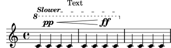
Observe que algunos de estos objetos, concretamente los números de
compás, las indicaciones metronómicas y las letras de ensayo, se
alojan de forma predeterminada dentro del contexto Score;
así pues, debe asegurarse de que utiliza el contexto adecuado
cuando se sobreescriben sus propiedades.
De forma predeterminada, las ligaduras de expresión están
clasificadas como objetos dentro-del-pentagrama, pero con
frecuencia aparecen encima del pentagrama si las notas que une son
muy agudas. Ello puede empujar a una posición muy elevada a los
objetos fuera-del-pentagrama como las articulaciones, pues la
ligadura se colocará en primer lugar. La propiedad
avoid-slur de la articulación se puede establecer al valor
'inside (por dentro) para llevarla al interior de la
ligadura, pero la propiedad avoid-slur es efectiva
solamente si la prioridad outside-staff-priority está
también ajustada al valor #f. De forma alternativa, la
prioridad outside-staff-priority de la ligadura se puede
fijar en un valor numérico para hacer que se sitúe en línea con
otros objetos fuera del pentagrama de acuerdo con este valor. He
aquí un ejemplo que muestra el efecto de los dos métodos:
\relative c'' { c4( c^\markup { \tiny \sharp } d4.) c8 | c4( \once \override TextScript.avoid-slur = #'inside \once \override TextScript.outside-staff-priority = ##f c4^\markup { \tiny \sharp } d4.) c8 | \once \override Slur.outside-staff-priority = 500 c4( c^\markup { \tiny \sharp } d4.) c8 | }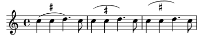
Los cambios en outside-staff-priority también se pueden
emplear para controlar la situación vertical de los objetos
individuales, aunque los resultados pueden no siempre ser
deseables. Suponga que quiere que “Text3” se sitúe por encima
de “Text4” en el ejemplo bajo el epígrafe Comportamiento
Automático de más arriba (see Comportamiento automático).
Todo lo que debemos hacer es localizar la prioridad de
TextScript en el RFI o en las tablas de arriba, y aumentar
la prioridad de “Text3” hasta un valor superior:
c''2^"Text1" c''2^"Text2" | \once \override TextScript.outside-staff-priority = 500 c''2^"Text3" c''2^"Text4" |![[image of music]](d6/lily-9d0cf810.png)
Esto, ciertamente, eleva a “Text3” por encima de “Text4”
pero también lo eleva por encima de “Text2”, y “Text4” ahora
se desploma hacia abajo. Quizá no sea tan buena idea. ¿Y si lo
que realmente queremos hacer es posicionar todas las anotaciones a
la misma distancia por encima del pentagrama? Para hacerlo, vamos
a necesitar claramente espaciar las notas en sentido horizontal
para hacer sitio para el texto. Esto se hace empleando la
instrucción \textLengthOn.
La instrucción \textLengthOn
De forma predeterminada, el texto producido mediante marcado no
ocupa ningún espacio horizontal en cuanto se refiere a la
disposición de la música. La instrucción \textLengthOn
modifica este comportamiento, ocasionando que las notas resulten
tan espaciadas como sea necesario para acomodar el texto:
\textLengthOn % Cause notes to space out to accommodate text c''2^"Text1" c''2^"Text2" | c''2^"Text3" c''2^"Text4" |![[image of music]](e4/lily-46c70d88.png)
La instrucción para volver al comportamiento predeterminado es
\textLengthOff. De forma alternativa, se puede usar
\once con \textLengthOn si el efecto se ha de
limitar a un solo momento musical. El comportamiento de espaciado
correspondiente para las llamadas de ensayo y las indicaciones de
tempo se controla independientemente con las instrucciones
\markLengthOn y \markLengthOff.
El texto de marcado también evita las notas que se proyectan por
encima del pentagrama. Si esto no es lo que deseamos, el
desplazamiento automático hacia arriba se puede desactivar
mediante el establecimiento de la prioridad a #f. He aquí
un ejemplo que muestra cómo el texto de marcado interactúa con
tales notas.
\relative { % This markup is short enough to fit without collision c''2^"Tex" c'' | R1 | % This is too long to fit, so it is displaced upwards c,,2^"Text" c'' | R1 | % Turn off collision avoidance \once \override TextScript.outside-staff-priority = ##f c,,2^"Long Text " c'' | R1 | % Turn off collision avoidance \once \override TextScript.outside-staff-priority = ##f \textLengthOn % and turn on textLengthOn c,,2^"Long Text " % Spaces at end are honored c''2 | }![[image of music]](f0/lily-1a503db0.png)
| [ << Trucar la salida ] | [Top][Contents][Index] | [ Plantillas >> ] |
[ < La instrucción \textLengthOn ] | [ Up: Objetos fuera del pentagrama ] | [ Escalado de un «Grob» > ] |
Posicionamiento de los matices dinámicos
Las indicaciones de matiz dinámico normalmente se colocarán por
debajo del pentagrama, pero se pueden posicionar por encima con la
instrucción \dynamicUp. Se situarán verticalmente respecto
a la nota a la que van adosadas, y flotarán por debajo (o por
encima) de todos los objetos dentro-del-pentagrama tales como
ligaduras de fraseo y números de compás. Esto puede ofrecer
resultados bastante aceptables, como muestra este ejemplo:
\relative { \clef "bass" \key aes \major \time 9/8 \dynamicUp bes4.~\f\< \( bes4 bes8 des4\ff\> c16 bes\! | ees,2.~\)\mf ees4 r8 | }![[image of music]](fa/lily-23d86eef.png)
Sin embargo, si las notas y sus indicaciones dinámicas adosadas están muy cerca, la colocación automática evitará las colisiones desplazando las marcas dinámicas posteriores más lejos, aunque este puede no ser el lugar óptimo, como muestra el siguiente ejemplo más bien artificial:
\dynamicUp \relative { a'4\f b\mf a\mp b\p }![[image of music]](36/lily-c4a69436.png)
Si se presentara una situación similar en música ‘real’, podría
ser preferible espaciar las notas un poco más entre sí, de forma
que todas las marcas dinámicas puedan caber a la misma distancia
vertical desde el pentagrama. Hemos sido capaces de hacer esto
para el texto de marcado utilizando la instrucción
\textLengthOn, pero no existe una instrucción equivalente
para las indicaciones de matiz dinámico. Por tanto, tendremos que
averiguar cómo hacerlo utilizando instrucciones \override.
| [ << Trucar la salida ] | [Top][Contents][Index] | [ Plantillas >> ] |
| [ < Posicionamiento de los matices dinámicos ] | [ Up: Objetos fuera del pentagrama ] | [ Espaciado vertical > ] |
Escalado de un «Grob»
In general, all grobs support the grob-interface, which
contains, among other things, the properties X-offset,
Y-offset, X-extent, and Y-extent
(see Desplazamientos y alineaciones for a thorough introduction).
De forma predeterminada, los objetos fuera-del-pentagrama reciben
una anchura (o sea, una extensión horizontal) de cero, de manera
que pueden solaparse en la dirección horizontal. Esto se hace,
por convención, posicionando el borde izquierdo del grob en el
infinito y el derecho en menos infinito, estableciendo el valor de
extra-spacing-width a '(+inf.0 . -inf.0). Así,
para asegurar que los grobs no se superponen en la dirección
horizontal tendremos que sobreescribir este valor de
extra-spacing-width para darles un poco de espacio
adicional. Las unidades son el espacio entre dos líneas del
pentagrama, de forma que debería bastar mover el límite izquierdo
media unidad a la izquierda y el límite derecho media unidad a la
derecha:
\override DynamicText.extra-spacing-width = #'(-0.5 . 0.5)
Veamos si funciona en nuestro ejemplo anterior:
\dynamicUp % Extend width by 1 staff space \override DynamicText.extra-spacing-width = #'(-0.5 . 0.5) \relative { a'4\f b\mf a\mp b\p }![[image of music]](b7/lily-bb1c9e58.png)
Esto tiene un mejor aspecto, pero quizá habríamos preferido que
las indicaciones de dinámica estuvieran alineadas sobre la misma
línea de base en lugar de ir hacia arriba y hacia abajo con las
notas. La propiedad que lo hace es staff-padding (relleno
de pentagrama), que se estudia en la sección dedicada a las
colisiones (véase Colisiones de objetos).
| [ << Trucar la salida ] | [Top][Contents][Index] | [ Plantillas >> ] |
| [ < Escalado de un «Grob» ] | [ Up: Trucar la salida ] | [ Colisiones de objetos > ] |
5.6 Espaciado vertical
Por lo general, el espaciado vertical de los objetos musicales que LilyPond hace es bastante bueno. Veamos cómo se comporta con una canción sencilla, con dos voces y acompañamiento de piano:
![[image of music]](1e/lily-62bf5eb1.png)
No hay ningún problema con el espaciado vertical predeterminado. Sin embargo, supongamos que estamos trabajando con un editor que tiene ciertos requisitos específicos para el espaciado vertical de los pentagramas y la letra: quiere que la letra está más separada de las notas, que el acompañamiento de piano esté más separado de la línea vocal y que los dos pentagramas de piano estén más juntos entre sí. Comenzaremos con la letra.
La letra se encuentra en el interior de un sistem, y por tanto las
instrucciones para aplicarle el espaciado estarán en
Espaciado vertical flexible dentro de los sistemas. Allí se dice
que el texo son líneas del tipo ‘no-pauta’ y por tanto la
instrucción para cambiar su espaciado hará referencia a una
propiedad con la palabra nonstaff en el nombre. La
separación a partir de la línea inferior viene indicada por la
palabra unrelatedstaff. Las partes vocales pertenecen a un
grupo vertical VerticalAxisGroup, por lo que tenemos que
ajustar sus propiedades. Probémoslo y veamos si funciona.
<< \new ChoirStaff << \new Staff { \new Voice = "music" { b'2 c' c' c' } } \new Lyrics \with { \override VerticalAxisGroup .nonstaff-relatedstaff-spacing.padding = 5 \override VerticalAxisGroup .nonstaff-unrelatedstaff-spacing.padding = 5 } \lyricsto "music" { Here are some lyrics } \new Staff { \clef bass e'2 f e c } >> \new PianoStaff << \new Staff { g''2 c'' c'' a'' } \new Staff { \clef bass e2 f c e } >> >>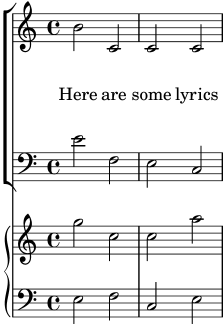
Bien: sí, funciona, pero quizá demasiado bien. Cuando
establecemos el padding (relleno) a 5, LilyPond añade
5 espacios de pentagrama a la distancia entre los objetos, lo
que es excesivo para nosotros en este caso. Usaremos en su lugar
un valor de 2.
A continuación, desplazaremos la música de piano para separarla de
las partes vocales. La música vocal es un ChoirStaff (un
contexto de sistema coral), y por tanto tenemos que aumentar el
espaciado entre ese grupo de pentagramas y el sistema de piano que
se encuentra debajo. Lo haremos cambiando la sub-propiedad
basic-distance (distancia básica) del grob
StaffGrouper del staffgroup-staff-spacing.
<< \new ChoirStaff \with { \override StaffGrouper .staffgroup-staff-spacing.basic-distance = 15 } << \new Staff { \new Voice = "music" { b'2 c' c' c' } } \new Lyrics \with { \override VerticalAxisGroup .nonstaff-relatedstaff-spacing.padding = 2 \override VerticalAxisGroup .nonstaff-unrelatedstaff-spacing.padding = 2 } \lyricsto "music" { Here are some lyrics } \new Staff { \clef bass e'2 f e c } >> \new PianoStaff << \new Staff { g''2 c'' c'' a'' } \new Staff { \clef bass e2 f c e } >> >>![[image of music]](83/lily-840b24ea.png)
Muy bien. Ahora, solo nos queda el último requisito de hacer que
los pentagramas de piano estén más juntos. Para conseguirlo, de
nuevo alteramos las propiedades del grob StaffGrouper, pero
esta vez vamos a reducir tanto la basic-distance (distancia
básica) como el padding (relleno). Podemos hacerlo como se
muestra a continuación.
<< \new ChoirStaff \with { \override StaffGrouper .staffgroup-staff-spacing.basic-distance = 15 } << \new Staff { \new Voice = "music" { b'2 c' c' c' } } \new Lyrics \with { \override VerticalAxisGroup .nonstaff-relatedstaff-spacing.padding = 2 \override VerticalAxisGroup .nonstaff-unrelatedstaff-spacing.padding = 2 } \lyricsto "music" { Here are some lyrics } \new Staff { \clef bass e'2 f e c } >> \new PianoStaff \with { \override StaffGrouper.staff-staff-spacing = #'((basic-distance . 0) (padding . 0)) } << \new Staff { g''2 c'' c'' a'' } \new Staff { \clef bass e2 f c e } >> >>![[image of music]](b1/lily-788ac71a.png)
Con esto los hemos colocado muy juntos entre sí (pero es lo que el
editor quería). Se podrían haber separado más alterando el
relleno, padding, o la distancia básica,
basic-distance, si quisiéramos.
Hay muchas formas de alterar el espaciado vertical. Un punto
clave que debemos recordar es que el espaciado entre objetos
dentro de un StaffGroup (como los grupos GrandStaff
o PianoStaff) se controla con las variables de espaciado
del StaffGrouper. El espaciado de los pentagramas no
agrupados (como Lyrics y Staff) se controla con las
variables del VerticalAxisGroup. Para ver más detalles,
consulte Variables de espaciado de paper verticales flexibles y
Espaciado vertical flexible dentro de los sistemas.
| [ << Trucar la salida ] | [Top][Contents][Index] | [ Plantillas >> ] |
| [ < Espaciado vertical ] | [ Up: Trucar la salida ] | [ Mover objetos > ] |
5.7 Colisiones de objetos
Los consejos y trucos que se han cubierto en esta sección son aplicaciones y ampliaciones de los capítulos previos de este mismo manual. Concretamente, debería manejarse bien con los conceptos de dimensiones, desplazamientos y alineaciones, see Desplazamientos y alineaciones.
| 5.7.1 Mover objetos | ||
| 5.7.2 Arreglar notación con superposiciones | ||
| 5.7.3 Ejemplos reales de música |
| [ << Trucar la salida ] | [Top][Contents][Index] | [ Plantillas >> ] |
| [ < Colisiones de objetos ] | [ Up: Colisiones de objetos ] | [ Arreglar notación con superposiciones > ] |
5.7.1 Mover objetos
Aunque pueda sorprenderle, LilyPond no es perfecto. Ciertos elementos de notación se pueden superponer, lo que es una lástima, pero en realidad es bastante poco frecuente. Normalmente la necesidad de mover objetos es por claridad o razones estéticas: el aspecto es mejor con un poco más o un poco menos de espacio de separación.
Existen tres enfoques principales que llevan a la resolución de superposiciones en la notación. Se deben considerar en el siguiente orden:
- La dirección de uno de los objetos que se superponen se puede cambiar usando las instrucciones predefinidas que se vieron anteriormente para los objetos dentro-del-pentagrama (véase Objetos interiores al pentagrama). Se pueden recolocar fácilmente las plicas, ligaduras de expresión y de unión, barras de corchea, indicaciones dinámicas, texto y grupos de valoración especial de esta forma. La limitación es que solo tiene la posibilidad de elegir entre dos posiciones, y podría ser que ninguna de ellas sea la adecuada.
- Las propiedades del objeto, que LilyPond usa cuando está
colocando los objetos de presentación, se pueden modificar usando
la instrucción de sobreescritura
\override. Las ventadas de hacer cambios a este tipo de propiedad son: a) que algún otro objeto se moverá automáticamente si es necesario, para dejarle sitio, y b) una única sobreescritura se puede aplicar a todas las instancias del mismo tipo de objeto. Entre tales propiedades se encuentran:-
direction(dirección)Ya se ha estudiado con cierto detalle: see Objetos interiores al pentagrama.
-
padding(relleno),right-padding(relleno por la derecha),staff-padding(relleno de pentagrama)Según un objeto se está colocando, el valor de su propiedad de relleno
paddingespecifica el espacio intermedio que se debe dejar entre él mismo y el límite más próximo del objeto contra el que se está colocando. Observe que es el valor depaddingdel objeto que se está colocando el que se usa; el valor depaddingdel objeto que ya está colocado se ignora. Los espacios intermedios especificados mediantepaddingse pueden aplicar a todos los objetos que contemplan la interfazside-position-interface.En lugar de con
padding, la colocación de los grupos de alteraciones se controla conright-padding. Esta propiedad se encuentra en el grobAccidentalPlacementque, observe, vive dentro del contexto de Staff. Durante el proceso tipográfico, las cabezas de las notas se componen tipográficamente en primer lugar, y después las alteraciones, si existen, se añaden a la izquierda de las cabezas utilizando la propiedad de relleno por la derecharight-paddingpara determinar la separación entre la alteración y la cabeza, y de las alteraciones entre sí. Así pues, solo la propiedad de relleno por la derecharight-paddingdel objetoAccidentalPlacementtiene efecto sobre la colocación de las alteraciones.La propiedad
staff-paddingestá estrechamente relacionada con la propiedadpadding:paddingcontrola la separación mínima entre cualquier objeto que contemple la interfazside-position-interfacey el objeto más cercano (generalmente la nota o las líneas del pentagrama);staff-paddingse aplica solo a los objetos que siempre se sitúan fuera del pentagrama: controla la separación mínima entre dicho objeto y el pentagrama. Observe questaff-paddingno tiene ningún efecto sobre objetos que se posicionan respecto a la nota en vez de hacerlo respecto al pentagrama, incluso aunque puede ser sobreescrito sin error por tales objetos: simplemente se ignora.Para descubrir qué propiedad de relleno se necesita para el objeto que quiere recolocar, debe volver al manual de RFI y buscar las propiedades del objeto. Tenga cuidado porque las propiedades de relleno podrían no estar en el objeto más obvio, así que busque en los objetos que puedan tener alguna relación con él.
Todos los valores de relleno se miden en espacios del pentagrama. Para la mayor parte de los objetos el valor se establece de forma predeterminada en aproximadamente 1.0 o menos (varía con cada objeto). Se puede sobreescribir si se necesita una separación intermedia mayor (o menor).
-
self-alignment-X(auto-alineamiento en el eje X)Use esta propiedad para alinear el objeto a la izquierda, a la derecha, o centrarlo con respecto al punto de referencia del objeto «padre». Se puede usar con todos los objetos que contemplan la interfaz
self-alignment-interface. En general son objetos que contienen texto. Los valores sonLEFT,RIGHToCENTER. De forma alternativa se puede especificar un valor numérico entre-1y+1, donde-1es alineado por la izquierda,+1es alineado por la derecha, y los números intermedios mueven el texto progresivamente desde alineado por la izquierda hasta alineado por la derecha. Se pueden especificar valores numéricos mayores de1para mover el texto incluso más lejos hacia la izquierda, o menos de-1para alejarlo más hacia la derecha. Un cambio en1en el valor corresponde a un movimiento de la mitad de la longitud total del propio texto. -
extra-spacing-width(anchura de separación adicional)Esta propiedad está disponible para todos los objetos que contemplan la interfaz
item-interface. Toma dos números, el primero se suma al límite izquierdo y el segundo se suma al límite derecho. Los números negativos desplazan el límite a la izquierda y los positivos a la derecha, por lo que para ensanchar un objeto el primer número debe ser negativo y el segundo positivo. Observe que no todos los objetos ostentan los dos números. Por ejemplo, el objetoAccidental(alteración) solo toma nota del primer número (el borde izquierdo). -
staff-position(posición de pentagrama)staff-positiones una propiedad de la interfazstaff-symbol-referencer-interface, que está contemplado por los objetos que se colocan con relación al pentagrama. Especifica la posición vertical del objeto con relación a la tercera línea del pentagrama en medios espacios de pentagrama. Es útil en la resolución de colisiones entre objetos de presentación como silencios multi-compás, ligaduras de unión y notas en distintas voces. -
horizontal-shift(desplazamiento horizontal)Dentro de una voz, todas las notas que se producen en el mismo moemtno se agrupan en una columna de notas, y se crea un objeto
NoteColumnpara controlar el posicionamiento horizonal de dicho grupo de notas (véase “Columnas de nota” en Voces explícitas). Si y solo si dos o más columnas de nota dentro de un solo contexto de pauta (Staff), las dos con las plicas en la misma dirección, aparecen en el mismo momento musical, los valores de sus propiedadeshorizontal-shiftse usan para asignarles una puntuación y las columnas con puntuaciones más altas se desplazan progresivamente para evitar las colisiones entre las cabezas de las notas. Esta propiedad se establece con las instrucciones\voiceXXXy se pueden sobreescribir directamente con una instrucción\overrideo, de forma más común con las instrucciones\shiftOn. Observe que esta propiedad se usa para calificar las columnas de nota o para aplicar desplazamientos: no especifica la magnitud del desplazamiento, que se va incrementando progresivamente en pasos basándolse en la anchura de las cabezas de nota para cada puntuación. Los pasos son normalmente de la mitad de la anchura de una cabeza de nota, pero puede ser el ancho completo de la cabeza de una nota cuando está implicado un grupo de notas muy apretadas entre sí. -
force-hshift(forzar desplazamiento horizontal)La propiedad
force-hshiftforma parte de los grobsNoteColumn(realmente de la interfaznote-column-interface). Modificarlo permite mover una columna de notas en situaciones donde las columnas de notas se superponen. Observe que no tiene efecto sobre las columnas de nota que no se superponen. Se especifica en unidades adecuadas a una columna de notas, por ejemplo la anchura de la cabeza de la nota de la primera voz. Se debe usar en situaciones complejas donde las instrucciones\shiftOnnormales (see Voces explícitas) no resuelven el conflicto entre las notas de forma satisfactoria. Es preferible a la propiedadextra-offsetpara este propósito porque no hay necesidad de averiguar la distancia en espacios de pentagrama, y mover las notas dentro o fuera de unaNoteColumnafecta a otras acciones como a la fusión entre cabezas de nota.
-
- Finalmente, cuando todo lo demás falla, los objetos se pueden
reposicionar manualmente con relación a la tercera línea del
pentagrama verticalmente, o desplazándolas una cierta distancia a
una nueva posición. Las desventajas son que los valores correctos
para el reposicionamiento se deben adivinar, a menudo por ensayo y
error, para cada objeto individual y, puesto que el movimiento se
hace después de que LilyPond ha colocado todos los demás objetos
es usuario es responsable de evitar cualquier colisión que pudiera
producirse. Sin embargo la dificultar principal con este enfoque
es que los valores de reposicionado podrían tener que ser vueltos
a calcular si la música se modifica más tarde. Las propiedades
que se pueden usar para este tipo de posicionamiento manual son
como sigue.
-
extra-offset(desplazamiento adicional)Esta propiedad se aplica a cualquier objeto de presentación que contemple el
grob-interface. Toma una pareja de números que especifican el desplazamiento adicional en las direcciones horizontal y vertical. Los números negativos mueven el objeto a la izquierda o hacia abajo. Las unidades son espacios de pentagrama. El desplazamiento adicional se hace después de que la composición tipográfica de los objetos ha terminado, así que un objeto puede ser reposicionado a cualquier lugar sin afectar a ninguna otra cosa. -
positions(posiciones)Ésta es de la mayor utilidad para ajustar manualmente la inclinación y la altura de las barras de corchea, ligaduras de expresión y corchetes de grupos de valoración especial. Toma una pareja de números que dan la posición de los extremos izquierdo y derecho de la barra, ligadura, etc. con relación a la tercera línea del pentagrama. Las unidades son espacios de pentagrama. Observe, sin embargo, que las ligaduras de expresión y de fraseo no se pueden reposicionar en cantidades arbitrariamente grandes. LilyPond en primer lugar genera una lista de posiciones posibles para la ligadura y de forma predeterminada encuentra la ligadura que tiene “mejor aspecto”. Si la propiedad
positionsse ha sobreescrito, la ligadura que está más cerca de las posiciones que se han solicitado, se selecciona de la lista.
-
Un objeto en particular podría no tener todas estas propiedades. Es necesario ir al manual RFI para buscar qué propiedades se encuentran disponibles para el objeto en cuestión.
Aquí presentamos una lista de los objetos que es más probable que estén implicados en colisiones, con el nombre del objeto que habría que buscar en el RFI para descubrir qué propiedades se deben usar para moverlos.
Tipo de objeto Nombre del objeto articulaciones (p.ej. ‘->’) Scriptbarras Beamdinámica (verticalmente) DynamicLineSpannerdinámica (horizontalmente) DynamicTextdigitaciones FingeringLetras o números de ensayo RehearsalMarkmarcas de texto TextMarkligaduras de expresión Slurtexto (p.ej. ‘^"texto"’) TextScriptligaduras de unión Tiegrupos de valoración especial TupletBracket
| [ << Trucar la salida ] | [Top][Contents][Index] | [ Plantillas >> ] |
| [ < Mover objetos ] | [ Up: Colisiones de objetos ] | [ La propiedad padding (relleno) > ] |
5.7.2 Arreglar notación con superposiciones
Veamos ahora cómo pueden ser de ayuda las propiedades que hemos visto en la sección anterior, para resolver problemas de notación que se superpone.
La propiedad padding (relleno)
La propiedad padding se puede ajustar para aumentar (o
disminuir) la distancia entre símbolos impresos encima o debajo de
las notas.
c'2\fermata \override Script.padding = 3 b2\fermata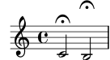
% This will not work, see below \override MetronomeMark.padding = 3 \tempo 4 = 120 c'1 | % This works \override Score.MetronomeMark.padding = 3 \tempo 4 = 80 d'1 |![[image of music]](56/lily-a1f724cb.png)
Observe en el segundo ejemplo la gran importancia que tiene saber
qué contexto maneja un determinado objeto. Puesto que el grob
MetronomeMark se maneja dentro del contexto Score,
los cambios de propiedades en el contexto Voice pasarán
inadvertidos. Para ver más detalles, consulte
Modificar las propiedades.
Si la propiedad de relleno padding de un objeto se
incrementa cuando dicho objeto se encuentra en una pila de objetos
que se están colocando de acuerdo a su prioridad
outside-staff-priority, entonces ese objeto se moverá, y
también todos los que están por fuera de él.
La propiedad right-padding (relleno por la derecha)
La propiedad right-padding afecta al espaciado entre la
alteración y la nota a que se aplica.5 Normalmente no es necesaria, pero puede ser de ayuda,
por ejemplo, en situaciones en que el espaciado horizontal está
muy apretado.
\relative c' { cis8[ dis eis fis gis ais bis cis] } \relative c' { % move accents nearer to note heads \override Score.AccidentalPlacement.right-padding = -0.1 cis8[ dis eis fis gis ais bis cis] }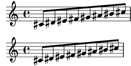
La propiedad staff-padding (relleno de pentagrama)
staff-padding se puede usar para alinear objetos como
matices dinámicos a lo largo de una línea de base a una distancia
fija del pentagrama, siempre que no exista ningún otro elemento de
notación que fuerce una distancia mayor al pentagrama. No es una
propiedad de DynamicText sino de DynamicLineSpanner.
Esto es así porque la línea de base debe aplicarse por igual a
todas las dinámicas, entre ellas las que se han creado
como objetos de extensión. Así que ésta es la forma de alinear
las indicaciones de matiz en el ejemplo de la sección anterior:
\override DynamicLineSpanner.staff-padding = 3 \relative { a'4\f b\mf a\p b\mp }![[image of music]](63/lily-8f9fbfc6.png)
La propiedad self-alignment-X (auto-alineación en X)
El ejemplo siguiente muestra cómo ajustar la posición de un objeto de digitación de cuerda en relación a la plica de una nota mediante el alineamiento del límite derecho con el punto de referencia de la nota «padre»:
\voiceOne <a''\2> \once \override StringNumber.self-alignment-X = #RIGHT <a''\2>![[image of music]](a0/lily-b702bea9.png)
La propiedad staff-position (posición en el pentagrama)
Los silencios multi-compás en una voz pueden chocar con las notas en otra voz. Puesto que estos silencios se tipografían centrados entre las barras de compás se necesitaría bastante esfuerzo para que LilyPond averiguara qué otras notas podrían chocar con él, ya que actualmente todo el manejo de colisiones entre notas y silencios se hace solamente para notas y silencios que ocurren al mismo tiempo. He aquí un ejemplo de colisión de este tipo:
<< \relative { c'4 c c c } \\ { R1 } >>![[image of music]](41/lily-10dffed3.png)
La mejor solución aquí es mover el silencio multi-compás hacia
abajo, pues el silencio está en la voz inferior. El ajuste
predeterminado para \voiceTwo (es decir, en la segunda voz
de una construcción <<{…} \\ {…}>>) es que
staff-position tenga el valor -6 para
MultiMeasureRest, así que tenemos que bajarlo, digamos,
cuatro semi-espacios de pentagrama, al valor -10.
<< \relative { c'4 c c c } \\ \override MultiMeasureRest.staff-position = -10 { R1 } >>![[image of music]](c4/lily-f6a5b8f7.png)
Esto es mejor que utilizar, por ejemplo, extra-offset,
porque la línea adicional por encima del silencio se inserta
automáticamente.
Observe que hay una peculiaridad con esta propiedad si se aplica a
un grob Tie (ligadura de unión): LilyPond distingue entre
números exactos (como enteros o fracciones) y números
inexactos (como números que tienen decimales). Consulte la
sección ‘Edición manual de las ligaduras’ en
Ligaduras de unión para ver la diferencia
entre valores exactos e inexactos.
La propiedad extra-offset (desplazamiento adicional)
La propiedad extra-offset da un completo control sobre el
posicionamiento de un objeto tanto vertical como horizontalmente.
En el ejemplo siguiente, la segunda digitación se desplaza ligeramente a la izquierda, y 1.8 espacios de pentagrama hacia abajo:
f'4-5 \once \override Fingering.extra-offset = #'(-0.3 . -1.8) f'4-5![[image of music]](45/lily-621381cc.png)
La propiedad positions (posiciones)
La propiedad positions permite controlar manualmente la
posición vertical y de ahí también la inclinación de los
tresillos, ligaduras de expresión y de fraseo, y barras de
corchea.
He aquí un ejemplo en el que las ligaduras de fraseo y de expresión chocan entre sí:
\relative { a'8 \( ( a'16 ) a \) }![[image of music]](5d/lily-580a2be1.png)
Una posibilidad sería mover los dos extremos de la ligadura de fraseo hacia arriba. Podemos tratar de establecer el extremo izquierdo a 2.5 espacios de pentagrama por encima de la tercera línea y el extremo derecho a 4.5 también hacia arriba, y LilyPond seleccionaría la ligadura de fraseo de entre las candidatas que ha encontrado con sus extremos más cercanos a éstos:
\once \override PhrasingSlur.positions = #'(2.5 . 4.5) a'8 \( ( a''16 ) a'' \)![[image of music]](43/lily-4e8e7eb5.png)
Esto supone una mejora, pero ¿por qué no bajar un poco el extremo
derecho de la ligadura de expresión? Si lo probamos, veremos que
no se puede hacer así. Ello es a causa de que no existen
ligaduras de expresión candidatas que estén más bajas que la que
ya se ha seleccionado, y en este caso la propiedad
positions no tiene ningún efecto. Sin embargo, las
ligaduras de unión, expresión y fraseo se pueden colocar y
conformar de manera muy exacta cuando se necesita. Para aprender
la manera de hacerlo, consulte Modificación de ligaduras de unión y de expresión.
Presentamos otro ejemplo. Vemos que la barra choca con las ligaduras:
{ \time 4/2 << \relative { c'1~ 2. e8 f } \\ \relative { e''8 e e e e e e e f2 g } >> << \relative { c'1~ 2. e8 f } \\ \relative { e''8 e e e e e e e f2 g } >> }![[image of music]](89/lily-343d936d.png)
Esto se puede resolver manualmente elevando los dos extremos de la barra desde su posición a 1.81 espacios de pentagrama bajo la línea central hasta, digamos, 1 espacio:
{ \time 4/2 << \relative { c'1~ 2. e8 f } \\ \relative { \override Beam.positions = #'(-1 . -1) e''8 e e e e e e e f2 g } >> << \relative { c'1~ 2. e8 f } \\ \relative { e''8 e e e e e e e f2 g \revert Beam.positions } >> }![[image of music]](c8/lily-64873957.png)
Observe que la sobreescritura sigue aplicándose en la segunda voz del segundo compás de corcheas, pero no a ninguna de las barras de la primera voz, ni siquiera a las que están en el segundo compás, que es posterior. Tan pronto como la sobreescritura no pueda tener ningún efecto, debería ser revertida como se muestra.
| [ << Trucar la salida ] | [Top][Contents][Index] | [ Plantillas >> ] |
[ < La propiedad positions (posiciones) ] | [ Up: Arreglar notación con superposiciones ] | [ Ejemplos reales de música > ] |
La propiedad force-hshift (forzar desplazamiento horizontal)
Ahora podremos ver cómo aplicar las correcciones finales al ejemplo de Chopin que presentamos al final de Oigo voces, que dejamos con este aspecto:
\new Staff \relative { \key aes \major << { c''2 aes4. bes8 } \\ { <ees, c>2 des } \\ \\ { aes'2 f4 fes } >> | <c ees aes c>1 | }![[image of music]](47/lily-66aa6df7.png)
Es necesario que la nota interior del primer acorde (el La bemol
de la cuarta voz) no se aparte de la columna vertical de la nota
aguda, por lo que usamos \shiftOff.
En el segundo acorde preferimos que el Fa esté alineado con el La
bemol y que la nota grave se coloque ligeramente a la derecha para
evitar una colisión de las plicas. Lo conseguimos ajustando el
valor de force-hshift en la NoteColumn del Re bemol
grave para moverlo a la derecha medio espacio de pentagrama, y
fijando force-hshift para el Fa al valor cero. Observe que
usamos \once para evitar que los ajustes se propaguen más
allá del momento musical inmediato, aunque en este pequeño ejemplo
podrían omitirse el \once y el segundo \override de
la cuarta voz. Ello no supondría una buena práctica.
Presentamos a continuación el resultado final:
\new Staff \relative { \key aes \major << { c''2 aes4. bes8 } \\ { <ees, c>2 \once \override NoteColumn.force-hshift = 0.5 des } \\ \\ { \once \shiftOff aes'2 \once \shiftOff f4 fes } >> | <c ees aes c>1 | }![[image of music]](b9/lily-cd77d5f9.png)
| [ << Trucar la salida ] | [Top][Contents][Index] | [ Plantillas >> ] |
[ < La propiedad force-hshift (forzar desplazamiento horizontal) ] | [ Up: Colisiones de objetos ] | [ Trucajes adicionales > ] |
5.7.3 Ejemplos reales de música
Finalizaremos esta sección sobre los trucos mostrando los pasos que se deben tomar para tratar con un ejemplo complicado que necesita varios ajustes para producir el resultado deseado. El ejemplo se ha escogido deliberadamente para ilustrar el uso de la Referencia de la Notación para resolver problemas de notación poco comunes. No es representativo del proceso de grabado más usual, por lo que ¡le recomendamos que no deje que estas dificultades le desanimen! Afortunadamente, las dificultades como éstas no son muy comunes.
El ejemplo está extraído de la Primera Balada de Chopin, Op. 23, compases 6 al 9, la transición entre el ‘Lento’ inicial y el ‘Moderato’. Presentamos en primer lugar el aspecto que queremos que tenga el resultado, pero para evitar complicar demasiado el ejemplo hemos quitado las indicaciones dinámicas, las digitaciones y el pedal, y no vamos a intentar trucar la apariencia tanto como sería posible hacerlo.
![[image of music]](54/lily-151db42a.png)
Observamos en primer lugar que la parte de la mano derecha del tercer compás requiere cuatro voces. Son las cinco corcheas unidas por una barra, la nota Do ligada, el Re blanca que se funde con el Re corchea, y el Fa sostenido negra con puntillo, que también está fundida con la corchea de su misma altura. Todo lo demás está en una sola voz, así que lo más fácil es introducir estas tres voces adicionales, en el momento en que se necesiten y de forma temporal. Si ha olvidado cómo hacerlo, lea las secciones Oigo voces y Voces explícitas. Aquí tomamos la decisión de utilizar voces instanciadas explícitamente para el pasaje polifónico, dado que LilyPond es más probable que pueda evitar las colisiones si todas las voces se instancian explícitamente de esta forma.
Vamos a comenzar introduciendo las notas como dos variables y disponiendo la estructura de pentagramas en un bloque Score, y veremos qué produce LilyPond de forma predeterminada:
rhMusic = \relative { \new Voice { r2 c''4. g8 | bes1~ | \time 6/4 bes2. r8 % Start polyphonic section of four voices << { c,8 d fis bes a } % continuation of main voice \new Voice { \voiceTwo c,8~ 2 } \new Voice { \voiceThree s8 d2 } \new Voice { \voiceFour s4 fis4. } >> | g2. % continuation of main voice } } lhMusic = \relative { r2 <c' g ees>2 | <d g, d>1 | r2. d,,4 r4 r | r4 } \score { \new PianoStaff << \new Staff = "RH" << \key g \minor \rhMusic >> \new Staff = "LH" << \key g \minor \clef "bass" \lhMusic >> >> }![[image of music]](5a/lily-b62264bc.png)
Todas las notas son correctas, pero el aspecto está lejos de ser satisfactorio. La ligadura de unión choca con el cambio de compás, ciertas notas no se funden correctamente, y faltan algunos elementos de notación. En primer lugar trataremos con lo más fácil. Podemos añadir fácilmente la ligadura de expresión de la mano izquierda y la ligadura de fraseo de la mano derecha, pues todo ello se estudió en el Tutorial. Al hacerlo así obtenemos:
rhMusic = \relative { \new Voice { r2 c''4.\( g8 | bes1~ | \time 6/4 bes2. r8 % Start polyphonic section of four voices << { c,8 d fis bes a } % continuation of main voice \new Voice { \voiceTwo c,8~ 2 } \new Voice { \voiceThree s8 d2 } \new Voice { \voiceFour s4 fis4. } >> | g2.\) % continuation of main voice } } lhMusic = \relative { r2 <c' g ees>2( | <d g, d>1) | r2. d,,4 r4 r | r4 } \score { \new PianoStaff << \new Staff = "RH" << \key g \minor \rhMusic >> \new Staff = "LH" << \key g \minor \clef "bass" \lhMusic >> >> }![[image of music]](55/lily-2194611a.png)
El primer compás ahora es correcto. El segundo compás contiene un
arpegio y acaba en una doble barra. ¿Cómo los hacemos, pues no
han sido mencionados en este Manual de Aprendizaje? Aquí es donde
tenemos que volver e la Referencia de la Notación. Buscando la
palabra ‘arpegio’ y ‘línea divisoria’ en el índice nos muestra
rápidamente que un arpegio se hace añadiendo \arpeggio a un
acorde, y la doble barra se produce por medio de la instrucción
\bar "||". Esto podemos hacerlo fácilmente. A
continuación tenemos que corregir la colisión entre la ligadura de
unión y la indicación de compás. Esto se hace mejor moviendo la
ligadura hacia arriba.6 Estudiamos cómo mover objetos anteriormente en
Mover objetos, donde dice que los objetos que están
situados de forma relativa al pentagrama se pueden mover
verticalmente sobreescribiendo su propiedad staff-position,
que se especifica en unidades de medio espacio de pentagrama
respecto de la línea central del pentagrama. Así pues, la
sobreescritura siguiente colocada justo antes de la primera nota
ligada subirá la ligadura 3.5 medios espacios de pentagrama por
encima de la línea central:
\once \override Tie.staff-position = 3.5
Con esto se completa el compás dos, dando como resultado:
rhMusic = \relative { \new Voice { r2 c''4.\( g8 | \once \override Tie.staff-position = 3.5 bes1~ | \bar "||" \time 6/4 bes2. r8 % Start polyphonic section of four voices << { c,8 d fis bes a } % continuation of main voice \new Voice { \voiceTwo c,8~ 2 } \new Voice { \voiceThree s8 d2 } \new Voice { \voiceFour s4 fis4. } >> | g2.\) % continuation of main voice } } lhMusic = \relative { r2 <c' g ees>2( | <d g, d>1)\arpeggio | r2. d,,4 r4 r | r4 } \score { \new PianoStaff << \new Staff = "RH" << \key g \minor \rhMusic >> \new Staff = "LH" << \key g \minor \clef "bass" \lhMusic >> >> }![[image of music]](96/lily-cf2e94e1.png)
Vayamos ahora al tercer compás y comienzo de la sección Moderato.
El tutorial nos enseñó cómo escribir una indicación de tempo
mediante la instrucción \tempo, por lo que añadir
“Moderato” es fácil. Pero ahora ¿cómo fundimos notas que están
en distintas voces? Aquí es donde debemos volver a buscar ayuda
en el manual de Referencia de la notación. Al buscar la palabra
“merge” (mezcla) en el índice de la Referencia de la notación
llegamos rápidamente a las instrucciones para mezclar notas con
distinta cabeza y con o sin puntillo, en Resolución de las colisiones. En nuestro ejemplo
tenemos que fusionar ambos tipos de nota en el transcurso de la
sección polifónica del compás 3; por tanto, en virtud de la
información que aparece en la Referencia de la Notación,
escribimos
\mergeDifferentlyHeadedOn \mergeDifferentlyDottedOn
al principio de la sección, y
\mergeDifferentlyHeadedOff \mergeDifferentlyDottedOff
al final, dando como resultado:
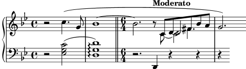
Estas sobreescrituras han fundido los dos Fa sostenido, pero no
los dos Re. ¿Por qué no? La respuesta está en la misma
sección de la Referencia de la Notación: las notas que se fusionan
deben tener las plicas en direcciones opuestas y dos notas no se
pueden fusionar bien si hay una tercera nota en la misma columna.
Aquí los dos Re tienen las plicas hacia arriba y hay una
tercera nota: el Do. Sabemos cómo cambiar la dirección de la
plica usando \stemDown, y la Referencia de la Notación
también explica cómo mover el Do: aplicar un desplazamiento
usando una de las instrucciones \shift. Pero ¿cuál?
El Do está en la voz dos que tiene desactivado el
desplazamiento, y los dos Re están en las voces uno y tres, que
tienen el desplazamiento desactivado y activado, respectivamente.
Por ello tenemos que desplazar el Do un nivel más todavía, usando
\shiftOnn para evitar que interfiera con los dos Re. Al
aplicar estos cambios obtenemos:
rhMusic = \relative { \new Voice { r2 c''4.\( g8 | \once \override Tie.staff-position = 3.5 bes1~ | \bar "||" \time 6/4 bes2.\tempo "Moderato" r8 \mergeDifferentlyHeadedOn \mergeDifferentlyDottedOn % Start polyphonic section of four voices << { c,8 d fis bes a } % continuation of main voice \new Voice { \voiceTwo % Move the c2 out of the main note column % so the merge will work c,8~ \shiftOnn c2 } \new Voice { \voiceThree % Stem on the d2 must be down to permit merging s8 \stemDown d2 } \new Voice { \voiceFour s4 fis4. } >> | \mergeDifferentlyHeadedOff \mergeDifferentlyDottedOff g2.\) % continuation of main voice } } lhMusic = \relative { r2 <c' g ees>2( | <d g, d>1)\arpeggio | r2. d,,4 r4 r | r4 } \score { \new PianoStaff << \new Staff = "RH" << \key g \minor \rhMusic >> \new Staff = "LH" << \key g \minor \clef "bass" \lhMusic >> >> }![[image of music]](9d/lily-e49869d1.png)
Ya casi está. Solamente quedan dos problemas: la plica hacia
abajo sobre el Re fusionado no tendría que estar ahí, y
el Do estaría mejor colocado a la derecha de los Re.
Sabemos cómo hacer las dos cosas a partir de trucos anteriores:
hacemos la plica transparente, y movemos el Do con la
propiedad force-hshift. Aquí tenemos el resultado final:
rhMusic = \relative { \new Voice { r2 c''4.\( g8 | \once \override Tie.staff-position = 3.5 bes1~ | \bar "||" \time 6/4 bes2.\tempo "Moderato" r8 \mergeDifferentlyHeadedOn \mergeDifferentlyDottedOn % Start polyphonic section of four voices << { c,8 d fis bes a } % continuation of main voice \new Voice { \voiceTwo c,8~ % Reposition the c2 to the right of the merged note \once \override NoteColumn.force-hshift = 1.0 % Move the c2 out of the main note column % so the merge will work \shiftOnn c2 } \new Voice { \voiceThree s8 % Stem on the d2 must be down to permit merging \stemDown % Stem on the d2 should be invisible \tweak Stem.transparent ##t d2 } \new Voice { \voiceFour s4 fis4. } >> | \mergeDifferentlyHeadedOff \mergeDifferentlyDottedOff g2.\) % continuation of main voice } } lhMusic = \relative { r2 <c' g ees>2( | <d g, d>1)\arpeggio | r2. d,,4 r4 r | r4 } \score { \new PianoStaff << \new Staff = "RH" << \key g \minor \rhMusic >> \new Staff = "LH" << \key g \minor \clef "bass" \lhMusic >> >> }![[image of music]](2a/lily-35891161.png)
| [ << Trucar la salida ] | [Top][Contents][Index] | [ Plantillas >> ] |
| [ < Ejemplos reales de música ] | [ Up: Trucar la salida ] | [ Otras aplicaciones de los trucos > ] |
5.8 Trucajes adicionales
Prácticamente hemos terminado nuestra introducción a los ajustes y el trucaje, solamente nos quedan por discutir algunos asuntos relacionados.
| 5.8.1 Otras aplicaciones de los trucos | ||
| 5.8.2 Uso de variables para los ajustes de disposición | ||
| 5.8.3 Hojas de estilo | ||
| 5.8.4 Otras fuentes de información | ||
| 5.8.5 Trucos avanzados con Scheme |
| [ << Trucar la salida ] | [Top][Contents][Index] | [ Plantillas >> ] |
| [ < Trucajes adicionales ] | [ Up: Trucajes adicionales ] | [ Unir notas entre voces distintas > ] |
5.8.1 Otras aplicaciones de los trucos
Aquí describimos situaciones que se producen con bastante frecuencia en las partituras del mundo real.
| Unir notas entre voces distintas | ||
| Simulación de un calderón en el MIDI |
| [ << Trucar la salida ] | [Top][Contents][Index] | [ Plantillas >> ] |
| [ < Otras aplicaciones de los trucos ] | [ Up: Otras aplicaciones de los trucos ] | [ Simulación de un calderón en el MIDI > ] |
Unir notas entre voces distintas
El ejemplo siguiente muestra cómo conectar notas que están en distintas voces utilizando ligaduras de unión. Normalmente solo se pueden conectar mediante ligaduras de unión notas que estén en la misma voz. Usando dos voces, con las notas ligadas en una de ellas:
![[image of music]](c7/lily-4e887282.png)
y borrando la primera plica (con su corchete) hacia arriba en esa voz, da la impresión de que la ligadura se cruza entre las voces:
<< { \once \omit Stem \once \omit Flag b'8~ 8\noBeam } \\ { b'8[ g'] } >>![[image of music]](04/lily-88b448e5.png)
Véase también
Manual de aprendizaje
El prefijo \once,
La propiedad stencil (sello).
| [ << Trucar la salida ] | [Top][Contents][Index] | [ Plantillas >> ] |
| [ < Unir notas entre voces distintas ] | [ Up: Otras aplicaciones de los trucos ] | [ Uso de variables para los ajustes de disposición > ] |
Simulación de un calderón en el MIDI
Para los objetos fuera-del-pentagrama, normalmente es mejor
sobreescribir la propiedad stencil («sello») del objeto que
su propiedad transparent cuando desee quitarlos de la
salida impresa. Mediante el establecimiento de la propiedad
stencil de un objeto al valor #f podemos quitar el
objeto por completo de la salida impresa. Esto significa que no
tiene efecto sobre la colocación de otros objetos que pudieran
colocarse en relación a él.
Por ejemplo, si quisiéramos cambiar la indicación metronómica con
el propósito de simular un calderón en la salida MIDI, seguramente
no querríamos que la indicación metronómica apareciese en la
salida impresa, y no querríamos influir sobre la separación entre
los dos sistemas ni sobre la colocación de las anotaciones
adyacentes sobre el pentagrama. Por lo tanto, establecer su
propiedad stencil al valor #f sería la mejor manera.
Mostramos aquí el efecto de los dos métodos:
\score { \relative { % Visible tempo marking \tempo 4=120 a'4 a a \once \hide Score.MetronomeMark % Invisible tempo marking to lengthen fermata in MIDI \tempo 4=80 a4\fermata | % New tempo for next section \tempo 4=100 a4 a a a | } \layout { } \midi { } }![[image of music]](91/lily-8c2b82c3.png)
\score { \relative { % Visible tempo marking \tempo 4=120 a'4 a a \once \omit Score.MetronomeMark % Invisible tempo marking to lengthen fermata in MIDI \tempo 4=80 a4\fermata | % New tempo for next section \tempo 4=100 a4 a a a | } \layout { } \midi { } }![[image of music]](a0/lily-456bede5.png)
Ambos métodos quitan de la salida impresa la indicación metronómica que alarga el calderón, y los dos afectan al tempo del MIDI tal y como queríamos, pero la indicación metronómica transparente de la primera línea fuerza una colocación muy alta de la indicación de tempo que sigue, mientras que la segunda (con el sello suprimido) no lo hace.
Véase también
Glosario musical: system.
| [ << Trucar la salida ] | [Top][Contents][Index] | [ Plantillas >> ] |
| [ < Simulación de un calderón en el MIDI ] | [ Up: Trucajes adicionales ] | [ Hojas de estilo > ] |
5.8.2 Uso de variables para los ajustes de disposición
Las instrucciones de sobreescritura son con frecuencia largas y tediosas de escribir, y se tienen que escribir de forma absolutamente correcta. Si las mismas sobreescrituras se van a utilizar muchas veces, podría merecer la pena definir variables para guardarlas.
Supongamos que queremos realzar ciertas palabras de la letra de
una canción imprimiéndolas en cursiva y negrita. Las
instrucciones \italic y \bold solo funcionan dentro
de la letra de las canciones si están incluidas, junto con la
palabra o palabras que se pretenden modificar, dentro de un
\markup, lo que las hace tediosas de escribir. La necesidad
de incluir las propias palabras impide que se puedan usar en
variables simples. ¿Podríamos, como alternativa, utilizar las
instrucciones \override y \revert?
\override Lyrics.LyricText.font-shape = #'italic \override Lyrics.LyricText.font-series = #'bold \revert Lyrics.LyricText.font-shape \revert Lyrics.LyricText.font-series
Estas instrucciones también serían extremadamente tediosas de
escribir si hubiera muchas palabras que quisiéramos subrayar.
Pero sí podemos definirlas como dos variables y usarlas
para delimitar las palabras que destacar. Otra ventaja de la
utilización de variables para estas sobreescrituras es que ya no
son necesarios los espacios que rodean al punto, puesto que no se
interpretan directamente en el modo \lyricmode. He aquí un
ejemplo de esto, aunque en la práctica quizá elegiríamos unos
nombres de variable más cortos para que fueran más rápidos de
teclear:
emphasize = { \override Lyrics.LyricText.font-shape = #'italic \override Lyrics.LyricText.font-series = #'bold } normal = { \revert Lyrics.LyricText.font-shape \revert Lyrics.LyricText.font-series } global = { \key c \major \time 4/4 \partial 4 } SopranoMusic = \relative { c'4 | e4. e8 g4 g | a4 a g } AltoMusic = \relative { c'4 | c4. c8 e4 e | f4 f e } TenorMusic = \relative { e4 | g4. g8 c4. b8 | a8 b c d e4 } BassMusic = \relative { c4 | c4. c8 c4 c | f8 g a b c4 } VerseOne = \lyricmode { E -- | ter -- nal \emphasize Fa -- ther, | \normal strong to save, } VerseTwo = \lyricmode { O | \once \emphasize Christ, whose voice the | wa -- ters heard, } VerseThree = \lyricmode { O | \emphasize Ho -- ly Spi -- rit, | \normal who didst brood } VerseFour = \lyricmode { O | \emphasize Tri -- ni -- ty \normal of | love and pow'r } \score { \new ChoirStaff << \new Staff << \clef "treble" \new Voice = "Soprano" { \voiceOne \global \SopranoMusic } \new Voice = "Alto" { \voiceTwo \AltoMusic } \new Lyrics \lyricsto "Soprano" { \VerseOne } \new Lyrics \lyricsto "Soprano" { \VerseTwo } \new Lyrics \lyricsto "Soprano" { \VerseThree } \new Lyrics \lyricsto "Soprano" { \VerseFour } >> \new Staff << \clef "bass" \new Voice = "Tenor" { \voiceOne \TenorMusic } \new Voice = "Bass" { \voiceTwo \BassMusic } >> >> }![[image of music]](60/lily-4af7513c.png)
| [ << Trucar la salida ] | [Top][Contents][Index] | [ Plantillas >> ] |
| [ < Uso de variables para los ajustes de disposición ] | [ Up: Trucajes adicionales ] | [ Otras fuentes de información > ] |
5.8.3 Hojas de estilo
La salida que produce LilyPond se puede modificar profundamente; consulte Trucar la salida para leer detalles sobre este asunto. Pero ¿qué ocurre si tiene muchos archivos a los que les quiere aplicar sus propios trucos? O ¿qué ocurre si, sencillamente, quiere separar los trucos de la propia música? Todo esto es bastante fácil de conseguir.
Veamos un ejemplo. No se preocupe si no entiende las partes que
tienen todos los #(…). Esto se explicará en
Trucos avanzados con Scheme.
mpdolce = \tweak self-alignment-X -0.6 #(make-dynamic-script #{ \markup { \dynamic mp \normal-text \italic \bold dolce } #}) inst = #(define-music-function (string) (string?) #{ <>^\markup \bold \box #string #}) \relative { \tempo 4=50 a'4.\mpdolce d8 cis4--\glissando a | b4 bes a2 | \inst "Clarinet" cis4.\< d8 e4 fis | g8(\! fis)-. e( d)-. cis2 | }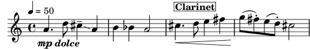
Hagamos algo respecto a las definiciones mpdolce e
inst. Éstas producen la salida que deseamos, pero quizá
las querríamos utilizar en otra pieza. Podríamos simplemente
copiarlas y pegarlas al principio de cada archivo, pero sería
bastante molesto. También hace que se queden las definiciones a
la vista dentro de nuestros archivos de música, y yo personalmente
encuentro todos los #() bastante poco estéticos. Los vamos
a esconder dentro de otro archivo:
%%% guardar esto en un archivo con el nombre "definiciones.ily"
mpdolce =
\tweak self-alignment-X -0.6
#(make-dynamic-script
#{ \markup { \dynamic mp \normal-text \italic \bold dolce } #})
inst =
#(define-music-function
(string)
(string?)
#{ <>^\markup \bold \box #string #})
Haremos referencia a este archivo utilizando la instrucción
\include al principio del archivo de música (la extensión
.ily se utiliza para distinguir este archivo de inclusión
–que se supone que no debe ser procesado de forma independiente–
del archivo principal). Ahora modificaremos la música (guardemos
este archivo como musica.ly).
\include "definiciones.ily"
\relative {
\tempo 4=50
a'4.\mpdolce d8 cis4--\glissando a |
b4 bes a2 |
\inst "Clarinet"
cis4.\< d8 e4 fis |
g8(\! fis)-. e( d)-. cis2 |
}
Eso tiene mejor aspecto, pero haremos algunos cambios más. El glissando es difícil de ver, así que lo haremos más grueso y lo acercaremos a las cabezas de las notas. Pondremos la indicación metronómica encima de la clave, en lugar de ir encima de la primera nota. Y por último, mi profesor de composición odia las indicaciones de compás ‘C’, así que la convertiremos en ‘4/4’.
Sin embargo, no debemos cambiar el archivo musica.ly. Sustituyamos nuestro archivo definiciones.ily con éste:
%%% definiciones.ily
mpdolce =
\tweak self-alignment-X -0.6
#(make-dynamic-script
#{ \markup { \dynamic mp \normal-text \italic \bold dolce } #})
inst =
#(define-music-function
(string)
(string?)
#{ <>^\markup \bold \box #string #})
\layout{
\context {
\Score
\override MetronomeMark.extra-offset = #'(-5 . 0)
\override MetronomeMark.padding = 3
}
\context {
\Staff
\numericTimeSignature
}
\context {
\Voice
\override Glissando.thickness = 3
\override Glissando.gap = 0.1
}
}
![[image of music]](7a/lily-af5927b5.png)
¡Eso tiene mucho mejor aspecto! Ahora suponga que quiere publicar esta pieza. A mi profesor de composición no le gustan las indicaciones de compás ‘C’, pero yo les tengo cierto cariño. Copiaremos el archivo actual definiciones.ily a publicar-web.ily y modificaremos éste. Como el propósito de esta música es producir un PDF que va a mostrarse en la pantalla, también vamos a aumentar el tamaño general de la salida.
%%% publicar-web.ily
mpdolce =
\tweak self-alignment-X -0.6
#(make-dynamic-script
#{ \markup { \dynamic mp \normal-text \italic \bold dolce } #})
inst =
#(define-music-function
(string)
(string?)
#{ <>^\markup \bold \box #string #})
#(set-global-staff-size 23)
\layout{
\context {
\Score
\override MetronomeMark.extra-offset = #'(-5 . 0)
\override MetronomeMark.padding = 3
}
\context {
\Staff
}
\context {
\Voice
\override Glissando.thickness = 3
\override Glissando.gap = 0.1
}
}
![[image of music]](df/lily-56ed0f9a.png)
Ahora, en la música, simplemente sustituyo \include
"definiciones.ily" por \include "publicar-web.ily". Por
supuesto, podríamos hacer esto aún más práctico. Podríamos hacer
un archivo definiciones.ily que contuviera solamente las
definiciones de \mpdolce y de \inst, un archivo
publicar-web.ily que contuviera solamente la sección
\layout que se mostró en el ejemplo, y un archivo
universidad.ily que contendría solamente los trucos para
producir la salida que le gusta a mi profesor. El comienzo de
musica.ly tendría entonces este aspecto:
\include "definiciones.ily" %%% ¡Quitar el comentario de una sola de estas líneas! \include "publicar-web.ily" %\include "universidad.ily"
Este enfoque puede ser útil incluso si va a producir solo un
conjunto de particellas. Yo utilizo media docena de archivos de
‘hojas de estilo’ para mis proyectos. Comienzo todos los
archivos de música con \include "../global.ily", que
contiene
%%% global.ily \version "2.26.0" #(ly:set-option 'point-and-click #f) \include "../iniciar/iniciar-definiciones.ily" \include "../iniciar/iniciar-disposicion.ily" \include "../iniciar/iniciar-cabeceras.ily" \include "../iniciar/iniciar-papel.ily"
| [ << Trucar la salida ] | [Top][Contents][Index] | [ Plantillas >> ] |
| [ < Hojas de estilo ] | [ Up: Trucajes adicionales ] | [ Trucos avanzados con Scheme > ] |
5.8.4 Otras fuentes de información
La documentación del manual de Referencia de Funcionamiento Interno contiene montañas de información sobre LilyPond, pero se puede obtener más información aún leyendo los archivos internos de LilyPond. Para echarles un vistazo, en primer lugar debe buscar la carpeta correspondiente a su sistema. Si decimos
lilypond --help
en la línea de órdenes, el directorio de nivel superior del árbol de datos de LilyPond se muestra hacia el final de la salida de la ayuda, por ejemplo
Top-level directory of LilyPond's data tree: '/usr/local/share/lilypond/2.26.0'
Dentro de esta carpeta, las dos subcarpetas interesantes son
- ly/
contiene archivos en formato LilyPond
- scm/
contiene archivos en formato Scheme
Vamos a comenzar observando algunos archivos que están en
ly/. Abra ly/property-init.ly con un editor de
textos (el mismo que usaría normalmente para los archivos
.ly servirá perfectamente). Este archivo contiene las
definiciones de todas las instrucciones estándar predefinidas de
LilyPond, como por ejemplo \tieUp y
\slurDotted. Podrá ver que no son nada más que definiciones
de variables que contienen una o varias instrucciones
\override. Por ejemplo, \textLengthOn está definido
de tal forma que su valor es:
textLengthOn = {
% 0.4 staff-space between adjacent texts
\override TextScript.extra-spacing-width = #'(-0.0 . 0.4)
\override TextScript.extra-spacing-height = #'(-inf.0 . +inf.0)
}
Si no le gustan los valores predeterminados, estas instrucciones predefinidas se pueden redefinir con facilidad como cualquier otra variable, al principio de su archivo de código de entrada.
Los siguientes son los archivos más útiles que se encuentran en ly/:
Archivo Contenido ly/engraver-init.ly Definiciones de Contextos de grabadores ly/paper-defaults-init.ly especificaciones de valores predeterminados relacionados con el papel ly/performer-init.ly Definiciones de Contextos de interpretación ly/property-init.ly Definiciones de todas las instrucciones predefinidas que son comunes ly/spanner-init.ly Definiciones de las instrucciones predefinidas relacionadas con los objetos de extensión
Otros ajustes (como las definiciones de las instrucciones de marcado) se almacenan como archivos .scm (de Scheme). El lenguaje de programación Scheme se utiliza para proporcionar una interfaz programable en el funcionamiento interno de LilyPond. Cualquier explicación adicional sobre estos archivos se encuentra por el momento fuera del ámbito de este manual, porque se requiere un cierto conocimiento del lenguaje Scheme. Se advierte a los usuarios que se necesita una importante cantidad de conocimientos técnicos o de tiempo para comprender el lenguaje Scheme y estos archivos (véase Tutorial de Scheme).
Si ya tiene estos conocimientos, los archivos de Scheme que pueden interesarle son:
Archivo Contenido scm/auto-beam.scm Valores predeterminados de sub-barrado scm/define-grobs.scm valores predeterminados de las propiedades de grobs scm/define-markup-commands.scm Casi todas las instrucciones de marcado scm/midi.scm Ajustes predeterminados para la salida MIDI scm/output-lib.scm Ajustes que afectan al aspecto de los trastes, colores, alteraciones, lineas divisorias, etc. scm/parser-clef.scm Definiciones de las claves contempladas scm/script.scm Ajustes predeterminados para las articulaciones
| [ << Trucar la salida ] | [Top][Contents][Index] | [ Plantillas >> ] |
| [ < Otras fuentes de información ] | [ Up: Trucajes adicionales ] | [ Plantillas > ] |
5.8.5 Trucos avanzados con Scheme
Aunque es posible hacer muchas cosas con las instrucciones
\override y \tweak , tenemos una forma incluso más
poderosa de modificar el funcionamiento de LilyPond, a través de
una interfaz programable hacia las operaciones internas de
LilyPond. Se puede incorporar código escrito en el lenguaje de
programación Scheme, directamente en el mecanismo de
funcionamiento de LilyPond. Por supuesto, para hacer esto se
necesitan al menos unos conocimientos básicos de programación en
Scheme, y damos una introducción en el Tutorial de Scheme.
Como ejemplo que ilustra una de las muchas posibilidades, en lugar de dar a una propiedad un valor constante, se puede establecer al resultado de un procedimiento de Scheme que se invoca cada vez que LilyPond accede a esta propiedad. La propiedad se puede establecer dinámicamente a un valor determinado por el procedimiento en el momento en que se invoca. En este ejemplo damos a las cabezas de las notas un color que depende de su posición dentro del pentagrama.
#(define (color-notehead grob) "Color the notehead according to its position on the staff." (let ((mod-position (modulo (ly:grob-property grob 'staff-position) 7))) (case mod-position ;; Return rainbow colors ((1) (x11-color 'red )) ; for C ((2) (x11-color 'orange )) ; for D ((3) (x11-color 'yellow )) ; for E ((4) (x11-color 'green )) ; for F ((5) (x11-color 'blue )) ; for G ((6) (x11-color 'purple )) ; for A ((0) (x11-color 'violet )) ; for B ))) \relative { % Arrange to obtain color from color-notehead procedure \override NoteHead.color = #color-notehead a2 b | c2 d | e2 f | g2 a | }![[image of music]](b5/lily-06d62cc9.png)
Se pueden encontrar ejemplos adicionales que muestran la utilización de estas interfaces programables, en Funciones de callback.
| [ << Trucar la salida ] | [Top][Contents][Index] | [ GNU Free Documentation License >> ] |
| [ < Trucos avanzados con Scheme ] | [ Up: Top ] | [ Plantillas incorporadas > ] |
Appendix A Plantillas
Esta sección del manual contiene plantillas con la partitura de LilyPond ya preparada. Sólo tiene que escribir las notas, lanzar LilyPond y ¡disfrutar de unas hermosas partituras impresas!
| [ << Plantillas ] | [Top][Contents][Index] | [ GNU Free Documentation License >> ] |
| [ < Plantillas ] | [ Up: Plantillas ] | [ Plantilla coral SATB > ] |
A.1 Plantillas incorporadas
Algunas plantillas que son adecuadas para un abanico de
posibilidades en música coral, se encuentran incorporadas dentro
de LilyPond. Se pueden usar para crear música coral sencilla, con
o sin acompañamiento de piano, en dos, cuatro u ocho pentagramas.
A diferencia de otras plantillas, éstas están ‘incorporadas’, lo
que significa que no tienen que copiarse o editarse: en lugar de
ello, sencillamente se incluyen con la instrucción
\include dentro del archivo de entrada.
Nota: A diferencia de la mayoría de los archivos de inclusión, estas plantillas incorporadas se deben incluir al final del archivo de entrada.
Las expresiones musicales necesarias se introducen definiendo
valores para variables específicas. Estas definiciones deben ir
antes del archivo incluido con la instrucción \include.
| A.1.1 Plantilla coral SATB | ||
| A.1.2 Plantilla coral SSAATTBB |
| [ << Plantillas ] | [Top][Contents][Index] | [ GNU Free Documentation License >> ] |
| [ < Plantillas incorporadas ] | [ Up: Plantillas incorporadas ] | [ Plantilla coral SSAATTBB > ] |
A.1.1 Plantilla coral SATB
La música se puede disponer con una o dos voces por pentagrama
fijando el valor de TwoVoicesPerStaff a ##f o
##t, respectivamente.
A continuación aparece el archivo de entrada completo que produce un arreglo a cuatro voces SATB con letras individuales y acompañamiento de piano:
SopranoMusic = \relative { a'4\f a8 a a4 a } SopranoLyrics = \lyricmode { Sop -- ra -- no ly -- rics } AltoMusic = \relative { d'4\f d d d } AltoLyrics = \lyricmode { Al -- to ly -- rics } TenorMusic = \relative { a4\p a a a } TenorLyrics = \lyricmode { Te -- nor ly -- rics } BassMusic = \relative { c2\p c4 c } BassLyrics = \lyricmode { Bass ly -- rics } PianoRHMusic = \relative { c' e g c } PianoDynamics = { s2\mp s4 s4 } PianoLHMusic = \relative { c e g c } \include "satb.ly"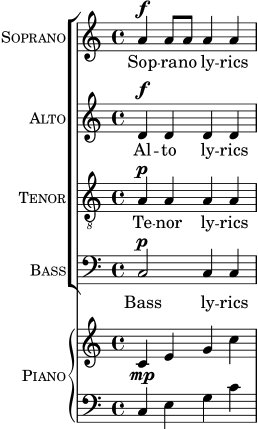
La misma entrada se puede utilizar para producir una partitura con
dos voces por pentagrama, tan solo ajustando el valor de
TwoVoicesPerStaff a ##t. De nuevo, cada voz tiene
su letra individual.
SopranoMusic = \relative { a'4\f a8 a a4 a } SopranoLyrics = \lyricmode { Sop -- ra -- no ly -- rics } AltoMusic = \relative { d'4\f d d d } AltoLyrics = \lyricmode { Al -- to ly -- rics } TenorMusic = \relative { a4\p a a a } TenorLyrics = \lyricmode { Te -- nor ly -- rics } BassMusic = \relative { c2\p c4 c } BassLyrics = \lyricmode { Bass ly -- rics } PianoRHMusic = \relative { c' e g c } PianoDynamics = { s2\mp s4 s4 } PianoLHMusic = \relative { c e g c } TwoVoicesPerStaff = ##t \include "satb.ly"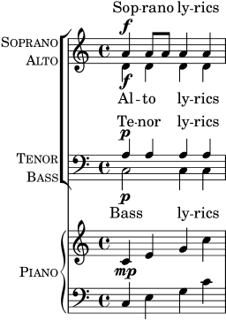
Cuando se establece el valor de TwoVoicesPerStaff a #f (falso) o
se deja como predeterminado, cualquiera de las variables musicales
puede omitirse para producir arreglos con menos voces. Aquí, por
ejemplo, aparece la manera en que debe escribirse el archivo de
entrada para un dúo de Soprano y Bajo:
SopranoMusic = \relative { c'' c c c } SopranoLyrics = \lyricmode { High voice ly -- rics } BassMusic = \relative { a a a a } BassLyrics = \lyricmode { Low voice ly -- rics } \include "satb.ly"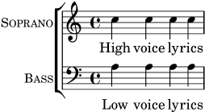
Se puede añadir a cada una de las partes una segunda estrofa o una letra alternativa:
SopranoMusic = \relative { a'4 a a a } SopranoLyricsOne = \lyricmode { \set stanza = "1." Words to verse one } SopranoLyricsTwo = \lyricmode { \set stanza = "2." Words to verse two } \include "satb.ly"![[image of music]](b6/lily-26574698.png)
Cuando las letras y las duraciones son las mismas para todas las partes, la música vocal se dispone mejor sobre dos pentagramas con dos voces cada uno. Se ofrece la posibilidad de incluir hasta nueve estrofas. El ejemplo sin acompañamiento que aparece a continuación tiene solamente tres estrofas.
SopranoMusic = \relative { a' a a a } AltoMusic = \relative { f' f f f } VerseOne = \lyricmode { \set stanza = "1." Words to verse one } VerseTwo = \lyricmode { \set stanza = "2." Words to verse two } VerseThree = \lyricmode { \set stanza = "3." Words to verse three } TenorMusic = \relative { a a a a } BassMusic = \relative { f f f f } TwoVoicesPerStaff = ##t \include "satb.ly"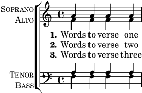
Puede ajustarse el valor de otras variables. La tonalidad y la indicación de compás se pueden modificar a partir de los ajustes predeterminados:
Key = \key a \major Time = { \time 5/4 \tempo "Allegro" 4 = 144 } SopranoMusic = \relative { gis' gis gis gis gis } AltoMusic = \relative { cis' cis cis cis cis } VerseOne = \lyricmode { Words to this du -- et } TwoVoicesPerStaff = ##t \include "satb.ly"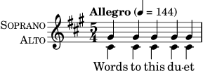
Los nombres de instrumento y/o los nombres cortos de instrumento se pueden modificar también:
SopranoMusic = \relative { c'' c c c } SopranoLyrics = \lyricmode { High voice ly -- rics } SopranoInstrumentName = "Soprano 1" SopranoShortInstrumentName = "S1" AltoMusic = \relative { a' a a a } AltoLyrics = \lyricmode { Low voice ly -- rics } AltoInstrumentName = "Soprano 2" AltoShortInstrumentName = "S2" \include "satb.ly"![[image of music]](e5/lily-25a0fbc4.png)
aunque en su lugar podría resultar más fácil usar la plantilla
ssaattbb.ly. see Plantilla coral SSAATTBB.
Se puede añadir un discanto definiendo el valor de la variable
DescantMusic y se puede añadir una letra para el discanto
definiendo valores para la variable DescantLyrics. De
manera similar, puede añadirse una parte de solista por encima de
los pentagramas del coro agrupado definiendo valores para
SoloMusic y SoloLyrics.
Los bloques \header y \paper se pueden añadir de la
forma normal. Se puede poner un bloque \layout de la
manera usual en el nivel superior, y el contenido se combina (pero
no sobreescribe) con los ajustes predeterminados que se ofrecen en
la plantilla. Como alternativa, todos los ajustes predeterminados
provistos por la plantilla se pueden descartad definiendo una
variable Layout que contenga todos los ajustes
requeridos:
Layout = \layout { ... }
El conjunto completo de variables que pueden modificarse se pueden consultar en el archivo ly/satb.ly, see Otras fuentes de información.
Véase también
Manual de aprendizaje: Organizar las piezas mediante variables, Plantillas de conjuntos vocales, Extender las plantillas, Otras fuentes de información.
Advertencias y problemas conocidos
El establecimiento de la variable TwoVoicesPerStaff tiene
efecto sobre la duración completa de la partitura: no se pueden
dar distintos valores en momentos diferentes.
No son posibles arreglos más complejos de música coral SATB con esta sencilla plantilla incorporada.
| [ << Plantillas ] | [Top][Contents][Index] | [ GNU Free Documentation License >> ] |
| [ < Plantilla coral SATB ] | [ Up: Plantillas incorporadas ] | [ Plantillas de pentagrama único > ] |
A.1.2 Plantilla coral SSAATTBB
Todas las variables definidas para la plantilla SATB, con la
excepción de las variables VerseXxx están asimismo
disponibles para la plantilla SSAATTBB, see Plantilla coral SATB. Además, la música y la letra de las voces primera y
segunda en una cualquiera o en las cuatro partes se puede
especificar dando valores a las variables SopranoOneMusic,
SopranoTwoMusic, etc., con las letras en
SopranoOneLyrics, SopranoTwoLyrics, etc. Se pueden
definir hasta cuatro estrovas adicionales para todas las partes
usando las variables SopranoOneLyricsOne, estando las demás
definidas de forma análoga.
Si se establece el valor de TwoVoicesPerStaff a ##t,
todas las partes vocales se situarán en pentagramas únicos
como voces en divisi. Si TwoVoicesPerStaff se deja en su
valor predeterminado o se establece a ##f, entonces las
partes vocales individuales se pueden disponer sobre uno o dos
pentagramas de acuerdo al valor de
SopranoTwoVoicesPerStaff, MenTwoVoicesPerStaff, etc.
Como ejemplo, supongamos que tenemos una pieza para soprano y contralto que comienza con todas las voces al unísono y continúa en una sección con dos partes vocales, soprano y contralto, y termina con una sección de cuatro pentagramas. Se codificaría de la siguiente forma:
Time = { s1 \break s1 \break } WomenMusic = \relative { a'4 a a a } WomenLyrics = \lyricmode { Wo -- men ly -- rics } SopranoMusic = \relative { s1 | c''4 c c c8 c } SopranoLyrics = \lyricmode{ So -- pra -- no ly -- rics } AltoMusic = \relative { s1 | g'4 g g g } AltoLyrics = \lyricmode { Al -- to ly -- rics } SopranoOneMusic = \relative { s1 | s1 |e''4 e e e } SopranoOneLyrics = \lyricmode { Sop One ly -- rics } SopranoTwoMusic = \relative { s1 | s1 | c''4 c c c } SopranoTwoLyrics = \lyricmode { Sop Two ly -- rics } AltoOneMusic = \relative { s1 | s1 | g'4 g g g8 g } AltoOneLyrics = \lyricmode { Al -- to One ly -- rics } AltoTwoMusic = \relative { s1 | s1 | e'4 e e e8 e } AltoTwoLyrics = \lyricmode { Al -- to Two ly -- rics } \layout { ragged-right = ##t } \include "ssaattbb.ly"![[image of music]](7f/lily-2fea443c.png)
Las voces masculinas se pueden añadir de forma análoga.
Para cambiar la disposición de forma que las voces de soprano en
divisi utilicen un pentagrama compartido, sencillamente fijamos el
valor de SopranoTwoVoicesPerStaff a ##t, dejando todos los
demás valores sin cambios, así:
SopranoTwoVoicesPerStaff = ##t Time = { s1 \break s1 \break } WomenMusic = \relative { a'4 a a a } WomenLyrics = \lyricmode { Wo -- men ly -- rics } SopranoMusic = \relative { s1 | c''4 c c c8 c } SopranoLyrics = \lyricmode{ So -- pra -- no ly -- rics } AltoMusic = \relative { s1 | g'4 g g g } AltoLyrics = \lyricmode { Al -- to ly -- rics } SopranoOneMusic = \relative { s1 | s1 |e''4 e e e } SopranoOneLyrics = \lyricmode { Sop One ly -- rics } SopranoTwoMusic = \relative { s1 | s1 | c''4 c c c } SopranoTwoLyrics = \lyricmode { Sop Two ly -- rics } AltoOneMusic = \relative { s1 | s1 | g'4 g g g8 g } AltoOneLyrics = \lyricmode { Al -- to One ly -- rics } AltoTwoMusic = \relative { s1 | s1 | e'4 e e e8 e } AltoTwoLyrics = \lyricmode { Al -- to Two ly -- rics } \layout { ragged-right = ##t } \include "ssaattbb.ly"![[image of music]](46/lily-65029cdf.png)
o bien, para hacer que todas las voces emparejadas compartan un
solo pentagrama, establezca TwoVoicesPerStaff al valor ##t:
TwoVoicesPerStaff = ##t Time = { s1 \break s1 \break } WomenMusic = \relative { a'4 a a a } WomenLyrics = \lyricmode { Wo -- men ly -- rics } SopranoMusic = \relative { s1 | c''4 c c c8 c } SopranoLyrics = \lyricmode{ So -- pra -- no ly -- rics } AltoMusic = \relative { s1 | g'4 g g g } AltoLyrics = \lyricmode { Al -- to ly -- rics } SopranoOneMusic = \relative { s1 | s1 |e''4 e e e } SopranoOneLyrics = \lyricmode { Sop One ly -- rics } SopranoTwoMusic = \relative { s1 | s1 | c''4 c c c } SopranoTwoLyrics = \lyricmode { Sop Two ly -- rics } AltoOneMusic = \relative { s1 | s1 | g'4 g g g8 g } AltoOneLyrics = \lyricmode { Al -- to One ly -- rics } AltoTwoMusic = \relative { s1 | s1 | e'4 e e e8 e } AltoTwoLyrics = \lyricmode { Al -- to Two ly -- rics } \layout { ragged-right = ##t } \include "ssaattbb.ly"![[image of music]](c5/lily-5df2559f.png)
Es posible ver el conjunto completo de variables que se pueden cambiar examinando el archivo ly/ssaattbb.ly, see Otras fuentes de información.
Véase también
Manual de aprendizaje: Organizar las piezas mediante variables, Plantillas de conjuntos vocales, Extender las plantillas, Otras fuentes de información.
Advertencias y problemas conocidos
El valor de las distintas variables ...TwoVoicesPerStaff se
aplica a toda la duración de la partitura: no pueden recibir
valores distintos en tiempos diferentes.
No son posibles arreglos de música coral a 8 partes más complejos, con esta sencilla plantilla incorporada.
| [ << Plantillas ] | [Top][Contents][Index] | [ GNU Free Documentation License >> ] |
| [ < Plantilla coral SSAATTBB ] | [ Up: Plantillas ] | [ Sólo notas > ] |
A.2 Plantillas de pentagrama único
| A.2.1 Sólo notas | ||
| A.2.2 Notas y letra | ||
| A.2.3 Notas y acordes | ||
| A.2.4 Notas, letra y acordes |
| [ << Plantillas ] | [Top][Contents][Index] | [ GNU Free Documentation License >> ] |
| [ < Plantillas de pentagrama único ] | [ Up: Plantillas de pentagrama único ] | [ Notas y letra > ] |
A.2.1 Sólo notas
Esta plantilla simple prepara un pentagrama con notas, adecuado para un instrumento solista o un fragmento melódico. Córtelo y péguelo en un archivo, escriba las notas y ¡ya está!
melody = \relative c' { \clef treble \key c \major \time 4/4 a4 b c d } \score { \new Staff \melody \layout { } \midi { } }![[image of music]](93/lily-a35fc37d.png)
| [ << Plantillas ] | [Top][Contents][Index] | [ GNU Free Documentation License >> ] |
| [ < Sólo notas ] | [ Up: Plantillas de pentagrama único ] | [ Notas y acordes > ] |
A.2.2 Notas y letra
Esta pequeña plantilla muestra una melodía sencilla con letra. Córtela y péguela, escriba las notas y luego la letra. Este ejemplo desactiva el barrado automático, que es lo más frecuente en las partes vocales antiguas. Para usar el barrado automático modifique o marque como un comentario la línea correspondiente.
melody = \relative c' { \clef treble \key c \major \time 4/4 a4 b c d } text = \lyricmode { Aaa Bee Cee Dee } \score{ << \new Voice = "one" { \autoBeamOff \melody } \new Lyrics \lyricsto "one" \text >> \layout { } \midi { } }![[image of music]](f3/lily-b81eb35c.png)
| [ << Plantillas ] | [Top][Contents][Index] | [ GNU Free Documentation License >> ] |
| [ < Notas y letra ] | [ Up: Plantillas de pentagrama único ] | [ Notas, letra y acordes > ] |
A.2.3 Notas y acordes
¿Quiere preparar una hoja guía de acordes (o «lead sheet») con melodía y acordes? ¡No busque más!
melody = \relative c' { \clef treble \key c \major \time 4/4 f4 e8[ c] d4 g | a2 ~ a } harmonies = \chordmode { c4:m f:min7 g:maj c:aug | d2:dim b4:5 e:sus } \score { << \new ChordNames { \set chordChanges = ##t \harmonies } \new Staff \melody >> \layout{ } \midi { } }![[image of music]](7d/lily-e9c3733f.png)
| [ << Plantillas ] | [Top][Contents][Index] | [ GNU Free Documentation License >> ] |
| [ < Notas y acordes ] | [ Up: Plantillas de pentagrama único ] | [ Plantillas de piano > ] |
A.2.4 Notas, letra y acordes
Esta plantilla facilita la preparación de una canción con melodía, letra y acordes.
melody = \relative c' { \clef treble \key c \major \time 4/4 a4 b c d } text = \lyricmode { Aaa Bee Cee Dee } harmonies = \chordmode { a2 c } \score { << \new ChordNames { \set chordChanges = ##t \harmonies } \new Voice = "one" { \autoBeamOff \melody } \new Lyrics \lyricsto "one" \text >> \layout { } \midi { } }![[image of music]](95/lily-37fdd76f.png)
| [ << Plantillas ] | [Top][Contents][Index] | [ GNU Free Documentation License >> ] |
| [ < Notas, letra y acordes ] | [ Up: Plantillas ] | [ Piano solo > ] |
A.3 Plantillas de piano
| A.3.1 Piano solo | ||
| A.3.2 Piano y melodía con letra | ||
| A.3.3 Piano con letra centrada |
| [ << Plantillas ] | [Top][Contents][Index] | [ GNU Free Documentation License >> ] |
| [ < Plantillas de piano ] | [ Up: Plantillas de piano ] | [ Piano y melodía con letra > ] |
A.3.1 Piano solo
Presentamos a continuación una plantilla de piano sencilla con algunas notas.
upper = \relative c'' { \clef treble \key c \major \time 4/4 a4 b c d } lower = \relative c { \clef bass \key c \major \time 4/4 a2 c } \score { \new PianoStaff \with { instrumentName = "Piano" } << \new Staff = "upper" \upper \new Staff = "lower" \lower >> \layout { } \midi { } }![[image of music]](91/lily-b84d5c71.png)
| [ << Plantillas ] | [Top][Contents][Index] | [ GNU Free Documentation License >> ] |
| [ < Piano solo ] | [ Up: Plantillas de piano ] | [ Piano con letra centrada > ] |
A.3.2 Piano y melodía con letra
He aquí el típico formato dde una canción: un pentagrama con la melodía y la letra, y el acompañamiento de piano por debajo.
melody = \relative c'' { \clef treble \key c \major \time 4/4 a b c d } text = \lyricmode { Aaa Bee Cee Dee } upper = \relative c'' { \clef treble \key c \major \time 4/4 a4 b c d } lower = \relative c { \clef bass \key c \major \time 4/4 a2 c } \score { << \new Voice = "mel" { \autoBeamOff \melody } \new Lyrics \lyricsto mel \text \new PianoStaff << \new Staff = "upper" \upper \new Staff = "lower" \lower >> >> \layout { \context { \Staff \RemoveEmptyStaves } } \midi { } }![[image of music]](75/lily-6b6ba135.png)
| [ << Plantillas ] | [Top][Contents][Index] | [ GNU Free Documentation License >> ] |
| [ < Piano y melodía con letra ] | [ Up: Plantillas de piano ] | [ Plantillas de cuarteto de cuerda > ] |
A.3.3 Piano con letra centrada
En lugar de tener un pentagrama dedicado a la melodía y la letra, ésta se puede centrar entre los pentagramas de un sistema de piano.
upper = \relative c'' { \clef treble \key c \major \time 4/4 a4 b c d } lower = \relative c { \clef bass \key c \major \time 4/4 a2 c } text = \lyricmode { Aaa Bee Cee Dee } \score { \new PianoStaff << \new Staff = upper { \new Voice = "singer" \upper } \new Lyrics \lyricsto "singer" \text \new Staff = lower { \lower } >> \layout { } \midi { } }![[image of music]](7e/lily-1147360c.png)
| [ << Plantillas ] | [Top][Contents][Index] | [ GNU Free Documentation License >> ] |
| [ < Piano con letra centrada ] | [ Up: Plantillas ] | [ Cuarteto de cuerda simple > ] |
A.4 Plantillas de cuarteto de cuerda
| A.4.1 Cuarteto de cuerda simple | ||
| A.4.2 Particellas de cuarteto de cuerda |
| [ << Plantillas ] | [Top][Contents][Index] | [ GNU Free Documentation License >> ] |
| [ < Plantillas de cuarteto de cuerda ] | [ Up: Plantillas de cuarteto de cuerda ] | [ Particellas de cuarteto de cuerda > ] |
A.4.1 Cuarteto de cuerda simple
Esta plantilla muestra un cuarteto de cuerda normal. También utiliza
una sección \global para el compás y la armadura.
Véase también el fragmento de código “Plantilla de cuarteto de cuerda con particellas independientes”.
global= { \time 4/4 \key c \major } violinOne = \new Voice \relative c'' { c2 d e1 \bar "|." } violinTwo = \new Voice \relative c'' { g2 f e1 \bar "|." } viola = \new Voice \relative c' { \clef alto e2 d c1 \bar "|." } cello = \new Voice \relative c' { \clef bass c2 b a1 \bar "|." } \score { \new StaffGroup << \new Staff \with { instrumentName = "Violin 1" } << \global \violinOne >> \new Staff \with { instrumentName = "Violin 2" } << \global \violinTwo >> \new Staff \with { instrumentName = "Viola" } << \global \viola >> \new Staff \with { instrumentName = "Cello" } << \global \cello >> >> \layout { } \midi { } }![[image of music]](8a/lily-1abe756c.png)
| [ << Plantillas ] | [Top][Contents][Index] | [ GNU Free Documentation License >> ] |
| [ < Cuarteto de cuerda simple ] | [ Up: Plantillas de cuarteto de cuerda ] | [ Plantillas de conjuntos vocales > ] |
A.4.2 Particellas de cuarteto de cuerda
El fragmento de código “Plantilla de cuarteto de cuerda”
produce un resultado satisfactorio para el cuarteto, pero ¿y si
tenemos que imprimir las particellas? Esta nueva plantilla muestra
cómo usar la funcionalidad \tag (etiqueta) para dividir
fácilmente una pieza en particellas individuales.
Tenemos que dividir esta plantilla en archivos independientes; los nombres de archivo están dentro de los comentarios al principio de cada archivo. piece.ly contiene todas las definiciones de música. Los otros archivos (score.ly, vn1.ly, vn2.ly, vla.ly y vlc.ly) producen la particella correspondiente.
¡No olvide quitar los comentarios que hemos especificado cuando use los archivos independientes!
% piece.ly % (This is the global definitions file.) global= { \time 4/4 \key c \major } Violinone = \new Voice \relative c'' { c2 d e1 \bar "|." } Violintwo = \new Voice \relative c'' { g2 g e1 \bar "|." } Viola = \new Voice \relative c' { \clef alto e2 d c1 \bar "|." } Cello = \new Voice \relative c' { \clef bass c2 b a1 \bar "|." } music = << \tag #'score \tag #'vn1 \new Staff \with { instrumentName = "Violin 1" } << \global \Violinone >> \tag #'score \tag #'vn2 \new Staff \with { instrumentName = "Violin 2" } << \global \Violintwo >> \tag #'score \tag #'vla \new Staff \with { instrumentName = "Viola" } << \global \Viola >> \tag #'score \tag #'vlc \new Staff \with { instrumentName = "Cello" } << \global \Cello >> >> % These are the other files you need to save on your computer % score.ly % (This is the main file.) % Uncomment the line below when using a separate file. % \include "piece.ly" #(set-global-staff-size 14) \score { \new StaffGroup \keepWithTag #'score \music \layout { } \midi { } } %{ Uncomment this block when using separate files. % vn1.ly % (This is the Violin 1 part file.) \include "piece.ly" \score { \keepWithTag #'vn1 \music \layout { } } % vn2.ly % (This is the Violin 2 part file.) \include "piece.ly" \score { \keepWithTag #'vn2 \music \layout { } } % vla.ly % (This is the Viola part file.) \include "piece.ly" \score { \keepWithTag #'vla \music \layout { } } % vlc.ly % (This is the Cello part file.) \include "piece.ly" \score { \keepWithTag #'vlc \music \layout { } } %}![[image of music]](76/lily-cab48ca3.png)
| [ << Plantillas ] | [Top][Contents][Index] | [ GNU Free Documentation License >> ] |
| [ < Particellas de cuarteto de cuerda ] | [ Up: Plantillas ] | [ Partitura vocal SATB > ] |
A.5 Plantillas de conjuntos vocales
Debemos copiar en nuestra partitura el texto de las plantillas que
se muestran más abajo, y editarlas alllí. Si tiene una
disposición coral SATB relativamente sencilla, quizá prefiera
utilizar las plantillas incorporadas, que solo necesitan incluirse
con la instrucción \include, see Plantillas incorporadas.
A.5.1 Partitura vocal SATB
He aquí una partitura vocal estándar para cuatro voces SATB. Con grupos mayores, suele ser útil incluir una sección que aparezca en todas las partes. Por ejemplo, el compás y la armadura casi siempre son los mismos para todas. Como en la “Plantilla para himnos”, las cuatro voces se reagrupan en solo dos pentagramas.
\paper { top-system-spacing.basic-distance = 10 score-system-spacing.basic-distance = 20 system-system-spacing.basic-distance = 20 last-bottom-spacing.basic-distance = 10 } global = { \key c \major \time 4/4 } sopMusic = \relative { c''4 c c8[( b)] c4 } sopWords = \lyricmode { hi hi hi hi } altoMusic = \relative { e'4 f d e } altoWords = \lyricmode { ha ha ha ha } tenorMusic = \relative { g4 a f g } tenorWords = \lyricmode { hu hu hu hu } bassMusic = \relative { c4 c g c } bassWords = \lyricmode { ho ho ho ho } \score { \new ChoirStaff << \new Lyrics = "sopranos" \with { % this is needed for lyrics above a staff \override VerticalAxisGroup.staff-affinity = #DOWN } \new Staff = "women" << \new Voice = "sopranos" { \voiceOne << \global \sopMusic >> } \new Voice = "altos" { \voiceTwo << \global \altoMusic >> } >> \new Lyrics = "altos" \new Lyrics = "tenors" \with { % this is needed for lyrics above a staff \override VerticalAxisGroup.staff-affinity = #DOWN } \new Staff = "men" << \clef bass \new Voice = "tenors" { \voiceOne << \global \tenorMusic >> } \new Voice = "basses" { \voiceTwo << \global \bassMusic >> } >> \new Lyrics = "basses" \context Lyrics = "sopranos" \lyricsto "sopranos" \sopWords \context Lyrics = "altos" \lyricsto "altos" \altoWords \context Lyrics = "tenors" \lyricsto "tenors" \tenorWords \context Lyrics = "basses" \lyricsto "basses" \bassWords >> }![[image of music]](98/lily-74f7e7a6.png)
| [ << Plantillas ] | [Top][Contents][Index] | [ GNU Free Documentation License >> ] |
| [ < Partitura vocal SATB ] | [ Up: Plantillas de conjuntos vocales ] | [ SATB con contextos alineados > ] |
A.5.2 Partitura vocal SATB y reducción para piano automática
Esta plantilla añade una reducción de piano automática a la
partitura vocal SATB estándar que se mostró en el fragmento de
código “Plantilla de conjunto vocal”. Presenta uno de los
puntos fuertes de LilyPond: podemos usar una definición de música
más de una vez. Si se hace cualquier cambio en las notas de la
parte vocal (digamos tenorMusic), entonces los cambios se
aplican también a la reducción de piano.
\paper { top-system-spacing.basic-distance = 10 score-system-spacing.basic-distance = 20 system-system-spacing.basic-distance = 20 last-bottom-spacing.basic-distance = 10 } global = { \key c \major \time 4/4 } sopMusic = \relative { c''4 c c8[( b)] c4 } sopWords = \lyricmode { hi hi hi hi } altoMusic = \relative { e'4 f d e } altoWords =\lyricmode { ha ha ha ha } tenorMusic = \relative { g4 a f g } tenorWords = \lyricmode { hu hu hu hu } bassMusic = \relative { c4 c g c } bassWords = \lyricmode { ho ho ho ho } \score { << \new ChoirStaff << \new Lyrics = "sopranos" \with { % This is needed for lyrics above a staff \override VerticalAxisGroup.staff-affinity = #DOWN } \new Staff = "women" << \new Voice = "sopranos" { \voiceOne << \global \sopMusic >> } \new Voice = "altos" { \voiceTwo << \global \altoMusic >> } >> \new Lyrics = "altos" \new Lyrics = "tenors" \with { % This is needed for lyrics above a staff \override VerticalAxisGroup.staff-affinity = #DOWN } \new Staff = "men" << \clef bass \new Voice = "tenors" { \voiceOne << \global \tenorMusic >> } \new Voice = "basses" { \voiceTwo << \global \bassMusic >> } >> \new Lyrics = "basses" \context Lyrics = "sopranos" \lyricsto "sopranos" \sopWords \context Lyrics = "altos" \lyricsto "altos" \altoWords \context Lyrics = "tenors" \lyricsto "tenors" \tenorWords \context Lyrics = "basses" \lyricsto "basses" \bassWords >> \new PianoStaff << \new Staff << \set Staff.printPartCombineTexts = ##f \partCombine << \global \sopMusic >> << \global \altoMusic >> >> \new Staff << \clef bass \set Staff.printPartCombineTexts = ##f \partCombine << \global \tenorMusic >> << \global \bassMusic >> >> >> >> }![[image of music]](a2/lily-edb1f109.png)
A.5.3 SATB con contextos alineados
Esta plantilla es, básicamente, la misma que la sencilla
“Plantilla para conjunto vocal”, excepto que aquí todas las
líneas de letra se colocan utilizando alignAboveContext y
alignBelowContext.
global = { \key c \major \time 4/4 } sopMusic = \relative c'' { c4 c c8[( b)] c4 } sopWords = \lyricmode { hi hi hi hi } altoMusic = \relative c' { e4 f d e } altoWords = \lyricmode { ha ha ha ha } tenorMusic = \relative c' { g4 a f g } tenorWords = \lyricmode { hu hu hu hu } bassMusic = \relative c { c4 c g c } bassWords = \lyricmode { ho ho ho ho } \score { \new ChoirStaff << \new Staff = "women" << \new Voice = "sopranos" { \voiceOne << \global \sopMusic >> } \new Voice = "altos" { \voiceTwo << \global \altoMusic >> } >> \new Lyrics \with { alignAboveContext = "women" } \lyricsto "sopranos" \sopWords \new Lyrics \with { alignBelowContext = "women" } \lyricsto "altos" \altoWords % we could remove the line about this with the line below, since % we want the alto lyrics to be below the alto Voice anyway. % \new Lyrics \lyricsto "altos" \altoWords \new Staff = "men" << \clef bass \new Voice = "tenors" { \voiceOne << \global \tenorMusic >> } \new Voice = "basses" { \voiceTwo << \global \bassMusic >> } >> \new Lyrics \with { alignAboveContext = "men" } \lyricsto "tenors" \tenorWords \new Lyrics \with { alignBelowContext = "men" } \lyricsto "basses" \bassWords % again, we could replace the line above this with the line below. % \new Lyrics \lyricsto "basses" \bassWords >> }![[image of music]](9b/lily-9ea64fc2.png)
| [ << Plantillas ] | [Top][Contents][Index] | [ GNU Free Documentation License >> ] |
| [ < SATB con contextos alineados ] | [ Up: Plantillas de conjuntos vocales ] | [ Estrofas a solo y estribillo a dos voces > ] |
A.5.4 SATB sobre cuatro pentagramas
He aquí una plantilla de coro SATB en cuatro pentagramas.
global = { \key c \major \time 4/4 \dynamicUp } sopranonotes = \relative c'' { c2 \p \< d c d \f } sopranowords = \lyricmode { do do do do } altonotes = \relative c'' { c2\p d c d } altowords = \lyricmode { re re re re } tenornotes = { \clef "G_8" c2\mp d c d } tenorwords = \lyricmode { mi mi mi mi } bassnotes = { \clef bass c2\mf d c d } basswords = \lyricmode { mi mi mi mi } \score { \new ChoirStaff << \new Staff << \new Voice = "soprano" << \global \sopranonotes >> \new Lyrics \lyricsto "soprano" \sopranowords >> \new Staff << \new Voice = "alto" << \global \altonotes >> \new Lyrics \lyricsto "alto" \altowords >> \new Staff << \new Voice = "tenor" << \global \tenornotes >> \new Lyrics \lyricsto "tenor" \tenorwords >> \new Staff << \new Voice = "bass" << \global \bassnotes >> \new Lyrics \lyricsto "bass" \basswords >> >> }![[image of music]](76/lily-2dc0d18a.png)
| [ << Plantillas ] | [Top][Contents][Index] | [ GNU Free Documentation License >> ] |
| [ < SATB sobre cuatro pentagramas ] | [ Up: Plantillas de conjuntos vocales ] | [ Melodías de himnos > ] |
A.5.5 Estrofas a solo y estribillo a dos voces
Esta plantilla crea una partitura que comienza con una estrofa
para solista y continúa con un estribillo a dos voces. también
muestra el uso de silencios de separación dentro de la variable
\global para definir cambios de compás (y otros elementos
que son comunes a todas las partes) a lo largo de toda la
partitura.
global = { \key g \major % verse \time 3/4 s2.*2 \break % refrain \time 2/4 s2*2 \bar "|." } SoloNotes = \relative g' { \clef "treble" % verse g4 g g | b4 b b | % refrain R2*2 | } SoloLyrics = \lyricmode { One two three | four five six | } SopranoNotes = \relative c'' { \clef "treble" % verse R2.*2 | % refrain c4 c | g4 g | } SopranoLyrics = \lyricmode { la la | la la | } BassNotes = \relative c { \clef "bass" % verse R2.*2 | % refrain c4 e | d4 d | } BassLyrics = \lyricmode { dum dum | dum dum | } \score { << \new Voice = "SoloVoice" << \global \SoloNotes >> \new Lyrics \lyricsto "SoloVoice" \SoloLyrics \new ChoirStaff << \new Voice = "SopranoVoice" << \global \SopranoNotes >> \new Lyrics \lyricsto "SopranoVoice" \SopranoLyrics \new Voice = "BassVoice" << \global \BassNotes >> \new Lyrics \lyricsto "BassVoice" \BassLyrics >> >> \layout { ragged-right = ##t \context { \Staff % these lines prevent empty staves from being printed \RemoveEmptyStaves \override VerticalAxisGroup.remove-first = ##t } } }![[image of music]](fc/lily-7407fec9.png)
| [ << Plantillas ] | [Top][Contents][Index] | [ GNU Free Documentation License >> ] |
| [ < Estrofas a solo y estribillo a dos voces ] | [ Up: Plantillas de conjuntos vocales ] | [ Salmos > ] |
A.5.6 Melodías de himnos
Este fragmento de código muestra una forma de preparar un himno en el que cada línea comienza con un compás parcial. También muestra cómo añadir los versos como texto independiente debajo de la música.
Timeline = { \time 4/4 \tempo 4=96 \partial 2 s2 | s1 | s2 \breathe s2 | s1 | s2 \caesura \break s2 | s1 | s2 \breathe s2 | s1 | s2 \fine } SopranoMusic = \relative g' { g4 g | g g g g | g g g g | g g g g | g2 g4 g | g g g g | g g g g | g g g g | g2 } AltoMusic = \relative c' { d4 d | d d d d | d d d d | d d d d | d2 d4 d | d d d d | d d d d | d d d d | d2 } TenorMusic = \relative a { b4 b | b b b b | b b b b | b b b b | b2 b4 b | b b b b | b b b b | b b b b | b2 } BassMusic = \relative g { g4 g | g g g g | g g g g | g g g g | g2 g4 g | g g g g | g g g g | g g g g | g2 } global = { \key g \major } \score { % Start score \new PianoStaff << % Start pianostaff \new Staff << % Start Staff = RH \global \clef "treble" \new Voice = "Soprano" << % Start Voice = "Soprano" \Timeline \voiceOne \SopranoMusic >> % End Voice = "Soprano" \new Voice = "Alto" << % Start Voice = "Alto" \Timeline \voiceTwo \AltoMusic >> % End Voice = "Alto" >> % End Staff = RH \new Staff << % Start Staff = LH \global \clef "bass" \new Voice = "Tenor" << % Start Voice = "Tenor" \Timeline \voiceOne \TenorMusic >> % End Voice = "Tenor" \new Voice = "Bass" << % Start Voice = "Bass" \Timeline \voiceTwo \BassMusic >> % End Voice = "Bass" >> % End Staff = LH >> % End pianostaff } % End score \markup \fill-line { \left-column { "This is line one of the first verse" "This is line two of the same" \null "And here's line one of the second verse" "And the next line of the same" } } \layout { \context { \Score caesuraType = #'((bar-line . "||")) fineBarType = "||" } } \paper { % Start paper block indent = 0 % don't indent first system line-width = 130 % shorten line length to suit music tagline = ##f % Don't print tag line, can be removed } % End paper block![[image of music]](9f/lily-5c599424.png)
| [ << Plantillas ] | [Top][Contents][Index] | [ GNU Free Documentation License >> ] |
| [ < Melodías de himnos ] | [ Up: Plantillas de conjuntos vocales ] | [ Plantillas orquestales > ] |
A.5.7 Salmos
Esta plantilla muestra una forma de preparar un cántico salmódico anglicano. También muestra cómo se pueden añadir estrofas adicionales como texto independiente por debajo de la música. Las dos estrofas se codifican en estilos diferentes para ilustrar más posibilidades.
SopranoMusic = \relative g' { g1 | c2 b | a1 | \bar "||" a1 | d2 c | c b | c1 | \bar "||" } AltoMusic = \relative c' { e1 | g2 g | f1 | f1 | f2 e | d d | e1 | } TenorMusic = \relative a { c1 | c2 c | c1 | d1 | g,2 g | g g | g1 | } BassMusic = \relative c { c1 | e2 e | f1 | d1 | b2 c | g' g | c,1 | } global = { \time 2/2 } dot = \markup { \raise #0.7 \musicglyph "dots.dot" } tick = \markup { \raise #1 \fontsize #-5 \musicglyph "scripts.rvarcomma" } % Use markup to center the chant on the page \markup \fill-line { \score { % centered \new ChoirStaff << \new Staff << \global \clef "treble" \new Voice = "Soprano" << \voiceOne \SopranoMusic >> \new Voice = "Alto" << \voiceTwo \AltoMusic >> >> \new Staff << \clef "bass" \global \new Voice = "Tenor" << \voiceOne \TenorMusic >> \new Voice = "Bass" << \voiceTwo \BassMusic >> >> >> \layout { \context { \Score \override SpacingSpanner.base-shortest-duration = \musicLength 2 } \context { \Staff \remove "Time_signature_engraver" } } } % End score } % End markup \markup \fill-line { \left-column { \null \null \null \line { \fontsize #5 O \fontsize #3 come let us \bold sing | unto \dot the | Lord : let } \line { us heartily \concat { re \bold joice } in the | strength of | our } \line { sal | vation. } \null \line { \hspace #2.5 8. Today if ye will hear his voice * } \line { \concat { \bold hard en } \tick not your \tick hearts : as in the pro- } \line { vocation * and as in the \bold day of tempt- \tick } \line { -ation \tick in the \tick wilderness. } } }![[image of music]](08/lily-d14a0718.png)
| [ << Plantillas ] | [Top][Contents][Index] | [ GNU Free Documentation License >> ] |
| [ < Salmos ] | [ Up: Plantillas ] | [ Orquesta, coro y piano > ] |
A.6 Plantillas orquestales
| A.6.1 Orquesta, coro y piano |
| [ << Plantillas ] | [Top][Contents][Index] | [ GNU Free Documentation License >> ] |
| [ < Plantillas orquestales ] | [ Up: Plantillas orquestales ] | [ Plantillas para notación antigua > ] |
A.6.1 Orquesta, coro y piano
Esta plantilla muestra el uso de contextos StaffGroup y
GrandStaff anidados para sub-agrupar instrumentos del mismo
tipo, y una forma de usar \transpose de manera que unas
variables contengan la música para instrumentos transpositores en
afinación de concierto.
#(set-global-staff-size 17) \paper { indent = 3.0\cm % add space for instrumentName short-indent = 1.5\cm % add less space for shortInstrumentName } fluteMusic = \relative c' { \key g \major g'1 b } % Pitches as written on a manuscript for Clarinet in A % are transposed to concert pitch. clarinetMusic = \transpose c' a \relative c'' { \key bes \major bes1 d } trumpetMusic = \relative c { \key g \major g''1 b } % Key signature is often omitted for horns hornMusic = \transpose c' f \relative c { d'1 fis } percussionMusic = \relative c { \key g \major g1 b } sopranoMusic = \relative c'' { \key g \major g'1 b } sopranoLyrics = \lyricmode { Lyr -- ics } altoIMusic = \relative c' { \key g \major g'1 b } altoILyrics = \sopranoLyrics altoIIMusic = \relative c' { \key g \major g'1 b } altoIILyrics = \lyricmode { Ah -- ah } tenorMusic = \relative c' { \clef "treble_8" \key g \major g1 b } tenorLyrics = \sopranoLyrics pianoRHMusic = \relative c { \key g \major g''1 b } pianoLHMusic = \relative c { \clef bass \key g \major g1 b } violinIMusic = \relative c' { \key g \major g'1 b } violinIIMusic = \relative c' { \key g \major g'1 b } violaMusic = \relative c { \clef alto \key g \major g'1 b } celloMusic = \relative c { \clef bass \key g \major g1 b } bassMusic = \relative c { \clef "bass_8" \key g \major g,1 b } \book { \score { << \new StaffGroup = "StaffGroup_woodwinds" << \new Staff = "Staff_flute" \with { instrumentName = "Flute" } \fluteMusic \new Staff = "Staff_clarinet" \with { instrumentName = \markup { \concat { "Clarinet in B" \flat } } } % Declare that written Middle C in the music % to follow sounds a concert B flat, for % output using sounded pitches such as MIDI. %\transposition bes % Print music for a B-flat clarinet \transpose bes c' \clarinetMusic >> \new StaffGroup = "StaffGroup_brass" << \new Staff = "Staff_hornI" \with { instrumentName = "Horn in F" } % \transposition f \transpose f c' \hornMusic \new Staff = "Staff_trumpet" \with { instrumentName = "Trumpet in C" } \trumpetMusic >> \new RhythmicStaff = "RhythmicStaff_percussion" \with { instrumentName = "Percussion" } \percussionMusic \new PianoStaff \with { instrumentName = "Piano" } << \new Staff { \pianoRHMusic } \new Staff { \pianoLHMusic } >> \new ChoirStaff = "ChoirStaff_choir" << \new Staff = "Staff_soprano" \with { instrumentName = "Soprano" } \new Voice = "soprano" \sopranoMusic \new Lyrics \lyricsto "soprano" { \sopranoLyrics } \new GrandStaff = "GrandStaff_altos" \with { \accepts Lyrics } << \new Staff = "Staff_altoI" \with { instrumentName = "Alto I" } \new Voice = "altoI" \altoIMusic \new Lyrics \lyricsto "altoI" { \altoILyrics } \new Staff = "Staff_altoII" \with { instrumentName = "Alto II" } \new Voice = "altoII" \altoIIMusic \new Lyrics \lyricsto "altoII" { \altoIILyrics } >> \new Staff = "Staff_tenor" \with { instrumentName = "Tenor" } \new Voice = "tenor" \tenorMusic \new Lyrics \lyricsto "tenor" { \tenorLyrics } >> \new StaffGroup = "StaffGroup_strings" << \new GrandStaff = "GrandStaff_violins" << \new Staff = "Staff_violinI" \with { instrumentName = "Violin I" } \violinIMusic \new Staff = "Staff_violinII" \with { instrumentName = "Violin II" } \violinIIMusic >> \new Staff = "Staff_viola" \with { instrumentName = "Viola" } \violaMusic \new Staff = "Staff_cello" \with { instrumentName = "Cello" } \celloMusic \new Staff = "Staff_bass" \with { instrumentName = "Double Bass" } \bassMusic >> >> } }![[image of music]](ca/lily-851735a2.png)
| [ << Plantillas ] | [Top][Contents][Index] | [ GNU Free Documentation License >> ] |
| [ < Orquesta, coro y piano ] | [ Up: Plantillas ] | [ Transcripción de música mensural > ] |
A.7 Plantillas para notación antigua
| A.7.1 Transcripción de música mensural | ||
| A.7.2 Plantilla para transcripción de canto gregoriano |
A.7.1 Transcripción de música mensural
Al transcribir música mensural, es útil poner un incipit al comienzo de la pieza para indicar la tonalidad y el compás originales. Aunque en la actualidad los músicos están acostumbrados a las líneas divisorias para reconocer más rápidamente los patrones rítmicos, en el período de la música mensural aún no se habían inventado las barras de compás; de hecho, el metro cambiaba con frecuencia cada pocas notas. Como compromiso, las barras de compás se imprimían muchas veces entre las pautas en lugar de dibujarse atravesando las líneas del pentagrama.
% A short excerpt from the Jubilate Deo by Orlande de Lassus global = { \set Score.skipBars = ##t \key g \major \time 4/4 % the actual music \skip 1*8 % let finis bar go through all staves \override Staff.BarLine.transparent = ##f % finis bar \bar "|." } discantusIncipit = \new PetrucciStaff { \clef "petrucci-c1" \key f \major \time 2/2 c''1. } discantusNotes = { \transpose c' c'' { \clef "treble" d'2. d'4 | b e' d'2 | c'4 e'4.( d'8 c' b | a4) b a2 | b4.( c'8 d'4) c'4 | \once \hide NoteHead c'1 | b\breve | } } discantusLyrics = \lyricmode { Ju -- bi -- la -- te De -- o, om -- nis ter -- ra, __ om- "..." -us. } altusIncipit = \new PetrucciStaff { \clef "petrucci-c3" \key f \major \time 2/2 e'1\rest f'1. } altusNotes = { \transpose c' c'' { \clef "treble" r2 g2. e4 fis g | a2 g4 e | fis g4.( fis16 e fis4) | g1 | \once \hide NoteHead g1 | g\breve | } } altusLyrics = \lyricmode { Ju -- bi -- la -- te De -- o, om -- nis ter -- ra, "..." -us. } tenorIncipit = \new PetrucciStaff { \clef "petrucci-c4" \key f \major \time 2/2 r\longa r\breve r1 c'1. } tenorNotes = { \transpose c' c' { \clef "treble_8" R1 | R1 | R1 | % two measures r2 d'2. d'4 b e' | \once \hide NoteHead e'1 | d'\breve | } } tenorLyrics = \lyricmode { Ju -- bi -- la -- te "..." -us. } bassusIncipit = \new PetrucciStaff { % The original print shows the b flat % for the f major key signature twice. \override Staff.KeySignature.flat-positions = #'((-7 . 6)) \clef "mensural-f" \key f\major \time 2/2 \tweak Y-offset #1 r\longa \tweak Y-offset #1 r\longa f1. } bassusNotes = { \transpose c' c' { \clef "bass" R1 | R1 | R1 | R1 | g2. e4 | \once \hide NoteHead e1 | g\breve | } } bassusLyrics = \lyricmode { Ju -- bi- "..." -us. } \score { << \new StaffGroup = choirStaff << \new Voice = "discantusNotes" << \set Staff.instrumentName = "Discantus" \incipit #1 \discantusIncipit \global \discantusNotes >> \new Lyrics \lyricsto discantusNotes { \discantusLyrics } \new Voice = "altusNotes" << \set Staff.instrumentName = "Altus" \global \incipit #1 \altusIncipit \altusNotes >> \new Lyrics \lyricsto altusNotes { \altusLyrics } \new Voice = "tenorNotes" << \set Staff.instrumentName = "Tenor" \global \incipit #1 \tenorIncipit \tenorNotes >> \new Lyrics \lyricsto tenorNotes { \tenorLyrics } \new Voice = "bassusNotes" << \set Staff.instrumentName = "Bassus" \global \incipit #1 \bassusIncipit \bassusNotes >> \new Lyrics \lyricsto bassusNotes { \bassusLyrics } >> >> \layout { \context { \Score %% no bar lines in staves or lyrics \hide BarLine } %% the next two instructions keep the lyrics between the bar lines \context { \Lyrics \consists "Bar_engraver" \consists "Separating_line_group_engraver" } \context { \Voice %% no slurs \hide Slur %% Comment in the below "\remove" command to allow line %% breaking also at those bar lines where a note overlaps %% into the next measure. The command is commented out in this %% short example score, but especially for large scores, you %% will typically yield better line breaking and thus improve %% overall spacing if you comment in the following command. %%\remove "Forbid_line_break_engraver" } indent = 5\cm incipit-width = 2.5\cm } }![[image of music]](b9/lily-5cfe28ed.png)
| [ << Plantillas ] | [Top][Contents][Index] | [ GNU Free Documentation License >> ] |
| [ < Transcripción de música mensural ] | [ Up: Plantillas para notación antigua ] | [ Otras plantillas > ] |
A.7.2 Plantilla para transcripción de canto gregoriano
This example demonstrates how to do modern transcription of Gregorian music. Gregorian music has no measure, no stems; it uses only half and quarter note heads, and special marks, indicating rests of different length.
chant = \relative c' { \set Score.timing = ##f f4 a2 \divisioMinima g4 b a2 f2 \divisioMaior g4( f) f( g f) a2 \finalis \break f4 a2 \divisioMinima g4 b a2 f2 \divisioMaior g4( f) f( g a) g2( f) \finalis } verba = \lyricmode { Lo -- rem ip -- sum do -- lor sit a -- met, lo -- rem ip -- sum do -- lor sit a -- met. } \score { \new GregorianTranscriptionStaff << \new GregorianTranscriptionVoice = "melody" \chant \new GregorianTranscriptionLyrics = "one" \lyricsto melody \verba >> }![[image of music]](6d/lily-7e7dc132.png)
| [ << Plantillas ] | [Top][Contents][Index] | [ GNU Free Documentation License >> ] |
| [ < Plantilla para transcripción de canto gregoriano ] | [ Up: Plantillas ] | [ Combo de jazz > ] |
A.8 Otras plantillas
| A.8.1 Combo de jazz |
| [ << Plantillas ] | [Top][Contents][Index] | [ GNU Free Documentation License >> ] |
| [ < Otras plantillas ] | [ Up: Otras plantillas ] | [ GNU Free Documentation License > ] |
A.8.1 Combo de jazz
Ésta es una plantilla bastante avanzada, para un conjunto de
jazz. Observe que la notación de todos los instrumentos usa
\key c \major (Do mayor). Esto se refiere al tono de
concierto; la armadura se transporta automáticamente si la música está
dentro de una sección \transpose.
\header { title = "Song" subtitle = "(tune)" composer = "Me" meter = "moderato" piece = "Swing" tagline = \markup \column { "LilyPond example file by Amelie Zapf," "Berlin 07/07/2003" } } % To make the example display properly in the documentation. \paper { paper-width = 130\mm paper-height = 205\mm } % #(set-global-staff-size 16) \include "english.ly" %%%%%%%%%%%% Some macros %%%%%%%%%%%%%%%%%%% sl = { \override NoteHead.style = #'slash \hide Stem } nsl = { \revert NoteHead.style \undo \hide Stem } crOn = \override NoteHead.style = #'cross crOff = \revert NoteHead.style % Insert chord name style stuff here. jazzChords = { } %%%%%%%%%%%% Keys'n'thangs %%%%%%%%%%%%%%%%% global = { \time 4/4 } Key = { \key c \major } % ############ Horns ############ % ------ Trumpet ------ trpt = \transpose c d \relative c'' { \Key c1 | c | c | } trpHarmony = \transpose c' d { \jazzChords } trumpet = { \global \clef treble \trpt } % ------ Alto Saxophone ------ alto = \transpose c a \relative c' { \Key c1 | c | c | } altoHarmony = \transpose c' a { \jazzChords } altoSax = { \global \clef treble \alto } % ------ Baritone Saxophone ------ bari = \transpose c a' \relative c { \Key c1 | c1 | \sl d4^"Solo" d d d \nsl | } bariHarmony = \transpose c' a \chordmode { \jazzChords s1 | s | d2:maj e:m7 | } bariSax = { \global \clef treble \bari } % ------ Trombone ------ tbone = \relative c { \Key c1 | c | c | } tboneHarmony = \chordmode { \jazzChords } trombone = { \global \clef bass \tbone } % ############ Rhythm Section ############# % ------ Guitar ------ gtr = \relative c'' { \Key c1 | \sl b4 b b b \nsl | c1 | } gtrHarmony = \chordmode { \jazzChords s1 | c2:min7+ d2:maj9 | s1 | } guitar = { \global \clef treble \gtr } %% ------ Piano ------ rhUpper = \relative c'' { \voiceOne \Key c1 | c | c | } rhLower = \relative c' { \voiceTwo \Key e1 | e | e | } lhUpper = \relative c' { \voiceOne \Key g1 | g | g | } lhLower = \relative c { \voiceTwo \Key c1 | c | c | } PianoRH = { \clef treble \global << \new Voice = "one" \rhUpper \new Voice = "two" \rhLower >> } PianoLH = { \clef bass \global << \new Voice = "one" \lhUpper \new Voice = "two" \lhLower >> } piano = << \new Staff = "upper" \PianoRH \new Staff = "lower" \PianoLH >> % ------ Bass Guitar ------ Bass = \relative c { \Key c1 | c | c | } bass = { \global \clef bass \Bass } % ------ Drums ------ up = \drummode { \voiceOne hh4 <hh sn> hh <hh sn> | hh4 <hh sn> hh <hh sn> | hh4 <hh sn> hh <hh sn> | } down = \drummode { \voiceTwo bd4 s bd s | bd4 s bd s | bd4 s bd s | } drumContents = { \global << \new DrumVoice \up \new DrumVoice \down >> } %%%%%%%%% It All Goes Together Here %%%%%%%%%%%%%%%%%%%%%% \book { % For the LilyPond documentation. \score { << \new StaffGroup = "horns" << \new Staff = "trumpet" \with { instrumentName = "Trumpet" } \trumpet \new Staff = "altosax" \with { instrumentName = "Alto Sax" } \altoSax \new ChordNames = "barichords" \with { instrumentName = "Bari Sax" } \bariHarmony \new Staff = "barisax" \with { instrumentName = "Bari Sax" } \bariSax \new Staff = "trombone" \with { instrumentName = "Trombone" } \trombone >> \new StaffGroup = "rhythm" << \new ChordNames = "chords" \with { instrumentName = "Guitar" } \gtrHarmony \new Staff = "guitar" \with { instrumentName = "Guitar" } \guitar \new PianoStaff = "piano" \with { instrumentName = "Piano" midiInstrument = "acoustic grand" } \piano \new Staff = "bass" \with { instrumentName = "Bass" } \bass \new DrumStaff \with { instrumentName = "Drums" } \drumContents >> >> \layout { \context { \Staff \RemoveEmptyStaves } \context { \Score \override BarNumber.padding = 3 \override RehearsalMark.padding = 2 skipBars = ##t } } \midi { } } }![[image of music]](97/lily-32d6787f.png)
| [ << Plantillas ] | [Top][Contents][Index] | [ Índice >> ] |
| [ < Combo de jazz ] | [ Up: Top ] | [ Índice > ] |
Appendix B GNU Free Documentation License
Copyright © 2000, 2001, 2002, 2007, 2008 Free Software Foundation, Inc. https://fsf.org/ Everyone is permitted to copy and distribute verbatim copies of this license document, but changing it is not allowed.
- PREAMBLE
The purpose of this License is to make a manual, textbook, or other functional and useful document free in the sense of freedom: to assure everyone the effective freedom to copy and redistribute it, with or without modifying it, either commercially or noncommercially. Secondarily, this License preserves for the author and publisher a way to get credit for their work, while not being considered responsible for modifications made by others.
This License is a kind of “copyleft”, which means that derivative works of the document must themselves be free in the same sense. It complements the GNU General Public License, which is a copyleft license designed for free software.
We have designed this License in order to use it for manuals for free software, because free software needs free documentation: a free program should come with manuals providing the same freedoms that the software does. But this License is not limited to software manuals; it can be used for any textual work, regardless of subject matter or whether it is published as a printed book. We recommend this License principally for works whose purpose is instruction or reference.
- APPLICABILITY AND DEFINITIONS
This License applies to any manual or other work, in any medium, that contains a notice placed by the copyright holder saying it can be distributed under the terms of this License. Such a notice grants a world-wide, royalty-free license, unlimited in duration, to use that work under the conditions stated herein. The “Document”, below, refers to any such manual or work. Any member of the public is a licensee, and is addressed as “you”. You accept the license if you copy, modify or distribute the work in a way requiring permission under copyright law.
A “Modified Version” of the Document means any work containing the Document or a portion of it, either copied verbatim, or with modifications and/or translated into another language.
A “Secondary Section” is a named appendix or a front-matter section of the Document that deals exclusively with the relationship of the publishers or authors of the Document to the Document’s overall subject (or to related matters) and contains nothing that could fall directly within that overall subject. (Thus, if the Document is in part a textbook of mathematics, a Secondary Section may not explain any mathematics.) The relationship could be a matter of historical connection with the subject or with related matters, or of legal, commercial, philosophical, ethical or political position regarding them.
The “Invariant Sections” are certain Secondary Sections whose titles are designated, as being those of Invariant Sections, in the notice that says that the Document is released under this License. If a section does not fit the above definition of Secondary then it is not allowed to be designated as Invariant. The Document may contain zero Invariant Sections. If the Document does not identify any Invariant Sections then there are none.
The “Cover Texts” are certain short passages of text that are listed, as Front-Cover Texts or Back-Cover Texts, in the notice that says that the Document is released under this License. A Front-Cover Text may be at most 5 words, and a Back-Cover Text may be at most 25 words.
A “Transparent” copy of the Document means a machine-readable copy, represented in a format whose specification is available to the general public, that is suitable for revising the document straightforwardly with generic text editors or (for images composed of pixels) generic paint programs or (for drawings) some widely available drawing editor, and that is suitable for input to text formatters or for automatic translation to a variety of formats suitable for input to text formatters. A copy made in an otherwise Transparent file format whose markup, or absence of markup, has been arranged to thwart or discourage subsequent modification by readers is not Transparent. An image format is not Transparent if used for any substantial amount of text. A copy that is not “Transparent” is called “Opaque”.
Examples of suitable formats for Transparent copies include plain ASCII without markup, Texinfo input format, LaTeX input format, SGML or XML using a publicly available DTD, and standard-conforming simple HTML, PostScript or PDF designed for human modification. Examples of transparent image formats include PNG, XCF and JPG. Opaque formats include proprietary formats that can be read and edited only by proprietary word processors, SGML or XML for which the DTD and/or processing tools are not generally available, and the machine-generated HTML, PostScript or PDF produced by some word processors for output purposes only.
The “Title Page” means, for a printed book, the title page itself, plus such following pages as are needed to hold, legibly, the material this License requires to appear in the title page. For works in formats which do not have any title page as such, “Title Page” means the text near the most prominent appearance of the work’s title, preceding the beginning of the body of the text.
The “publisher” means any person or entity that distributes copies of the Document to the public.
A section “Entitled XYZ” means a named subunit of the Document whose title either is precisely XYZ or contains XYZ in parentheses following text that translates XYZ in another language. (Here XYZ stands for a specific section name mentioned below, such as “Acknowledgements”, “Dedications”, “Endorsements”, or “History”.) To “Preserve the Title” of such a section when you modify the Document means that it remains a section “Entitled XYZ” according to this definition.
The Document may include Warranty Disclaimers next to the notice which states that this License applies to the Document. These Warranty Disclaimers are considered to be included by reference in this License, but only as regards disclaiming warranties: any other implication that these Warranty Disclaimers may have is void and has no effect on the meaning of this License.
- VERBATIM COPYING
You may copy and distribute the Document in any medium, either commercially or noncommercially, provided that this License, the copyright notices, and the license notice saying this License applies to the Document are reproduced in all copies, and that you add no other conditions whatsoever to those of this License. You may not use technical measures to obstruct or control the reading or further copying of the copies you make or distribute. However, you may accept compensation in exchange for copies. If you distribute a large enough number of copies you must also follow the conditions in section 3.
You may also lend copies, under the same conditions stated above, and you may publicly display copies.
- COPYING IN QUANTITY
If you publish printed copies (or copies in media that commonly have printed covers) of the Document, numbering more than 100, and the Document’s license notice requires Cover Texts, you must enclose the copies in covers that carry, clearly and legibly, all these Cover Texts: Front-Cover Texts on the front cover, and Back-Cover Texts on the back cover. Both covers must also clearly and legibly identify you as the publisher of these copies. The front cover must present the full title with all words of the title equally prominent and visible. You may add other material on the covers in addition. Copying with changes limited to the covers, as long as they preserve the title of the Document and satisfy these conditions, can be treated as verbatim copying in other respects.
If the required texts for either cover are too voluminous to fit legibly, you should put the first ones listed (as many as fit reasonably) on the actual cover, and continue the rest onto adjacent pages.
If you publish or distribute Opaque copies of the Document numbering more than 100, you must either include a machine-readable Transparent copy along with each Opaque copy, or state in or with each Opaque copy a computer-network location from which the general network-using public has access to download using public-standard network protocols a complete Transparent copy of the Document, free of added material. If you use the latter option, you must take reasonably prudent steps, when you begin distribution of Opaque copies in quantity, to ensure that this Transparent copy will remain thus accessible at the stated location until at least one year after the last time you distribute an Opaque copy (directly or through your agents or retailers) of that edition to the public.
It is requested, but not required, that you contact the authors of the Document well before redistributing any large number of copies, to give them a chance to provide you with an updated version of the Document.
- MODIFICATIONS
You may copy and distribute a Modified Version of the Document under the conditions of sections 2 and 3 above, provided that you release the Modified Version under precisely this License, with the Modified Version filling the role of the Document, thus licensing distribution and modification of the Modified Version to whoever possesses a copy of it. In addition, you must do these things in the Modified Version:
- Use in the Title Page (and on the covers, if any) a title distinct from that of the Document, and from those of previous versions (which should, if there were any, be listed in the History section of the Document). You may use the same title as a previous version if the original publisher of that version gives permission.
- List on the Title Page, as authors, one or more persons or entities responsible for authorship of the modifications in the Modified Version, together with at least five of the principal authors of the Document (all of its principal authors, if it has fewer than five), unless they release you from this requirement.
- State on the Title page the name of the publisher of the Modified Version, as the publisher.
- Preserve all the copyright notices of the Document.
- Add an appropriate copyright notice for your modifications adjacent to the other copyright notices.
- Include, immediately after the copyright notices, a license notice giving the public permission to use the Modified Version under the terms of this License, in the form shown in the Addendum below.
- Preserve in that license notice the full lists of Invariant Sections and required Cover Texts given in the Document’s license notice.
- Include an unaltered copy of this License.
- Preserve the section Entitled “History”, Preserve its Title, and add to it an item stating at least the title, year, new authors, and publisher of the Modified Version as given on the Title Page. If there is no section Entitled “History” in the Document, create one stating the title, year, authors, and publisher of the Document as given on its Title Page, then add an item describing the Modified Version as stated in the previous sentence.
- Preserve the network location, if any, given in the Document for public access to a Transparent copy of the Document, and likewise the network locations given in the Document for previous versions it was based on. These may be placed in the “History” section. You may omit a network location for a work that was published at least four years before the Document itself, or if the original publisher of the version it refers to gives permission.
- For any section Entitled “Acknowledgements” or “Dedications”, Preserve the Title of the section, and preserve in the section all the substance and tone of each of the contributor acknowledgements and/or dedications given therein.
- Preserve all the Invariant Sections of the Document, unaltered in their text and in their titles. Section numbers or the equivalent are not considered part of the section titles.
- Delete any section Entitled “Endorsements”. Such a section may not be included in the Modified Version.
- Do not retitle any existing section to be Entitled “Endorsements” or to conflict in title with any Invariant Section.
- Preserve any Warranty Disclaimers.
If the Modified Version includes new front-matter sections or appendices that qualify as Secondary Sections and contain no material copied from the Document, you may at your option designate some or all of these sections as invariant. To do this, add their titles to the list of Invariant Sections in the Modified Version’s license notice. These titles must be distinct from any other section titles.
You may add a section Entitled “Endorsements”, provided it contains nothing but endorsements of your Modified Version by various parties—for example, statements of peer review or that the text has been approved by an organization as the authoritative definition of a standard.
You may add a passage of up to five words as a Front-Cover Text, and a passage of up to 25 words as a Back-Cover Text, to the end of the list of Cover Texts in the Modified Version. Only one passage of Front-Cover Text and one of Back-Cover Text may be added by (or through arrangements made by) any one entity. If the Document already includes a cover text for the same cover, previously added by you or by arrangement made by the same entity you are acting on behalf of, you may not add another; but you may replace the old one, on explicit permission from the previous publisher that added the old one.
The author(s) and publisher(s) of the Document do not by this License give permission to use their names for publicity for or to assert or imply endorsement of any Modified Version.
- COMBINING DOCUMENTS
You may combine the Document with other documents released under this License, under the terms defined in section 4 above for modified versions, provided that you include in the combination all of the Invariant Sections of all of the original documents, unmodified, and list them all as Invariant Sections of your combined work in its license notice, and that you preserve all their Warranty Disclaimers.
The combined work need only contain one copy of this License, and multiple identical Invariant Sections may be replaced with a single copy. If there are multiple Invariant Sections with the same name but different contents, make the title of each such section unique by adding at the end of it, in parentheses, the name of the original author or publisher of that section if known, or else a unique number. Make the same adjustment to the section titles in the list of Invariant Sections in the license notice of the combined work.
In the combination, you must combine any sections Entitled “History” in the various original documents, forming one section Entitled “History”; likewise combine any sections Entitled “Acknowledgements”, and any sections Entitled “Dedications”. You must delete all sections Entitled “Endorsements.”
- COLLECTIONS OF DOCUMENTS
You may make a collection consisting of the Document and other documents released under this License, and replace the individual copies of this License in the various documents with a single copy that is included in the collection, provided that you follow the rules of this License for verbatim copying of each of the documents in all other respects.
You may extract a single document from such a collection, and distribute it individually under this License, provided you insert a copy of this License into the extracted document, and follow this License in all other respects regarding verbatim copying of that document.
- AGGREGATION WITH INDEPENDENT WORKS
A compilation of the Document or its derivatives with other separate and independent documents or works, in or on a volume of a storage or distribution medium, is called an “aggregate” if the copyright resulting from the compilation is not used to limit the legal rights of the compilation’s users beyond what the individual works permit. When the Document is included in an aggregate, this License does not apply to the other works in the aggregate which are not themselves derivative works of the Document.
If the Cover Text requirement of section 3 is applicable to these copies of the Document, then if the Document is less than one half of the entire aggregate, the Document’s Cover Texts may be placed on covers that bracket the Document within the aggregate, or the electronic equivalent of covers if the Document is in electronic form. Otherwise they must appear on printed covers that bracket the whole aggregate.
- TRANSLATION
Translation is considered a kind of modification, so you may distribute translations of the Document under the terms of section 4. Replacing Invariant Sections with translations requires special permission from their copyright holders, but you may include translations of some or all Invariant Sections in addition to the original versions of these Invariant Sections. You may include a translation of this License, and all the license notices in the Document, and any Warranty Disclaimers, provided that you also include the original English version of this License and the original versions of those notices and disclaimers. In case of a disagreement between the translation and the original version of this License or a notice or disclaimer, the original version will prevail.
If a section in the Document is Entitled “Acknowledgements”, “Dedications”, or “History”, the requirement (section 4) to Preserve its Title (section 1) will typically require changing the actual title.
- TERMINATION
You may not copy, modify, sublicense, or distribute the Document except as expressly provided under this License. Any attempt otherwise to copy, modify, sublicense, or distribute it is void, and will automatically terminate your rights under this License.
However, if you cease all violation of this License, then your license from a particular copyright holder is reinstated (a) provisionally, unless and until the copyright holder explicitly and finally terminates your license, and (b) permanently, if the copyright holder fails to notify you of the violation by some reasonable means prior to 60 days after the cessation.
Moreover, your license from a particular copyright holder is reinstated permanently if the copyright holder notifies you of the violation by some reasonable means, this is the first time you have received notice of violation of this License (for any work) from that copyright holder, and you cure the violation prior to 30 days after your receipt of the notice.
Termination of your rights under this section does not terminate the licenses of parties who have received copies or rights from you under this License. If your rights have been terminated and not permanently reinstated, receipt of a copy of some or all of the same material does not give you any rights to use it.
- FUTURE REVISIONS OF THIS LICENSE
The Free Software Foundation may publish new, revised versions of the GNU Free Documentation License from time to time. Such new versions will be similar in spirit to the present version, but may differ in detail to address new problems or concerns. See https://www.gnu.org/licenses/.
Each version of the License is given a distinguishing version number. If the Document specifies that a particular numbered version of this License “or any later version” applies to it, you have the option of following the terms and conditions either of that specified version or of any later version that has been published (not as a draft) by the Free Software Foundation. If the Document does not specify a version number of this License, you may choose any version ever published (not as a draft) by the Free Software Foundation. If the Document specifies that a proxy can decide which future versions of this License can be used, that proxy’s public statement of acceptance of a version permanently authorizes you to choose that version for the Document.
- RELICENSING
“Massive Multiauthor Collaboration Site” (or “MMC Site”) means any World Wide Web server that publishes copyrightable works and also provides prominent facilities for anybody to edit those works. A public wiki that anybody can edit is an example of such a server. A “Massive Multiauthor Collaboration” (or “MMC”) contained in the site means any set of copyrightable works thus published on the MMC site.
“CC-BY-SA” means the Creative Commons Attribution-Share Alike 3.0 license published by Creative Commons Corporation, a not-for-profit corporation with a principal place of business in San Francisco, California, as well as future copyleft versions of that license published by that same organization.
“Incorporate” means to publish or republish a Document, in whole or in part, as part of another Document.
An MMC is “eligible for relicensing” if it is licensed under this License, and if all works that were first published under this License somewhere other than this MMC, and subsequently incorporated in whole or in part into the MMC, (1) had no cover texts or invariant sections, and (2) were thus incorporated prior to November 1, 2008.
The operator of an MMC Site may republish an MMC contained in the site under CC-BY-SA on the same site at any time before August 1, 2009, provided the MMC is eligible for relicensing.
ADDENDUM: How to use this License for your documents
To use this License in a document you have written, include a copy of the License in the document and put the following copyright and license notices just after the title page:
Copyright (C) year your name. Permission is granted to copy, distribute and/or modify this document under the terms of the GNU Free Documentation License, Version 1.3 or any later version published by the Free Software Foundation; with no Invariant Sections, no Front-Cover Texts, and no Back-Cover Texts. A copy of the license is included in the section entitled ``GNU Free Documentation License''.
If you have Invariant Sections, Front-Cover Texts and Back-Cover Texts, replace the “with…Texts.” line with this:
with the Invariant Sections being list their titles, with
the Front-Cover Texts being list, and with the Back-Cover Texts
being list.
If you have Invariant Sections without Cover Texts, or some other combination of the three, merge those two alternatives to suit the situation.
If your document contains nontrivial examples of program code, we recommend releasing these examples in parallel under your choice of free software license, such as the GNU General Public License, to permit their use in free software.
| [ << GNU Free Documentation License ] | [Top][Contents][Index] | [ >> ] |
| [ < GNU Free Documentation License ] | [ Up: Top ] | [ > ] |
Appendix C Índice
| Jump to: | !
#
%
'
(
,
-
<
>
[
\
]
^
_
{
~
A B C D E F G H I K L M N O P Q R S T U V W X Y Á Ú |
|---|
| Jump to: | !
#
%
'
(
,
-
<
>
[
\
]
^
_
{
~
A B C D E F G H I K L M N O P Q R S T U V W X Y Á Ú |
|---|
| [Top][Contents][Index] |
Table of Contents
- 1 Installing
- 2 Tutorial
- 3 Notación corriente
- 3.1 Notación en un solo pentagrama
- 3.2 Varias notas a la vez
- 3.3 Canciones
- 3.4 Retoques finales
- 4 Conceptos fundamentales
- 5 Trucar la salida
- 5.1 Elementos de trucaje
- 5.2 Manual de referencia de funcionamiento interno
- 5.3 Apariencia de los objetos
- 5.4 Desplazamientos y alineaciones
- 5.5 Colocación de los objetos
- 5.6 Espaciado vertical
- 5.7 Colisiones de objetos
- 5.7.1 Mover objetos
- 5.7.2 Arreglar notación con superposiciones
- La propiedad
padding(relleno) - La propiedad
right-padding(relleno por la derecha) - La propiedad
staff-padding(relleno de pentagrama) - La propiedad
self-alignment-X(auto-alineación en X) - La propiedad
staff-position(posición en el pentagrama) - La propiedad
extra-offset(desplazamiento adicional) - La propiedad
positions(posiciones) - La propiedad
force-hshift(forzar desplazamiento horizontal)
- La propiedad
- 5.7.3 Ejemplos reales de música
- 5.8 Trucajes adicionales
- Appendix A Plantillas
- Appendix B GNU Free Documentation License
- Appendix C Índice
Footnotes
(1)
Los usuarios de idiomas que se leen de
derecha a izquierda como el hebreo o el árabe tendrán que
sustituir \markup { ... } conh \markup \override
#'(text-direction . LEFT) \line { ... }. Dentro de las
comillas dobles, sin embargo, esto no es necesario porque LilyPond
reconoce automáticamente la dirección del texto.
(2)
Sin embargo, observe que para LilyPond un número debe comenzar con un dígito o un signo menos seguido de un dígito, fuera del modo de Scheme. En otras palabras, ‘0.2’ o ‘-0.2’ son números válidos, mientras que ‘.2’ o ‘-.2’ no lo son. Si es realmente necesario, en vez de ello puede escribir ‘#.2’ o ‘#-.2’ (Scheme contempla un rango mucho más amplio de representaciones numéricas).
(3)
El comportamiento de \revert se
puede cambiar usando \temporary \override; véase
Intermediate substitution functions.
(4)
IR (Internals Reference) en inglés
(5)
El grob
DynamicText también tiene una propiedad
right-padding pero con una función completamente distinta:
controla el espacio horizontal entre un matiz dinámico absoluto y
un texto extenso de matiz dinámico que empieza en el mismo
momento.
(6)
Como alternativa, se podría
ajustar Tie.details.height-limit, haciendo la ligadura más
cóncava.